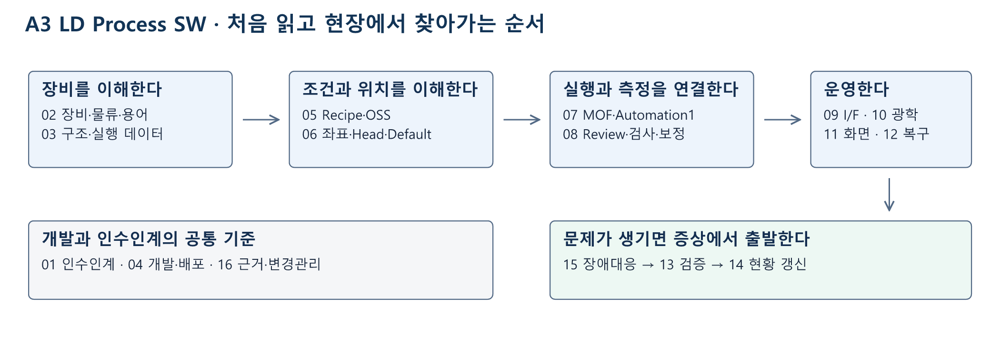
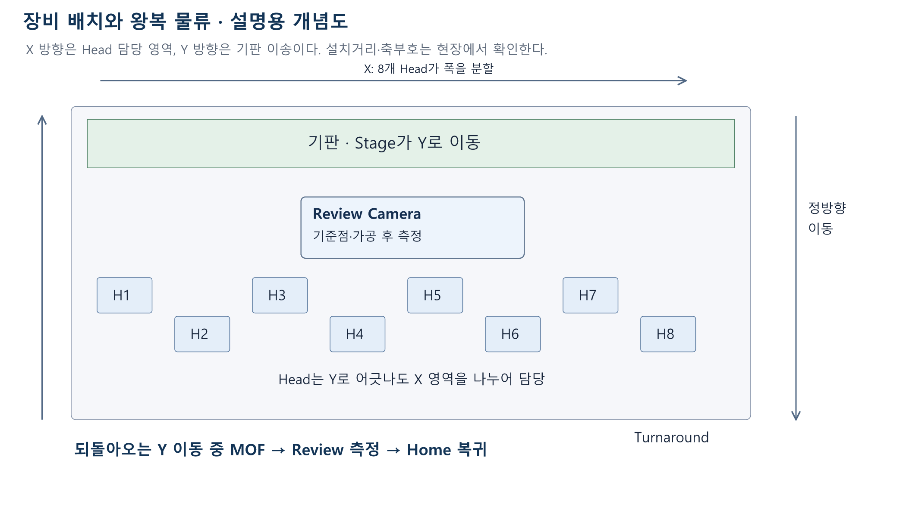
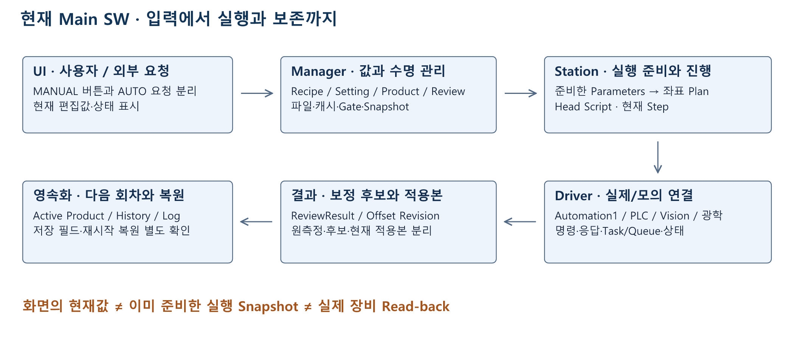
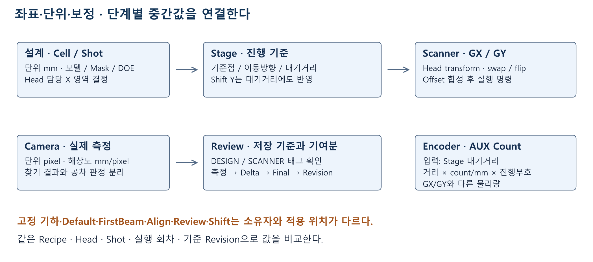
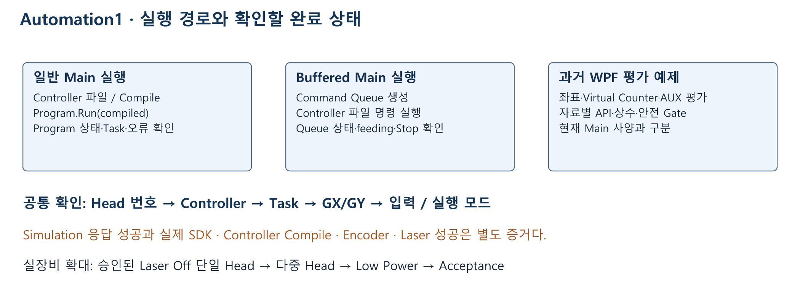
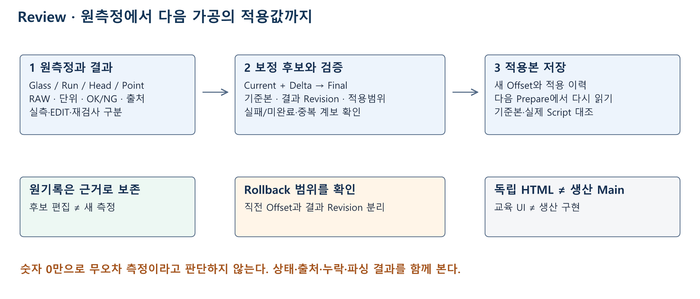
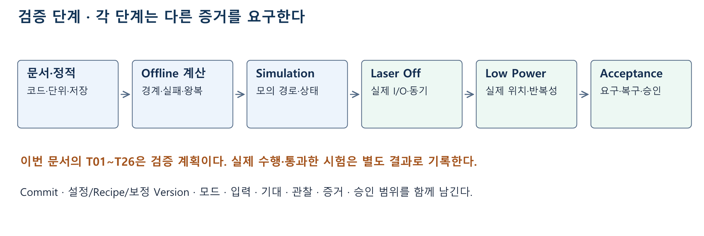

Process SW 개발
작성 기준일: 2026-11-17 | Main 코드 기준: Ver11.17.0 | UI 프로젝트 Version: 2026.11.13.0

1. 이 공간에서 무엇을 알 수 있는가
A3 LD의 Process SW 개발을 장비·공정, 데이터, 좌표, 가공, 측정·보정, 장비 연동, 운영·장애 대응과 검수까지 이어서 설명한다. 신규 인원은 순서대로 읽고, 인수인계 담당자는 실제 적용 버전과 대표 기판의 기록을 대조하며 사용한다. 각 주제는 아래의 독립 페이지에 있으며, 과거 진행률과 계획은 별도 부록에서 보존한다.
주요 기준: 현재 Main 코드 Ver11.17.0, UI 프로젝트 Version 2026.11.13.0과 사용자 제공 2026-08-09 기록이다. 실제 구현의 핵심 코드는 각 주제 페이지 본문에 직접 실었다. 구현 확인, 요구·운영안, 독립 시뮬레이터와 실장비 합격은 구별한다. 현장 설치본의 적용 버전은 별도로 확인한다.
2. 페이지 구성
| 번호 | 카테고리 / 만들 페이지 제목 | 담는 내용 |
|---|---|---|
| 01 | 01. A3 LD 시작하기와 인수인계 | 신규 인원 읽기 순서·인수인계 확인·기판 1장 추적 |
| 02 | 02. A3 LD 장비·공정·물류 | 장비 목적·용어·Head 배치·공정과 물류 |
| 03 | 03. A3 LD SW 구조와 실행 데이터 | Startup·Manager·Station·Snapshot·영속 데이터 |
| 04 | 04. A3 LD 개발환경·코드 탐색·배포 | .NET·SDK·코드 탐색·Build·배포·원복 |
| 05 | 05. A3 LD PPID·Recipe·OSS·Job Change | 값의 소유권·저장·적용·OSS·PPID와 Job Change |
| 06 | 06. A3 LD 좌표계·Head 분담·Default | 기준점·단위·Head 영역·Offset 합성·Default |
| 07 | 07. A3 LD Scanner·MOF·Automation1 | AUX·Script·일반/Buffered·Controller·Task·모드 |
| 08 | 08. A3 LD Align·Review·검사·보정 | Align·DK·검사모드·Vision 단위·보정 계보 |
| 09 | 09. A3 LD 통신과 장비 인터페이스 | PLC·Stage·Vision·Scanner의 계약과 복구 |
| 10 | 10. A3 LD 광학 Component와 Power | Laser·ATT·BEX·PowerMeter·Motion·보정 |
| 11 | 11. A3 LD 운전 화면과 Manual·Auto | 화면 읽기·Manual/Auto·미리보기와 생산 실행 |
| 12 | 12. A3 LD Alarm·Interlock·정지·복구 | Alarm·Interlock·Stop·Reset·윈도우·재개 |
| 13 | 13. A3 LD 검증·시험·Acceptance | T01~T26 시험계획·단계별 증거·Acceptance |
| 14 | 14. A3 LD 요구사항·WBS·개발현황 | 요구/WBS/일정의 구분·상태 판정과 갱신 |
| 15 | 15. A3 LD 장애대응과 미결사항 | 8개 증상별 초동 확인·복구 조건·미결사항 |
| 16 | 16. A3 LD 자료·산출물·변경관리 | 자료 선택·산출물·보안 표현 정정·변경관리 |
3. 처음 읽는 경로와 바로 대응하는 경로
처음에는 시작하기 → 장비·물류 → SW·데이터 → Recipe → 좌표 → MOF → Review 순서로 읽는다. 장애가 발생했을 때는 증상별 장애대응에서 시작하고, 정지·복구의 재개 조건과 검증을 연결한다.
4. 기판 한 장의 흐름
Recipe와 설정을 준비한다 → 실행용 값을 고정한다 → 좌표와 Head Script를 만든다 → 상대 장비와 준비 조건을 맞춘다 → 가공한다 → Review 결과를 판정·저장한다 → 유효한 보정만 적용한다 → Product·이력과 다음 작업의 기준을 남긴다. 실제 운전 순서와 분기는 MANUAL·AUTO·검사·0선·윈도우 교체 등 선택 모드에 따라 달라지므로 각 페이지의 현재 코드 경로를 따른다.
5. 과거 요구·실행현황·일정 부록
세 부록은 이번 대화에 제공된 과거 표를 보존한 자료다. 과거의 구현완료·진행률·예정일을 현재 상태로 자동 승격하지 않는다. 현재 상태 갱신은 개발현황의 근거와 판정 기준으로 수행한다.
6. 적용 전 확인할 것
사내 Confluence에는 사용자가 각 페이지를 생성하고 소스를 붙여넣는다. 각 페이지의 본문·표·링크·그림·근거를 확인한 뒤 인수인계 자료로 사용한다. 이번 작성은 문서·소스·로컬 미리보기 검증이며 생산 SW 수정, 장비 운전, 고객 Acceptance 또는 사내 페이지 저장을 수행한 결과가 아니다.
이 페이지 제목: Process SW 개발 · 아래 내용 전체를 해당 페이지 소스 편집기에 붙여넣는다.
01. A3 LD 시작하기와 인수인계
작성 기준일: 2026-11-17 | Main 코드 기준: Ver11.17.0 | UI 프로젝트 Version: 2026.11.13.0
1. 이 문서의 목적과 처음 지켜야 할 기준
A3 LD의 Process SW는 기판 한 장의 Recipe를 읽어 가공점을 계산하고, Stage·Scanner·Laser·Vision·PLC의 동작을 연결하며, 결과와 보정을 다음 작업까지 추적하는 프로그램이다. 인수인계의 목표는 화면 이름을 외우는 데서 끝나지 않는다. 특정 기판에 어떤 조건이 적용됐고 어느 단계에서 멈췄는지, 어떤 파일과 코드를 확인해야 하는지 설명할 수 있어야 한다.
처음에는 생산 중인 장비를 조작하지 않고 문서·코드·보존된 로그를 읽는다. 현재 장비에 설치된 실행파일, Config, Recipe, Calibration, 보정 데이터의 버전은 담당자와 함께 확인한다. 이 문서의 코드 기준과 현장 설치본이 다르면 해당 차이부터 기록한다.
2. 처음 읽는 순서
| 순서 | 읽을 페이지 | 읽고 설명할 수 있어야 할 것 |
|---|---|---|
| 1 | 장비·공정·물류 | 기판, Cell, Head, DOE, Review의 역할과 이동 방향 |
| 2 | SW 구조와 실행 데이터 | 화면 입력, Manager, Station, Driver, 파일 저장의 연결 |
| 3 | Recipe·OSS·Job Change | 값이 저장된 곳과 실제 운전값이 만들어지는 시점 |
| 4 | 좌표계·Head·Default | 기준점, 단위, 축 방향과 보정의 적용 위치 |
| 5 | Scanner·MOF·Automation1 | 가공 좌표, 외부 Encoder, Controller·Task·Head의 구별 |
| 6 | Align·Review·검사·보정 | 측정값, 오차, 보정 후보, 적용본과 원복의 차이 |
| 7 | 운전 화면 / 정지·복구 | MANUAL·AUTO 경로와 Reset이 실제로 바꾸는 범위 |
| 8 | 장애대응 / 검증·Acceptance | 증상별 첫 확인과 재개 전에 필요한 근거 |
3. 첫 인수인계에서 받을 자료
| 받을 항목 | 확인 방법 | 누락 시 보류할 판단 |
|---|---|---|
| 적용 소스와 실행파일 | 저장소·브랜치·Commit, 실행파일 버전, 설치 시각을 함께 기록 | Git의 최신 Commit이 장비 적용본이라고 단정하지 않는다. |
| 실제 ConfigRoot | ProgramOpen 시작 로그의 ConfigRoot와 파일 위치를 대조 | 다른 실행폴더의 Config를 수정하지 않는다. |
| 대표 Recipe·모델 | 승인된 복제본과 값의 단위·사용 Cell/Head 범위를 확인 | 임의의 기본값으로 생산 Recipe를 대신하지 않는다. |
| 좌표·Calibration·보정본 | 기준점, 축 방향, 단위, 적용 Revision과 직전 원복본을 확인 | 측정오차와 고정 설치 Offset을 합쳐 넣지 않는다. |
| 상대 장비 I/F 자료 | PLC Map, 통신 계약, Request/ACK/Busy/Complete 및 Timeout 책임자 확인 | 옛 그림의 주소·지연시간을 현장 계약으로 사용하지 않는다. |
| 최근 정상·NG 사례 | 동일 Product/Run의 UI·Sequence·Interface·Review·Product 기록 확보 | 가까운 시각의 다른 기판 로그를 같은 원인으로 묶지 않는다. |
| 잔여 결함·변경 승인 | 미결사항, 담당 역할, 적용 금지 조건, 재시험 결과 확인 | 문서 작성 또는 코드 존재를 검수 승인으로 판정하지 않는다. |
4. 기판 한 장을 추적하는 연습
다음은 문서를 읽는 연습 순서다. 실제 장비 실행 명령이 아니다. 예시 식별자 TRAINING-GLASS-001을 사용해 각 단계에서 어디에 기록이 있어야 하는지 찾아본다.
- Glass/Product와 선택된 Recipe를 확인한다. PPID, 로컬 Recipe 이름, Recipe 내용의 Version은 서로 다른 식별자일 수 있다.
- 화면에서 보이는 편집값과 준비 완료된 실행 Snapshot을 구별한다. 가공 도중 화면값이 바뀌었다고 이미 생성한 Script가 바뀐 것으로 보지 않는다.
- 선택 Cell·Head의 설계점 하나를 골라 좌표계별 값을 추적한다. mm, Pixel, Encoder Count를 각각 표시한다.
- Script의 Head, Controller, Task와 실행 결과를 연결한다. 같은 Task 번호라도 다른 Controller일 수 있다.
- Review의 Point 식별자와 수신 결과를 연결한다. 미측정·NG·측정 실패를 숫자 0의 정상점으로 바꾸지 않는다.
- 보정 전 기준본, 새 후보, 실제 적용본과 원복본을 확인한다. 화면 후보 편집과 생산 보정 저장을 구별한다.
- Product의 메모리 상태, Active 파일, History, ReviewResult에 보존되는 필드가 같은지 확인한다. 재시작 후 복원 결과까지 별도로 확인한다.
5. 상황별 바로 가기
| 상황 | 먼저 확인할 것 | 참고 |
|---|---|---|
| 프로그램이 시작되지 않음 | ProgramOpen, ConfigRoot, 참조 DLL과 초기화 실패 단계 | 개발환경 |
| 저장했는데 실행값이 다름 | Recipe 저장·캐시·Setting 우선순위·준비 Snapshot | Recipe·OSS |
| 위치가 반대로 또는 일정량 어긋남 | 좌표기준·단위·축 변환·Offset 기여분 | 좌표계 |
| 가공이 시작되지 않거나 멈춤 | 현재 Step, 상대 Request/ACK, Task/Queue 상태·Timeout | MOF / I/F |
| Review NG 또는 보정값 급변 | RAW·단위·Point 연결·NG 사유·후보 출처·Revision | Review |
| Stop/Reset 후 다시 시작하기 어려움 | 원인 해소, 신호 OFF 확인, 완료/미완료 범위와 재개 승인 | 정지·복구 |
6. 인수인계 완료 체크
- 현재 설치본과 문서의 기준 차이를 설명하고 근거를 찾을 수 있다.
- 기판 한 장의 Recipe→실행 Snapshot→좌표→Script→결과→보정 기록을 연결할 수 있다.
- MANUAL START와 AUTO 요청 경로를 구별하고, Simulation 결과의 한계를 설명할 수 있다.
- 새 Parameter 하나를 변경할 때 정의·파일·캐시·실행·전송·결과·복원에 미치는 영향을 찾을 수 있다.
- 대표 장애 하나에 대해 읽기 확인 순서와 재개 조건을 기록하고 담당자에게 설명할 수 있다.
- 실기 참여 전 단계별 검증에서 필요한 승인과 미실행 항목을 확인했다.
체크 완료는 교육 이수 기록이다. 실제 Laser 출력, 공정 품질 또는 고객 Acceptance 승인은 해당 시험과 승인 기록으로 별도 관리한다.
이 페이지 제목: 01. A3 LD 시작하기와 인수인계 · 아래 내용 전체를 해당 페이지 소스 편집기에 붙여넣는다.
02. A3 LD 장비·공정·물류
작성 기준일: 2026-11-17 | Main 코드 기준: Ver11.17.0 | UI 프로젝트 Version: 2026.11.13.0

기준: A3Drilling Ver11.17.0 · 9a43c709 · 2026-11-17. 기존 Ver11.13.0 분석에 인용된 관련 소스는 새 기준과 바이트가 같음을 확인했다. 이 페이지는 소스와 문서의 설명이며 장비 운전·정밀도·성능 합격 기록은 별도다.
A3 LD가 하는 일
A3 LD는 큰 기판 위에 반복 배치된 가공점을 여러 레이저 Head가 나누어 가공하는 시스템이다. Recipe는 어디에 어떤 조건으로 가공할지를 정하고, Stage는 기판을 이송하며, Scanner는 레이저 조사 위치를 빠르게 바꾼다. Vision은 기준 마크와 가공 결과를 측정한다. Process SW는 이들을 같은 기판과 같은 실행 회차로 묶는다.
가공점을 계산했다는 사실, Controller에 파일을 올렸다는 사실, 기판 가공이 끝났다는 사실은 각각 다른 단계다. 개발과 장애 분석에서는 이 세 가지를 먼저 나누고 마지막으로 품질 판정을 연결한다. 그래야 화면의 정상 표시를 실제 가공 결과로 오해하지 않는다.
처음 읽을 때 알아둘 대상
| 대상 | 쉬운 설명 | 개발 시 붙여야 할 식별자 |
|---|---|---|
| Glass·기판 | 장비를 통과하는 한 장의 대상 | GlassId, LotId와 해당 실행 ProcessId |
| Cell | 기판 안에서 반복되는 제품·패턴 단위 | CellNo와 해당 Cell의 설계 위치·회전 |
| Shot | Scanner가 처리하는 한 설계 가공 위치 | ShotKey, Cell/행/열, Head 배정 |
| Head | 가공 영역을 나누어 담당하는 레이저 Scanner | HeadNo와 AutomationNo·TaskNo |
| DOE Beam | 광학 분기로 생기는 개별 조사점 | 격자 크기와 BeamNo, 실제 광학 구성 |
| Review 결과 | 가공 뒤 위치 편차와 판정을 담는 기록 | 측정 방식·결과 출처·Recipe·기준 보정 |
Shot 한 개와 광학 Beam 한 개는 같은 수량 단위가 아니다. DOE를 사용하는 Head에서는 한 Shot에 여러 Beam 자국이 대응할 수 있다. 설계 Shot 수, 실행 Shot 수, 검사 Beam 수를 한 숫자로 합산하지 않는다. Head 수와 활성 Head 수도 구분한다.
장비 역할과 Process SW의 경계
| 구성 | 맡는 역할 | Process SW가 확인할 것 |
|---|---|---|
| Stage와 상위 제어 | 기판 이송·운전 요청·위치 및 상태 전달 | ABLE/START/COMPLETE와 OFF 복귀, 준비 위치·Busy 상태 |
| Scanner·Automation1 | Head 축 이동, 생성 Script 또는 Queue 실행 | Controller 번호, Task, 해당 회차 파일, 준비 RunId와 완료 상태 |
| Laser·광학 기구 | 조사 조건과 광학 경로 제공 | Power/Frequency·ATT·DOE Z 등 조건과 인터락 |
| Vision | 마크·가공 결과 측정과 결과 전달 | 명령 종류, Camera/좌표 단위, 응답·프레임·판정 |
| Process Client | 레시피·좌표·실행·결과를 묶음 | 준비 스냅샷과 실제 실행 결과의 일치 |
이 표는 기능 책임을 이해하기 위한 구성도다. 실제 PC 개수, 네트워크 주소, 배선과 장치 허용속도는 승인된 현장 자료가 필요하다. 같은 기판을 다루어도 Stage 상태, Scanner Task 상태, Vision 검사 상태는 각각 독립적으로 진행될 수 있다.
기판이 이동하는 방향과 기준점
2026-08-07 좌표 검증 프로젝트는 Review Camera가 선행하고 Scanner가 그 뒤에 있는 배치를 설명한다. 아래 순서는 그 문서의 물류 개념을 학습용으로 풀어 쓴 것이다. 최신 Main의 상세 handshake나 고객 승인 물류 시퀀스를 이 순서만으로 확정하지 않는다.
- Home에서 기판과 운전 조건을 준비한다.
- 정물류 방향으로 이동하며 Review 위치에서 AK 기준을 확인한다.
- Scanner 뒤쪽의 반전 위치까지 이동한 뒤 진행 방향을 바꾼다.
- 역물류로 Scanner 아래를 통과하는 동안 Stage Encoder를 기준으로 MOF 가공한다.
- 가공점이 Review 위치에 도달하면 필요한 검사와 결과 수집을 수행한다.
- 결과·공정 완료를 정리하고 Home 복귀 또는 다음 물류 단계로 넘어간다.
여기서 정물류·역물류는 경로 방향의 이름이다. 화면의 +Y·−Y, Scanner GY 부호와 자동으로 같아지지 않는다. 현재 코드는 STAGE_SCAN_DIRECTION_Y와 Head별 축 변환으로 방향을 계산하므로 좌표 설명에는 물류 화살표와 수치축 화살표를 함께 표시해야 한다.
Camera와 Head 사이의 기구 거리는 설치·Teaching의 기준값이다. 가공 후 측정한 Review Offset은 공정 오차를 보정하는 값이다. 두 값을 같은 종류로 저장하면 설치 오차와 가공 변화의 원인을 구분하기 어렵다. 기준값 변경과 보정값 변경은 기록에서도 나눈다.
현재 Main의 두 운전 시작 경로
| 진입점 | 어떻게 시작하는가 | 설명에 포함할 경계 |
|---|---|---|
| MAIN START / Semi Auto | MANUAL에서 초기 ProcessModel 준비 후 Station.Start | 사용자 버튼을 누른 실행. AUTO 전체를 이 경로로 설명하지 않음 |
| AUTO / Stage 요청 | AUTO 전환 후 StartStageRequests의 worker가 요청 감시 | AUTO 전환 자체가 즉시 레이저 가공 시작은 아님 |
| DoReady | 요청 조건 준비, 좌표와 Script 생성·업로드 | Task RUN과 MOF 준비완료는 다음 책임으로 분리 |
| Process 요청 | 준비 위치·신호 조건 확인 뒤 MOF zero와 Task 실행 | Run 응답과 모든 Head 완료를 구분 |
현재 AUTO prepare callback은 입력 사본의 SHIFT_OFFSET_X와 SHIFT_OFFSET_Y를 0으로 정규화한다. 수동 MOF에서 Shift가 반영된 결과를 봤더라도 같은 Shift가 AUTO에 유지된다고 설명할 수 없다. Shift 유지·확인창·초기화 옵션이 필요한지는 요구와 현 구현을 대조하는 별도 항목이다.
한 장의 기판을 추적하는 진행 순서
- 어느 Recipe가 선택되었는지와 값 파일·공통 Setting·최신 Review Offset을 확인한다.
- 해당 회차 ProcessModel에 ProcessId, RecipeId, GlassId, LotId와 조건 사본을 묶는다.
- Head별 점 목록을 만들고 실행 회차의 Script·좌표 CSV·Manifest를 생성한다.
- Manifest에 적힌 실제 파일을 해당 Automation 대상으로 업로드한다.
- 요청 경로별 준비 gate와 MOF Ready RunId를 확인하고 Task 실행을 시작한다.
- 모든 대상 Head의 완료·정지·오류를 수집하고 필요한 Review·후속 검사의 합류를 확인한다.
- Product 상태·판정·이력을 저장하고 상대측 완료응답과 신호 OFF까지 확인한다.
이 목록은 개발자가 확인할 책임 순서다. Review와 0선 검사 등이 어느 이동 구간에서 병행되고 어디서 합류하는지는 각 시퀀스의 근거를 추가해야 한다. 전 공정을 무조건 한 줄 직렬 흐름으로 표현하면 병행 작업과 완료 조건이 가려질 수 있다.
현상별로 먼저 확인할 것
| 현상 | 첫 확인 | 이어 확인할 증거 |
|---|---|---|
| AUTO인데 시작하지 않음 | Stage 요청 감시가 시작되었는지 | 요청 비트·ABLE·START·Busy·이전 cleanup 소유권 |
| 파일 생성 뒤 멈춤 | 업로드 성공과 준비 RunId | Head별 Manifest 파일·Controller·Task 상태 |
| Head 일부만 움직임 | 활성 Head·배정 점 수 | HeadNo/AutomationNo/TaskNo 매핑과 해당 Head 오류 |
| 화면 좌표와 가공이 다름 | 화면 입력과 준비 스냅샷 시점 | Recipe·Offset 경로/시각·실제 Script 좌표 |
| Completed인데 품질이 의심됨 | 수행 상태와 OK/NG 판정 | 공정 Skip 여부·Vision 실패·실측 출처 |
원인 분석에서는 같은 시각이라는 이유만으로 다른 기판의 최신 로그를 붙이지 않는다. ProcessId·GlassId·RecipeId·Head·Task와 시간창을 먼저 맞춘다. 통신 정상·Task 실행·광학 가공·품질 판정은 각기 다른 증거가 필요하다.
현재 설명의 적용 범위와 남은 확인
Stage 요청의 Glass/Lot 정보는 현재 Product를 사용하거나 SIM/DUMMY 식별자를 생성하는 fallback이 있고, Stage 매핑 합의 후 바꾸라는 TODO가 남아 있다. 따라서 상위 PPID/SubPPID 자동 Job Change가 끝까지 완성되었다고 표현하지 않는다. 선택 레시피와 상위 요청 식별자가 정확히 연결되는 조건은 고객 계약 확인 대상이다.
기구 배치·실물 방향·Encoder 극성·속도·레이저 조건·광학 품질은 현장 평가 항목이다. 이 페이지 작성 과정에서는 레이저 조사, Stage 이동, 벤더 DLL 로드, Controller Script 실행과 실측 정밀도 시험을 수행하지 않았다.
다음 읽기: SW 구조와 실행 데이터, 좌표계와 Head 분담, MOF와 Automation1, Recipe·PPID.
실제 코드로 읽는 처리 흐름
다음 세 발췌는 사용자 START, AUTO 준비 callback, DoReady 신호 교환을 직접 보여준다. 세 경로의 책임과 완료 시점을 나누어 읽는다. 원본의 연속 행을 발췌한 코드이며 독립 실행용 전체 함수는 아니다.
MAIN START의 MANUAL 확인·준비·실행·완료 대기
코드 위치명: CRootView.cs · 본문에서 읽는 실제 구현 발췌
if (!IsManualStartEligible())
{
StatusMessage = "Main START is available in MANUAL mode only.";
CRecipeConfirmDialog.ShowWarning("공정 시작 불가", "MAIN START는 MANUAL 모드에서만 사용할 수 있습니다.\nAUTO 모드는 Stage PC 요청을 대기합니다.");
return;
}
var cycleCts = new CancellationTokenSource();
var cycleCompletion = new TaskCompletionSource<bool>(TaskCreationOptions.RunContinuationsAsynchronously);
_autoCycleCts = cycleCts;
_autoCycleCompletion = cycleCompletion;
SetAutoCycleState(EN_AUTO_CYCLE_STATE.Preparing);
try
{
await WaitForInitialProcessModelPreparation(cycleCts.Token);
await PrepareInitialProcess(applyShiftOffset: true, cancellationToken: cycleCts.Token);
if (!IsManualStartEligible())
{
StatusMessage = "Main START was canceled because AUTO mode was selected.";
return;
}
if (!CheckStageMotionOwnership((title, message) => CRecipeConfirmDialog.ShowWarning(title, message), "START"))
return;
cycleCts.Token.ThrowIfCancellationRequested();
SetAutoCycleState(EN_AUTO_CYCLE_STATE.Running);
_stationManager.Start(cycleCts.Token);
var finalStatus = await WaitForStationCycleFinished(cycleCts.Token);
cycleCts.Token.ThrowIfCancellationRequested();
if (finalStatus.State == EN_STATION_STATE.Alarm || finalStatus.SequenceState == EN_STATION_SEQUENCE.Error)
{
StatusMessage = $"Semi Auto Run failed: {finalStatus.LastMessage}";
if (finalStatus.LastMessage.Contains("Glass 정보를 생성하지 못해", StringComparison.Ordinal))
{
CRecipeConfirmDialog.ShowWarning("공정 시작 불가", finalStatus.LastMessage);
}
return;
}
읽는 방법: 입력은 현재 운전 모드와 준비된 공정 조건이다. MANUAL 여부를 확인하고 applyShiftOffset:true로 준비한 뒤 Stage 동작 소유권을 확인하여 Station.Start를 호출한다. 이어 WaitForStationCycleFinished로 최종 상태를 기다리므로 Start 호출 반환만을 공정 완료로 취급하지 않는다. AUTO 모드 선택과 교차한 경우에도 다시 자격을 검사하는 이유를 보여준다.
AUTO 준비에서 입력 사본·Shift 정규화와 실행 책임 분리
코드 위치명: CStationProcess.cs · 본문에서 읽는 실제 구현 발췌
StageRequests.Start(
async token =>
{
// Preserve the preceding glass's frozen identity until its requested
// diagnostic Review is handled. Do not replace ProcessModel first.
EnsureZeroLineFollowUpCompleted();
var data = await request(token).ConfigureAwait(false);
var parameters = new Dictionary<string, string>(data.Parameters, StringComparer.OrdinalIgnoreCase);
// Manual MOF Shift is never applied to AUTO machining.
parameters["SHIFT_OFFSET_X"] = "0.000000";
parameters["SHIFT_OFFSET_Y"] = "0.000000";
PrepareProcess(data.ProcessId, data.RecipeId, data.GlassId, data.LotId, parameters, token, preserveSequenceActions: true);
await StageProcessData().PrepareDoReady(StageProcessSpeed(), token).ConfigureAwait(false);
await CaptureZeroLineCycle(data, token).ConfigureAwait(false);
},
token => Task.Run(() =>
{
var model = GetProcessModel();
BuildAutomationScript(model, token);
UploadAutomationScript(model, token);
token.ThrowIfCancellationRequested();
// DoReady uploads only. MOF zero and Task RUN execute after DoReady signal reset,
// in Process preparation, once Stage Ready position and Busy OFF are verified.
}, token),
token =>
{
var model = GetProcessModel();
var targets = model.HeadPlans.Select(head => new ST_MOF_ZERO_TARGET(head.AutomationNo, head.TaskNo, ReadTextAny(model.Parameters, ReadTextAny(model.Parameters, "GX", CreateHeadKeys(head.HeadNo, "X_AXIS")), CreateHeadKeys(head.HeadNo, "ENCODER_AXIS"))));
var frozen = targets.ToArray();
AddProcessLog("INFO", "MOF_ZERO", $"Auxiliary zero check requested. Targets={string.Join(";", frozen.Select(target => target.ToString()))}");
return _automationManager.ZeroMofFeedbackIfNeeded(frozen, token);
},
RunStageTasks,
읽는 방법: 입력은 Stage 요청 callback이 반환한 ProcessId·RecipeId·GlassId·LotId와 Parameters다. Parameters 사본의 Shift X/Y를 0으로 정규화하고 PrepareProcess에 넘긴다. 다음 callback은 모델의 Script를 생성·업로드하며, MOF zero와 RunStageTasks는 별도 callback으로 전달된다. 수동 Shift와 AUTO의 차이, DoReady 업로드와 Task 실행의 경계를 코드에서 확인할 수 있다.
DoReady의 ABLE·START·준비·업로드·COMPLETE 진행
코드 위치명: CStationProcess.cs · 본문에서 읽는 실제 구현 발췌
_scenario = "DOREADY";
_doReadyOutputsOwned = true;
BeginLogCycle("DOREADY_PROCESS");
LogEvent("ACTIONS_RESET All actions -> WAIT for a new request.");
actions.Reset(); // Reset execution feedback only when accepting a new request.
await WriteConfirmed(PrcAble, 1, token).ConfigureAwait(false);
Set("WAIT_START", "DoReady ABLE acknowledged; waiting for Stage START.");
await WaitSignal(StgStart, 1, token).ConfigureAwait(false);
await WriteConfirmed(PrcStart, 1, token).ConfigureAwait(false);
Set("PREPARE", "Preparing the request recipe and coordinates.");
await Action(CSequenceActionIds.PrepareData, prepare, token).ConfigureAwait(false);
Set("BUILD_UPLOAD", "Building and uploading scripts only; MOF initialization and Task RUN belong to Process preparation.");
await Action(CSequenceActionIds.BuildUploadScript, buildUpload, token).ConfigureAwait(false);
_distortionNeedsDoReady = false;
await WriteConfirmed(PrcComplete, 1, token).ConfigureAwait(false);
Set("WAIT_COMPLETE", "Scripts uploaded; waiting for Stage DoReady COMPLETE.");
await WaitSignal(StgComplete, 1, token).ConfigureAwait(false);
Set("DOREADY_SIGNALS_CLEAR", "Clearing our DoReady signals and waiting for Stage DoReady signals OFF.");
읽는 방법: 입력은 새 DoReady 요청과 상대 Stage의 START·COMPLETE 신호다. 실행 피드백을 새 요청 기준으로 초기화하고 ABLE 확인, START 대기, 준비와 Build/Upload를 순서대로 수행한다. 업로드 뒤 자기 COMPLETE를 쓰고 상대 COMPLETE를 기다린 다음 신호 정리 단계로 넘어간다. 이 발췌 뒤에 실제 OFF 정리와 후속 Process 단계가 이어지므로 COMPLETE 문구를 전체 가공 완료로 읽지 않는다.
이 페이지 제목: 02. A3 LD 장비·공정·물류 · 아래 내용 전체를 해당 페이지 소스 편집기에 붙여넣는다.
03. A3 LD SW 구조와 실행 데이터
작성 기준일: 2026-11-17 | Main 코드 기준: Ver11.17.0 | UI 프로젝트 Version: 2026.11.13.0

기준: A3Drilling Ver11.17.0 · 9a43c709 · 2026-11-17. 기존 Ver11.13.0 분석에 인용된 관련 소스는 새 기준과 바이트가 같음을 확인했다. 이 페이지는 소스와 문서의 설명이며 장비 운전·정밀도·성능 합격 기록은 별도다.
구조를 읽는 기준
프로그램을 처음 볼 때는 화면 이름보다 데이터의 소유자를 찾는 것이 빠르다. UI는 조작과 표시, Manager는 상태와 업무 규칙, File 계층은 저장 형식, Station은 동작 순서, Interface·Motion은 장치 호출을 맡는다. 한 숫자를 수정할 때도 누가 원본을 저장하고 누가 사본을 실행하는지를 구분해야 한다.
CApp → CAppStartup → CManager → CRootView·메뉴
UI 요청 → Manager → Recipe/Setting/File 또는 Station
Station → 좌표·실행 모델 → Script 파일 → Automation/Interface → Controller
측정·실행 결과 → Review/Product → 파일·이력·화면이 화살표는 모든 클래스가 단방향으로만 참조한다는 뜻은 아니다. 개발자가 기능의 생산자와 소비자를 찾는 출발점이다. 실제 변경은 생성자 주입, 이벤트 구독, snapshot 공개와 파일 계약까지 따라가며 범위를 정한다.
시작과 종료에서 생기는 시간 경계
- CAppStartup이 Config 기준을 정하고 Recipe·Setting·Product·ReviewResult·ReviewOffset·Script 파일 어댑터를 만든다.
- CManager가 정의와 캐시를 읽고 Interface, Automation, Motion, Product, Review, Recipe, Station을 구성한다.
- manager.Initialize는 Task.Run으로 시작한다. RootView를 반환하고 창이 보이는 시점과 장비 초기화 완료 시점은 다를 수 있다.
- RootView와 메뉴는 전달받은 Manager 객체를 공유하며 백그라운드 감시가 별도로 시작된다.
- 종료 시에는 호출된 Stop 경로와 별도의 Destroy 전체 정리 경로를 구분하여 연결 해제·이력 flush 범위를 확인한다.
새 메뉴가 자체적으로 두 번째 Manager를 만들면 화면은 같은 장비처럼 보여도 캐시와 실행 소유권이 갈라질 수 있다. 기존 RootView가 전달하는 서비스와 데이터 객체를 재사용하는지 확인한다. 초기화 중인 상태를 단순한 IsConnected 하나로 표현할지도 실제 준비 조건과 함께 검토한다.
핵심 Manager의 책임
| 소유자 | 핵심 책임 | 함께 읽을 곳 |
|---|---|---|
| CRecipeManager | Recipe 로드·저장·변경이력·동시 편집 규칙 | CJhmiRecipeFile, 정의 CSV, Recipe UI |
| CSettingManager | Option/Interface/Io/Motor/Alarm 항목과 캐시 | CSettingFile, Section 정의, 런타임 합성 |
| CInterfaceManager | 등록 장치 찾기·통신 명령·상태·로그 | CInterfaceDevice, CComm, 장치별 Comm |
| CAutomationManager | Script 업로드·일반/Buffered 실행·상태 | CAutomation1Comm, 생성 Script와 Task |
| CMotionManager | 논리 축을 Controller에 연결하고 명령 실행 | Motor 정의와 실제 축 식별자 |
| CProductManager | 한 기판의 조건·공정상태·결과·Active 기록 | CProductFile, Review 결과 전달부 |
| CReviewManager | 측정 계획·Vision 결과·리뷰 결과 연결 | ReviewResult/Offset 파일과 Correction UI |
| CStationManager·CStationProcess | 준비 모델·실행순서·AUTO 요청·정리 | StageRequests, Interlock, 각 callback |
같은 Parameter라도 네 가지 형태가 있다
| 층 | 담는 것 | 자주 생기는 혼동 |
|---|---|---|
| 항목 정의 | Key·표시명·타입·단위·범위·Use·기본값 | 화면에 보이는 항목이면 이미 저장·실행된다고 생각함 |
| Recipe/Setting 값 | 파일에 저장된 작업 조건 또는 설비 값 | 같은 이름의 Key와 Name을 무조건 동일시함 |
| 실행 Parameters·ProcessModel | 이번 준비 시 합쳐진 조건 사본 | 파일을 바꾸면 이미 준비한 모델도 자동 변경된다고 생각함 |
| Product·결과·이력 | 실행에 적용한 조건과 그 뒤의 상태·결과 | 다음 Recipe 편집값을 과거 기판의 조건으로 해석함 |
현재 BuildRuntimeParameters는 입력 Dictionary를 복사하고 Option과 Motor Setting의 Key 값을 덮어쓴 뒤 최신 Review Offset을 넣는다. 같은 Key가 Recipe에도 있으면 실제 실행값은 설정 합성의 영향을 받을 수 있다. 따라서 Recipe 화면의 숫자만으로 실제 Script 입력을 확정하지 않는다.
Review Offset는 준비 당시 파일 경로와 저장시각이 함께 기억된다. 준비 뒤 다른 보정으로 바뀌면 최신성 확인이 다시 DoReady를 요구할 수 있다. Monitor 미리보기는 현재 선택 입력을 다시 계산하는 경로이므로, 이전 준비 모델과 시점이 맞는지도 따로 비교해야 한다.
대표 데이터 구조
| 데이터 | 주요 식별·필드 | 목적 |
|---|---|---|
| ST_RECIPE_DEFINITION | Id, Name, Parameters, History | 편집·저장할 Recipe 한 개 |
| ST_PROCESS_MODEL | ProcessId, RecipeId, GlassId, LotId, HeadPlans, Parameters, CreatedAt | 해당 회차 실행의 묶음 |
| ST_HEAD_PROCESS_PLAN | HeadNo, Laser/Speed/Ramp 조건, Shots, AutomationNo, TaskNo, ScriptFileName | Head별 실행 배정 |
| ST_HEAD_SHOT_POINT | 설계점·Scanner점·Offset 성분·Encoder 대기점 | 최종 좌표와 계산 중간값 추적 |
| ST_SCRIPT_BUILD_RESULT | FilePath, HeadScripts, TotalShots, CreatedAt, MofReadyRunId | 이번 회차 생성물과 준비 식별자 |
| Product 데이터 | 기판 식별·Recipe 사본·Align/Distortion/Review·Runtime | 기판 한 장의 상태와 결과 관리 |
TaskNo의 기본값은 HeadNo지만 별도 property이며 AutomationNo도 따로 있다. 기본 설정이 같다는 이유로 세 식별자를 하나로 합치면 다중 Controller·Task 매핑에서 잘못된 대상으로 실행할 수 있다. 로그에도 필요한 세 번호를 각각 남겨야 한다.
파일 형식과 영속화 경계
현재 Main Recipe 값은 Tab,Name,Value의 첫 세 필드와 나머지 Extra를 읽는다. Setting 값은 헤더가 있는 TAB,NAME,VALUE 구조이고 Active Product는 TYPE,NAME,VALUE 구역형 기록이다. 항목 정의 CSV는 타입·단위·범위 등 더 많은 열을 갖는다. 이들을 하나의 Key,Value 형식으로 설명하면 로드·저장 문제가 생긴다.
8월 MOF WPF 샘플의 PPID 템플릿은 Key,Value였다. 그 샘플의 파일을 현재 Main의 Recipe 폴더에 넣으면 된다는 절차는 이 페이지의 지원 범위가 아니다. 변환이 필요하면 정의 Key, Tab, 값, Extra와 이력 계약을 검토하고 별도 사본으로 검증한다.
Product Active 파일은 메모리 객체 전체를 자동 직렬화하지 않는다. 명시된 구역·필드만 저장하고 Runtime은 로드 시 빈 초기 구조로 구성하는 부분이 있다. 기존 분석에서는 새 VisionResultCode·NgReason가 ReviewResult CSV와 달리 Product compact writer/reader에 남지 않는 공백을 확인했다. 결과 파일 저장과 앱 재시작 복구의 보존 범위는 각각 확인한다.
상태를 한 개의 완료 표시로 합치지 않기
기판의 Created/Running/Completed/Stopped/Error와 품질의 Pending/Skipped/OK/NG는 목적이 다르다. Completed이면서 Skipped인 경우도 있으므로 완료색만으로 실제 가공·검사 합격을 확정하지 않는다. Head별 상태와 Station 내부 단계, Controller Task 상태도 별도 계층이다.
Active 파일을 읽지 못한 상태에서 새 Product를 만들지 않도록 하는 경계와 실행 중단 복구가 있다. Running 흔적을 Stopped로 복구하는 것과 중간 Shot에서 자동 재가공을 시작하는 것은 다르다. 복구 화면에는 남아 있는 기판, 실행 조건, 완료한 작업과 재시작 허용 절차가 드러나야 한다.
새 Parameter를 추가할 때의 진행 순서
- 이 값이 설비 공통인지 Recipe별인지 Cell/Shot/Head별인지, 단위와 좌표기준이 무엇인지 정한다.
- 정의 CSV의 Key·타입·범위·Use와 값 파일의 저장 규칙을 맞춘다.
- Manager의 조회·검증·캐시 갱신·동시 수정 확인 경로를 연결한다.
- BuildRuntimeParameters에서 덮어쓰기 또는 최신 Offset 합성과 충돌하는 Key인지 확인한다.
- 계산기·ProcessModel·Script·결과파일 중 실제 소비자와 추적 필드를 연결한다.
- UI 표시·입력·적용완료와 저장실패 메시지가 commit 전후를 구분하는지 확인한다.
- 저장/재로드·준비/실행·앱 재시작을 분리하여 동일한 값과 출처가 유지되는지 검증한다.
장애를 좁히는 확인표
| 증상 | 확인 순서 |
|---|---|
| 저장했는데 화면이 옛값 | 저장 파일 → reload 결과 → Manager cache → UI 변경알림 |
| 화면값과 Script가 다름 | 선택 Recipe → Setting 동일 Key → 최신 Offset → 준비시각 |
| 재시작하면 결과 정보가 사라짐 | 메모리 필드 → writer 열 → reader 생성 → 복구 경로 |
| 장치가 두 번 시작되거나 정지가 늦음 | 실행 owner → worker/CTS → cleanup 완료 → 중복 클릭 gate |
| 시작창은 떴는데 명령 불가 | 비동기 Initialize 결과 → 인터페이스/축 준비 → 인터락 |
이 확인표는 소스에서 도출한 조사 순서다. 이번 문서 작성에서는 정상 설비 빌드·앱 시작·재시작 round-trip·벤더 장치 연결을 새로 실행하지 않았다. 소스 인용이 있다는 사실과 운전 시나리오를 통과했다는 사실을 분리하여 상태를 기록한다.
다음 읽기: Recipe·PPID, 좌표계, Automation1 실행.
실제 코드로 읽는 처리 흐름
프로그램 조립과 서비스 소유 관계를 보여주는 실제 코드다. 파일 저장 책임, 장비 초기화의 비동기 경계, RootView와 Station에 전달되는 공유 객체를 차례로 확인한다. 생성된 화면과 장비 준비 완료는 서로 다른 시점일 수 있다.
CAppStartup.CreateMainViewModel의 파일 어댑터 생성
코드 위치명: CAppStartup.cs · 본문에서 읽는 실제 구현 발췌
public static CRootView CreateMainViewModel()
{
var configRoot = GetConfigRoot();
var settingFile = new CSettingFile(configRoot);
var automationScriptFile = new CAutomation1ScriptFile(GetScriptDirectory(configRoot, settingFile));
var manager = new CManager(
configRoot,
new CJhmiRecipeFile(configRoot),
settingFile,
new CManualScanFile(configRoot),
new CInterfaceFile(configRoot),
new CBETFile(configRoot),
new CMotorFile(configRoot),
new CMelsecMapFile(configRoot),
new CProductFile(configRoot),
new CReviewResultFile(configRoot),
new CReviewOffsetFile(configRoot),
new CLogManager(configRoot),
automationScriptFile,
configStructureFile: new CConfigStructureFile(configRoot),
alarmListFile: new CAlarmListFile(configRoot)
);
읽는 방법: 입력은 GetConfigRoot로 결정한 구성 기준과 Setting 파일이다. Recipe·Product·ReviewResult·ReviewOffset·Script 등 저장 형식을 담당하는 구체 파일 객체를 만들고 CManager에 주입한다. UI가 파일 형식을 직접 모두 처리하는 구조가 아니며, 새 저장 항목을 추가할 때 File 계층과 Manager 계약을 함께 확인해야 하는 이유를 보여준다.
비동기 Initialize와 RootView·감시 구성
코드 위치명: CAppStartup.cs · 본문에서 읽는 실제 구현 발췌
async global::System.Threading.Tasks.Task SelectValue()
{
try
{
await manager.Initialize();
WriteManagerStartupStatus(manager, "MANAGER_INITIALIZE_SEQUENCE", lastLoggedStartupOrder);
}
catch (Exception exception)
{
CProgramOpenLog.Write("MANAGER_INITIALIZE_FAILED", exception);
WriteManagerStartupStatus(manager, "MANAGER_INITIALIZE_SEQUENCE", lastLoggedStartupOrder);
}
}
_ = Task.Run(SelectValue);
var rootView = new CRootView(
manager,
manager.Station(),
manager.Interface(),
manager.Motion(),
manager.Alarm(),
manager.InterLock(),
manager.ManualScanFile(),
manager.Recipe(),
manager.Setting(),
manager.Product(),
manager.Review(),
automationScriptFile
);
manager.StartBackgroundMonitoring();
return rootView;
}
읽는 방법: 입력은 앞에서 생성한 Manager와 Script 어댑터다. Initialize는 Task.Run으로 시작되고 RootView에는 같은 Manager의 Station·Interface·Motion·Recipe·Product·Review가 전달된다. 감시를 시작한 뒤 RootView를 반환하므로 화면 생성과 장치 초기화 완료가 하나의 동기 완료가 아니다. 발췌의 예외 로그는 초기화 실패 기록이며 장치 자동 복구 보장을 의미하지 않는다.
CManager 생성자의 Automation·Product·Review·Station 연결
코드 위치명: CManager.cs · 본문에서 읽는 실제 구현 발췌
_automationManager = new CAutomationManager(_interfaceManager, _settingManager, GetProjectRoot(), GetScriptDirectory());
AddStartupStep("Create Automation Manager", EN_MANAGER_STARTUP_RESULT.Ready, "CAutomationManager created.");
var melsecMapData = LoadMelsecMapList();
_interfaceManager.Melsec.ReloadMap(melsecMapData);
AddStartupStep("Register JHMI_MELSEC_MAP", EN_MANAGER_STARTUP_RESULT.Ready, $"Registered {melsecMapData.Count} MELSEC map row(s).");
var motorData = LoadMotorList();
IReadOnlyList<ST_IO_DATA> ioData = [];
_motionManager = new CMotionManager(_interfaceManager, motorData, ioData, isSimulation: GetMotionSimulationMode(simulationMode));
_alarmMotorSnapshots = new(_motionManager.GetAxisStatusAsync);
_alarmLaserSnapshots = new(_interfaceManager.ReadLaserStatusAsync);
_alarmBetSnapshots = new(_interfaceManager.ReadBetStatusAsync);
AddStartupStep("Create Motion Manager", EN_MANAGER_STARTUP_RESULT.Ready, $"CMotionManager created. Axis={motorData.Count}, Simul={_motionManager.IsSimulation}");
_productManager = new CProductManager(_productFile, _logManager);
AddStartupStep("Create Product Manager", EN_MANAGER_STARTUP_RESULT.Ready, "CProductManager created.");
LoadActiveProduct();
_reviewManager = new CReviewManager(_reviewResultFile, _interfaceManager, _settingManager, _productManager, _logManager);
AddStartupStep("Create Review Manager", EN_MANAGER_STARTUP_RESULT.Ready, "CReviewManager created.");
_recipeManager = new CRecipeManager(_recipeFile);
_stationManager = new CStationManager(
_interfaceManager,
_motionManager,
_interLockManager,
_settingManager,
_automationScriptFile,
_automationManager,
_reviewOffsetFile,
_productManager,
_logManager,
GetScriptDirectory(),
_recipeManager,
_reviewManager,
HandleProtectWindowRetryExhausted
);
AddStartupStep("Create Station Manager", EN_MANAGER_STARTUP_RESULT.Ready, $"Script={GetScriptDirectory()}");
_stationManager.StageRequests.Failed += _alarmManager.SetSequenceFailure;
_interfaceManager.StageReviewSequences.Failed += _alarmManager.SetSequenceFailure;
읽는 방법: 입력은 등록된 Interface·Setting·MELSEC map·Motor 정의와 파일 객체다. Automation/Motion/Product/Review/Recipe Manager를 만들고 그 객체들을 StationManager에 전달하며 실패 이벤트를 알람으로 연결한다. Product와 Review는 같은 기판 정보를 공유하지만 역할이 다르며, 새 메뉴에서 별도 Manager를 만들면 캐시와 실행 소유권이 갈라질 수 있음을 이해하는 근거다.
이 페이지 제목: 03. A3 LD SW 구조와 실행 데이터 · 아래 내용 전체를 해당 페이지 소스 편집기에 붙여넣는다.
04. A3 LD 개발환경·코드 탐색·배포
작성 기준일: 2026-11-17 | Main 코드 기준: Ver11.17.0 | UI 프로젝트 Version: 2026.11.13.0
1. 어떤 프로그램과 버전인가
이 문서의 현재 Main SW 기준은 Ver11.17.0이다. Drilling.UI.csproj의 Version은 2026.11.13.0이다. 개발 기준과 실행파일의 Version 표기가 다르므로 인수인계 기록에는 두 값을 함께 남긴다. 실행파일 속성만으로 모든 변경을 식별하지 않는다.
이전 구조 분석 이후 기존 C#/XAML/프로젝트 파일의 수정 없이 신규 코드 4개가 추가됐고 설정·운영 데이터도 변경됐다. 신규 Review 지도·색상 클래스는 운전 화면에서 계산 로직과 실제 화면 연결 여부를 구분해 설명한다. 코드 설명이 같아도 장비 적용 설정까지 같다고 확대하지 않는다.
| 자료 계열 | 주요 용도 | 사용 시 주의 |
|---|---|---|
| A3Drilling | 현재 Main SW의 코드·설정·데이터 구조 | 현재 질문은 이 기준점에서 먼저 찾는다. |
| A3_LD_Process_SW | 8월 좌표 WPF 예제·Automation1/광학 Driver 평가자료 | 샘플의 API·Recipe 구조·상수를 현재 Main 사양으로 복사하지 않는다. |
| A3_LD_Process_SW_IPS 및 A6 계열 | 과거 IPS 구조개선·이식·비교 자료 | 같은 A3 이름이나 같은 폴더만으로 현재 Main과 동일 저장소로 보지 않는다. |
| 기존 설명자료(참고 이력) | 설명 HTML·회의·시뮬레이터·코드 레퍼런스 | 이 문서에 통합된 설명의 적용 버전과 실제 코드 연결을 구별한다. |
2. 개발환경 확인
UI는 net8.0-windows WPF, Common과 File은 net8.0 프로젝트다. Windows의 .NET 8 SDK와 WPF 개발 도구를 준비하고, 저장소에 포함된 NuGet.config 및 실제 참조 DLL 경로를 확인한다. Visual Studio에서 작업한다면 .NET 데스크톱 개발 환경과 .NET 8 SDK가 필요하다. 이 문서 작업에서는 정식 설비 빌드를 실행하지 않았다.
| 의존성 | 코드에서 확인할 곳 | 진단 포인트 |
|---|---|---|
| Aerotech Automation1 | Drilling.Common/Interface/Automation1/Sdk의 DotNet·Communication 및 Compiler DLL | 설치 SDK·Controller 버전, bitness, native compiler 배치와 API 호환을 확인한다. |
| ACS | Drilling.Common/Motion/ACS/ACS.SPiiPlusNET7.dll | 실제 장비 연결 전에 DLL 로드·버전·축 설정을 확인한다. |
| Newport XPS | Drilling.Common/Motion/XPS/Newport.XPS.CommandInterface.dll | 프로젝트 참조와 네트워크 대상·장비 상태를 분리한다. |
| Picomotor | Drilling.Common/Interface/PicoMotor/Sdk 및 UI 출력 복사 항목 | CmdLib와 동반 native/통신 DLL이 함께 있어야 한다. |
| Serial | System.IO.Ports 8.0.0 PackageReference | COM 포트 소유권·권한·연결설정은 현장별 자료에서 확인한다. |
3. 처음 확인할 명령
아래 명령은 Drilling.sln이 있는 본인의 개발 작업사본에서 실행하는 예다. 현재 작업물과 브랜치가 올바른지 확인한 뒤 사용한다. 장비 실행이나 Laser 출력 명령은 포함하지 않는다.
git status --short
git branch --show-current
git rev-parse HEAD
dotnet --info
dotnet restore ./Drilling.sln
dotnet build ./Drilling.sln -c Debug --no-restoreRestore/Build 결과는 실제 수행한 PC·SDK·Commit·오류 원문과 함께 저장한다. 과거의 특정 오류 개수나 문서용 부분 컴파일 진단 수를 이번 빌드 결과로 옮기지 않는다. Build 성공도 벤더 DLL 로드, Controller 컴파일, PLC·Vision 통신, 실제 가공 성공을 의미하지 않는다.
4. Config와 Data 경로를 먼저 찾는 이유
CAppStartup.GetConfigRoot는 실행파일의 BaseDirectory에서 위로 올라가며 Drilling.sln을 찾으면 그 위치의 Config를 선택한다. 찾지 못하면 현재 작업 디렉터리의 Config를 사용한다. 따라서 개발 실행과 독립 배포 실행은 같은 파일을 읽는지 반드시 시작 로그로 확인한다.
Script 경로는 Setting의 LocalScriptPath를 읽으며 비어 있으면 Data/Script를 사용한다. 상대 경로는 Config의 부모인 프로젝트 루트에 맞춰 해석한다. 이름이 비슷한 Config 사본을 수정하는 대신 ProgramOpen의 실제 ConfigRoot, 초기화 순서와 로드 건수를 대조한다. 작업 중인 Recipe, 활성 보정, Product 상태와 Log의 실제 경로도 함께 기록한다.
5. 페이지 안에서 코드를 읽는 방법
- 질문을 화면명이 아니라 행위와 데이터로 바꾼다. 예: “Review 오차가 어디서 mm가 되는가”, “Recipe 저장 후 누가 운전값을 만드는가”.
- 03. SW 구조에서 전체 흐름을 이해하고 06. 좌표, 07. 실행, 08. 검사·보정 중 관련 주제를 읽는다. 증상은 15. 장애대응에서 확인한다.
- 각 주제의 “실제 코드로 읽는 처리 흐름”에서 입력값, 조건 분기, 반환값과 상태 변경을 순서대로 읽는다. 코드 뒤의 설명에서 단위, 취소, 오류 처리, 저장·적용 범위를 확인한다. 발췌 코드는 해당 처리를 이해하는 범위이며 독립 실행용 전체 프로그램은 아니다.
- 변경 범위를 UI→Manager→파일/캐시→실행 Snapshot→좌표→Script/통신→Product/Review 결과→복원 순으로 확장한다.
- 결론에 Commit, 파일, 함수, 입력·출력, 확인한 범위와 다음 검증을 기록한다.
6. 변경·배포·원복의 운영 절차
- 기준 Commit과 깨끗한 작업 상태를 확인하고 작업 브랜치에서 수정한다. 다른 사람의 미완료 변경은 별도 확인 없이 덮어쓰지 않는다.
- 문제 재현 조건·예상 동작·영향 파일과 검증 조건을 먼저 적는다. 정상 경로뿐 아니라 NG·취소·재시작·반복 적용을 포함한다.
- 코드 리뷰와 개발환경 Build를 통과한 뒤 실행파일·Config 정의·값 파일·Calibration·보정 데이터의 호환을 검토한다.
- 시험 환경에 배포하고 실제 ConfigRoot와 참조 DLL 로드를 확인한다. Simulation을 통과한 결과와 실장비 연동 결과를 구분한다.
- 현장 적용은 담당자의 변경 승인과 검증 단계를 따른다. 실행파일만 바꾸고 Config·보정 Version이 이전 상태인 혼합 배포를 피한다.
- 문제가 생기면 실행파일뿐 아니라 호환되는 설정·Recipe·보정본을 함께 원복한다. 실제 가공된 구간과 Product 상태를 확인한 뒤 재개한다.
7. Script와 자료의 보호
8월 자료의 AES-GCM, Preview 비노출, Debug 제외, 임시 Source 삭제는 각 보호수단의 설계·평가 항목으로 읽는다. 현재 Main 전체에 모두 적용됐다고 단정하지 않는다. 특히 정상 실행을 위해 사용되는 평문, 메모리·로그·백업, 키와 접근권한은 별도 확인 대상이다. 암호화가 해독을 절대 불가능하게 한다거나 Debug 제거가 역공학을 막는다는 표현은 사용하지 않는다. 자세한 출처와 문서 정정 기준은 자료·변경관리를 따른다.
실제 코드로 읽는 처리 흐름
실제 시작 코드가 Config와 Script 폴더를 어떻게 결정하는지 보여준다. 함수 이름만 보고 다른 자료로 이동할 필요 없이 아래의 조건과 반환값을 읽을 수 있다.
Config 폴더 선택
코드 위치명: CAppStartup.cs · 본문에서 읽는 실제 구현 발췌
private static string GetConfigRoot()
{
var directory = new DirectoryInfo(AppContext.BaseDirectory);
while (directory is not null)
{
if (System.IO.File.Exists(Path.Combine(directory.FullName, "Drilling.sln")))
{
return Path.Combine(directory.FullName, "Config");
}
directory = directory.Parent;
}
return Path.Combine(Environment.CurrentDirectory, "Config");
}
읽는 방법: 입력은 실행파일의 BaseDirectory와 현재 작업 디렉터리다. 실행파일 위치에서 상위 폴더로 올라가며 Drilling.sln을 찾으면 그 폴더의 Config를 반환한다. 찾지 못하면 현재 작업 디렉터리의 Config를 반환한다. 따라서 개발 실행과 배포 실행이 읽는 폴더가 같다고 가정하지 않고 시작 로그의 ConfigRoot와 대조한다.
Script 폴더 선택
코드 위치명: CAppStartup.cs · 본문에서 읽는 실제 구현 발췌
private static string GetScriptDirectory(string configRoot, CSettingFile settingFile)
{
var projectRoot = Directory.GetParent(configRoot)?.FullName ?? configRoot;
bool MatchesItem(global::Drilling.Common.Managers.ST_SYSTEM_PARAMETER parameter)
{
return parameter.Key.Equals("LocalScriptPath", StringComparison.OrdinalIgnoreCase) || parameter.Name.Equals("LocalScriptPath", StringComparison.OrdinalIgnoreCase);
}
var scriptPath = settingFile.Load(EN_SETTING_TAB.Option).FirstOrDefault(MatchesItem)?.Value;
if (string.IsNullOrWhiteSpace(scriptPath))
{
scriptPath = Path.Combine("Data", "Script");
}
return Path.IsPathRooted(scriptPath) ? Path.GetFullPath(scriptPath) : Path.GetFullPath(Path.Combine(projectRoot, scriptPath));
}
읽는 방법: Option 설정의 Key 또는 Name이 LocalScriptPath인 항목을 찾는다. 비어 있으면 Data/Script를 기본값으로 사용한다. 절대 경로는 그대로 정규화하고, 상대 경로는 Config의 부모 폴더를 기준으로 해석한다. Config와 Script를 다른 기준 폴더에 복사하면 실행에 사용하는 파일이 달라질 수 있다.
이 페이지 제목: 04. A3 LD 개발환경·코드 탐색·배포 · 아래 내용 전체를 해당 페이지 소스 편집기에 붙여넣는다.
05. A3 LD PPID·Recipe·OSS·Job Change
작성 기준일: 2026-11-17 | Main 코드 기준: Ver11.17.0 | UI 프로젝트 Version: 2026.11.13.0
1. 이 페이지에서 먼저 이해할 것
PPID는 상위 시스템이 지시한 제품·공정 조건을 식별하는 이름이고 Recipe는 Process가 실제 계산하고 저장하는 조건이다. 이름을 선택하는 동작, 파일을 저장하는 동작, Stage가 그 조건을 수신하는 동작, 기판에서 측정·보상하는 동작은 각각의 완료를 따로 확인해야 한다. 화면에 같은 이름이 보이는 것만으로 모든 PC가 같은 조건으로 운전한다고 판단하지 않는다.
코드 기준은 A3Drilling Commit 9a43c709다. Git Commit 메시지는 Ver11.17.0이며 실제 실행파일·배포 Version은 별도로 대조해야 한다. 아래 Recipe·Interface·Power 관련 기존 파일은 이전 구조 분석의 코드와 바이트가 같음을 확인했다. 2026-11-17 OSS 검토와 JobChange 운영안은 사양 정리·협의의 근거이며 고객의 최종 승인 또는 실장비 합격 기록은 아니다.
2. 데이터의 주인과 수명을 나눈다
| 종류 | 담는 내용 | 관리와 소비 |
|---|---|---|
| 제품 Recipe | Cell/Model/Shot 조건, Head별 가공 목표, 제품별 검사·Distortion 계획 | 편집 원본과 저장된 조건을 관리하고 해당 기판 실행에 사용할 값을 고정한다. |
| Host/SubPPID 연결 | Host 이름, LD71/72별 식별자, 실제 Process·Review Recipe와 개정의 연결 | 공식 키·구분자·문자열 길이·편집 책임은 CIM 계약으로 확정해야 한다. |
| 장비 설정·교정 | 장착 Head, 축 방향·한계, 원점, 교정·변환 조건 | 제품 변경으로 무조건 덮지 않는다. 현 코드 저장 위치와 향후 분리 설계를 구분한다. |
| 실측·보정·실적 | Point별 측정값과 판정, 보상값, 보호윈도우 누적, 실행 시각 | Glass/Run/Recipe 조건과 함께 기록한다. 목표값 입력칸으로 되돌려 쓰지 않는다. |
| 통신 상태 | Request, ACK, Busy, Done, Error, Timeout | 이번 거래의 진행 상태다. 사용자가 편집하는 PPID 본문 파라미터로 혼합하지 않는다. |
Setting의 모든 항목이 ECID이고 실제값의 모든 항목이 SVID인 것은 아니다. 어느 값을 ECID/SVID/파일로 상위 보고하는지는 OSS 계약이 정한다. 기존 Recipe 안의 Default·교정 항목을 공통 Setting으로 옮기는 방안도 실제 이관이 끝나기 전에는 구현된 구조로 설명하지 않는다.
3. 현재 Recipe 화면과 앞으로의 전환 계약
현재 CMenuRecipe는 VIEW로 보는 파일과 SELECT된 파일을 구분한다. Select는 선택값을 바꾸고 SELECT_RECIPE 설정과 선택 이력을 기록한다. CRecipeManager는 Recipe 저장과 변경 전 조건 확인, 보정 파라미터 저장을 담당한다. 이 경로가 존재하는 것과 Host/SubPPID 연결표·전체 모듈 일괄 전환·고객 최종 완료 보고가 완성된 것은 별개다.
운영자는 전환 전 현재 운전 Recipe, 편집 중인 Recipe, 다음 적용 대상, 처리 중인 기판을 함께 확인한다. 저장 성공 후 이력 새로고침이 실패하는 경우도 있으므로 오류창 하나만 보고 파일이 저장되지 않았다고 단정해 재저장하지 않는다. 선택·저장·적용·결과 보고는 각각 어떤 근거로 끝났는지 확인한다.
- 수신한 Host/SubPPID와 내부 Recipe를 대조한다. 미등록·중복·길이 초과를 정상 전환으로 처리하지 않는다.
- 제품 조건과 장착 Head·빔·좌표 범위·파워 조건을 검증한다. 개정과 의존 설정을 이번 요청에 고정하는 방안은 설계 계약으로 관리한다.
- 필요한 소비자에게 조건을 준비·전달하고 실제 수신값을 확인한다. 요청 접수 ACK를 실제 적용 완료로 해석하지 않는다.
- 해당 기판의 실행 조건을 고정하고 측정·보상·가공 허용을 각각 판단한다.
- 정상·실패·부분 적용·보고 대기의 결과를 남긴다. 최종 Host 완료에 포함할 단계는 고객과 합의한다.
4. Center Pin과 Distortion의 동작 경계
사용자가 확인한 JobChange·CenterPin·Distortion 2쪽 운영안이 이번 검토의 주기준이다. 과거 59개 PPID 추가 PPT를 통째로 현행 사양으로 복원하지 않는다. 운영안에서 Job Change는 조건 준비이며 Center Pin은 PLC 자체 Recipe와 기존 ECID 관리, Glass In·ID 판별·PreAlign 이후 동작으로 제안된다. Distortion은 Component In에서 Stage가 해당 기판의 조건을 받은 뒤 선택점을 방문한다. 두 분기의 선후·완료 연계는 Timing Chart의 합의 대상이다.
Distortion 조건에는 포인트 목록·점별 사용·목표 X/Y·Step·Direction 정의가 필요하다. Step이 순번인지 간격인지, Direction이 어떤 축·동작의 방향인지는 현재 자료만으로 확정하지 않는다. 좌표 원점·축·단위·배율, 상한과 미사용 영역 처리도 함께 정해야 한다.
선택한 N점 모두의 정상 결과를 확보하는 조건과 보상모델이 요구하는 최소점 조건은 둘 다 만족해야 한다. 한 점 측정이 가능하다고 회전·Scale·왜곡 모델까지 한 점으로 결정할 수 있는 것은 아니다. N=0, 일부 NG, 미수신, 이전 기판의 늦은 결과를 정상 보상 완료로 합치지 않는다. 구체적인 보정 연결은 좌표·보정 설명에서 이어 본다.
5. OSS를 고칠 때 확인할 계약
| 확인 대상 | 이번 검토의 확인·미결 |
|---|---|
| 필드와 번호 | 첨부 PPID는 LD71/72 각각 903항목이다. 과거 PPT의 논리번호 904~962는 PLC 주소가 아니며 현 OSS의 전역 No.904와 의미가 다르다. |
| 숫자 | Type, signed, Word 순서, FLOAT 표현, Factor, 반올림, 원시값·공학값의 한계를 항목별로 합의한다. FLOAT와 Factor가 같이 있다는 이유만으로 오류로 단정하지 않는다. |
| 문자열·버전 | Byte/Word/문자 개수와 인코딩을 확인한다. PPID의 20byte와 Size8 표현, 11.9.0/11.10.0 버전 표현을 의미와 전송형식으로 대조한다. |
| Cell/Model/Mask | Cell·Model 수와 참조, 회전, Mask 개수·좌표를 상호 검증한다. 180→30 Cell 또는 5→2 Model 전환 때 남는 데이터를 초기화할지 무시할지 정한다. |
| 결과·상태 | Start/End, 정상·NG·미측정·부분가공·중단의 보고 시점, 상태 변환과 MCC/APC/RPC/SEM 책임을 확정한다. |
기존 HEAD별 LASER_POWER와 DOE_Z_POSITION은 재사용 여부를 먼저 확인한다. 이름이 다르다는 이유로 같은 값을 중복 추가하지 않는다. 문서의 공란이나 셀 색만으로 실제 SW 미구현을 판정하지 않는다.
6. 전환 오류를 받았을 때의 확인 순서
- 새 전환이나 재시도를 누르기 전에 기판·요청·Host/SubPPID·선택 Recipe와 실제 적용 대상을 기록한다.
- 실패가 매핑, 검증, 전송, 수신, 물리 측정, 보상, 보고 중 어느 단계인지 나눈다.
- 양측이 보고한 조건·개정·주소·길이와 실제 수신값을 비교한다. 화면의 다음 조건과 운전 중 조건을 혼동하지 않는다.
- 늦은 ACK와 이전 기판 결과가 이번 요청에 귀속되지 않았는지 확인한다. 같은 요청 재수신의 중복 실행 정책을 적용한다.
- 부분 적용 후에는 실제 기계 상태와 상대 PC 상태를 확인한다. 파일만 되돌리고 모든 물리 상태가 복구됐다고 선언하지 않는다.
- 복구·재개·배출 여부를 승인된 장비 절차로 판단하고, 미합의 상태는 담당자와 계약을 확정한 뒤 진행한다.
7. Power·보호윈도우와 연결할 때
기존 결정에서 Job Change 단독은 파워보정의 사유이며 보호윈도우를 무조건 교체하는 사유가 아니다. 보호윈도우 교체는 가공매수와 다음 기판 ATT 예상의 2OR 조건을 별도로 유지한다. PPID의 허용 매수와 실제 윈도우 누적은 다르므로 Recipe를 바꿨다는 이유로 실적 Count를 0으로 만들지 않는다. PowerOK·측정완료·윈도우 교체완료는 같은 플래그가 아니다. 실제 Power 경로는 광학 Component와 Power를 참조한다.
8. 개발자가 찾을 코드와 검증 완료 조건
진입점은 CMenuRecipe.Select, CRecipeManager.SaveRecipe·SaveParametersIfUnchanged·SavePowerMeasureAngles다. 파일 어댑터와 Recipe 파라미터 정의를 따라가고 CStationProcess의 준비·실행 시점에 어떤 조건이 캡처되는지 확인한다. 외부 송수신은 통신과 장비 인터페이스에서 typed MELSEC와 장치별 Comm을 구분한다.
통합 검증에는 서로 다른 A/B PPID, 같은 이름의 다른 개정, 미등록키, 길이 경계, 일부 Word만 새 값인 전송, 전환 중 편집, 중복 요청, 통신 단절·재시작, 이전 Glass 결과, N=0·일부 NG·전부 OFF를 포함한다. 기대 결과·실제 결과·사용 조건·소스 버전·로그를 기록해야 완료로 판정할 수 있다. 이 페이지의 절차는 후속 검증안이며 해당 시험을 실제 실행했다는 뜻은 아니다.
실제 코드로 읽는 처리 흐름
실행 조건은 Recipe만으로 결정되지 않는다. 아래 실제 구현은 Recipe를 복사해 Option·Motor 설정과 최신 Review Offset을 합치는 과정, 그리고 최신 Recipe의 지정 Head ATT 각도만 갱신하는 과정을 보여준다. 현재 저장 위치와 처리 순서이며 향후 PPID·Setting 분리 설계가 이미 적용됐다는 의미는 아니다.
CStationProcess.BuildRuntimeParameters · 실행용 조건 합성
코드 위치명: CStationProcess.cs · 본문에서 읽는 실제 구현 발췌
private IReadOnlyDictionary<string, string> BuildRuntimeParameters(string recipeId, IReadOnlyDictionary<string, string> sourceParameters, CancellationToken cancellationToken)
{
var parameters = new Dictionary<string, string>(sourceParameters, StringComparer.OrdinalIgnoreCase);
var processSettings = new List<ST_SYSTEM_PARAMETER>();
processSettings.AddRange(_settingManager.LoadSection(EN_SETTING_TAB.Option, cancellationToken));
processSettings.AddRange(_settingManager.LoadSection(EN_SETTING_TAB.Motor, cancellationToken));
foreach (var setting in processSettings)
{
if (string.IsNullOrWhiteSpace(setting.Key))
{
continue;
}
parameters[setting.Key] = setting.Value;
}
MergeLatestReviewOffsets(recipeId, parameters, cancellationToken);
return parameters;
}
읽는 방법: Recipe 원본을 새 Dictionary로 복사하고 Option·Motor 설정의 같은 키를 덮어쓴 다음 최신 Review Offset을 합친다. 따라서 Recipe 화면의 값만으로 최종 실행값을 판단하지 않는다. 이 함수는 조건 합성 코드이며 Host/SubPPID 연결이나 모듈 전체 적용 완료를 보장하는 코드가 아니다.
CRecipeManager.SavePowerMeasureAngles · 지정 Head 각도만 최신 Recipe에 반영
코드 위치명: CRecipeManager.cs · 본문에서 읽는 실제 구현 발췌
// Merge only calibration angles into the latest Recipe under the existing operation gate.
public Task SavePowerMeasureAngles(string recipeId, IReadOnlyDictionary<int, double> angles, CancellationToken token = default) => WithRecipeOperation(async () =>
{
if (angles.Count == 0 || angles.Any(pair => pair.Key is < 1 or > 8 || !double.IsFinite(pair.Value) || pair.Value is < 0 or > 360))
throw new ArgumentException("유효한 Head별 ATT 각도가 필요합니다.");
var recipe = await recipeFile.Find(recipeId, token).ConfigureAwait(false) ?? throw new InvalidOperationException("측정 대상 Recipe가 없습니다.");
var values = recipe.Parameters.ToList();
foreach (var (head, angle) in angles)
{
var key = $"H{head:00}_ATTENUATOR_POSITION";
var index = values.FindIndex(p => p.Key.Equals(key, StringComparison.OrdinalIgnoreCase));
if (index < 0) throw new InvalidOperationException($"Recipe ATT 항목이 없습니다: {key}");
values[index] = values[index] with { Value = angle.ToString("0.####", System.Globalization.CultureInfo.InvariantCulture) };
}
await SaveRecipeCore(recipe with { Parameters = values }, token).ConfigureAwait(false);
}, token);
읽는 방법: 기존 Recipe 작업 Gate 안에서 각도·Head 범위를 확인하고 최신 Recipe를 다시 읽는다. Hxx_ATTENUATOR_POSITION 항목만 갱신해 다른 최신 파라미터를 보존한다. 이 함수 자체가 측정 성공 여부를 판단하지는 않는다. 호출 전 전체 Head 정상 여부와 저장 허용 여부를 판단하는 부분은 Power 실행 코드에서 확인한다.
이 페이지 제목: 05. A3 LD PPID·Recipe·OSS·Job Change · 아래 내용 전체를 해당 페이지 소스 편집기에 붙여넣는다.
06. A3 LD 좌표계·Head 분담·Default
작성 기준일: 2026-11-17 | Main 코드 기준: Ver11.17.0 | UI 프로젝트 Version: 2026.11.13.0

기준: A3Drilling Ver11.17.0 · 9a43c709 · 2026-11-17. 기존 Ver11.13.0 분석의 관련 코드와 새 기준의 동일성을 확인했다. 소스 계산과 실제 장비의 축·광학 교정 결과는 별도로 검증한다.
좌표를 말하기 전에 기준·단위·대상을 붙인다
“X가 0.01 틀린다”라는 표현만으로는 수정 위치를 정할 수 없다. 설계 X인지 Camera pixel인지 Scanner Gx인지, 같은 Shot인지, 어떤 Offset을 포함한 값인지를 붙여야 한다. 좌표 문제는 한 번의 큰 수식보다 중간값의 생성 순서를 따라가며 확인하는 편이 명확하다.
| 좌표·값 | 기준과 단위 | 확인할 대상 |
|---|---|---|
| Design X/Y | Recipe 설계 기준, mm | Cell·Shot의 설계점과 Masking·Chess 상태 |
| Camera 영상 | 영상 중심 기준, pixel | Raw 측정·해상도·부호·변환결과 |
| Stage 기준 | Stage 진행 방향과 AK 기준 거리, mm | 기판 이송·대기 위치·Head 설치 관계 |
| Head 중심 | Head별 X/Y 기준, mm | Hxx 설정과 기구 Teaching |
| Scanner Gx/Gy | Head별 swap/flip을 적용한 명령 기준 | 실행 Script의 좌표와 Offset 성분 |
| Encoder 대기점 | 대기거리×count/mm×진행부호 | AUX 입력·축 선택·scale·회차 zero |
Camera pixel과 설계 mm를 비교하려면 해상도와 축 방향을 먼저 적용한다. Scanner Gx/Gy를 그대로 Vision 목표 좌표로 넣는 방식은 근거가 없다. 가공 좌표와 검사 목표는 목적이 다르므로, 같은 Shot이라도 별도의 생성 경로를 읽는다.
현재 Main 좌표 계산의 진행 순서
- Recipe·Option/Motor Setting·최신 Review Offset을 합친 실행 Parameters 사본을 받는다.
- BuildDesignShots로 설계 Geometry를 만들고 Scanner reference X를 계산한다.
- 설계 X와 Head X 범위로 Head 후보를 고른 뒤 활성 여부를 확인한다.
- Head 중심·축 transform·Default·FirstBeam·Encoder scale을 읽는다.
- 진행 방향에 맞는 첫 Shot과 Scan 시작점을 고르고 Stage 대기거리를 만든다.
- 각 Offset을 Scanner 기준으로 바꾸어 합치고 최종 Gx/Gy와 Encoder 대기점을 기록한다.
- 실행 순서로 정렬한 뒤 Head별 ProcessModel과 Script를 만든다.
설계 Geometry는 비활성 Head나 제외점까지 설명에 사용할 수 있지만 실행 목록은 활성 Head·Chess·Masking 등 소비자 조건에 따라 달라진다. 설계 Shot 수와 Script Shot 수가 다르다고 바로 누락으로 판정하지 않고, 어느 필터에서 왜 제외되었는지 추적한다. 촬영 제외가 물리 이동 우회까지 보장하는지도 별도다.
Head가 담당할 X 영역
scannerReferenceX = DesignX + scannerReferenceOffsetX
후보 조건: centerX - widthX/2 ≤ scannerReferenceX ≤ centerX + widthX/2
HeadCenterX = AK_MARGIN_X + H01_AK_POSITION_X + (HeadNo-1)×HeadGapX현재 AssignHeadNo는 X 영역에 들어오는 후보를 만든다. Y 범위 사각형 안에 있어야만 그 Head가 선택되는 일반적인 정지 가공 설명과 섞지 않는다. 후보가 겹치면 후속 선택 규칙이 적용되므로, 경계점에서는 각 후보 거리와 배정 점 수도 함께 본다.
Head Y는 Hxx_AK_POSITION_Y가 있으면 그 값을 사용하고, 없으면 REVIEW_TO_HEAD1_GAP_Y와 HeadGapY의 홀짝 배치로 계산한다. 코드 fallback는 설정이 없을 때 쓰는 기본값이며 출하 교정치가 아니다. 새 Head를 추가하거나 위치를 바꾸면 가공점 배정, Stage 대기, Review 기준을 함께 대조한다.
Offset은 저장 기준을 변환한 뒤 합친다
| 항목 | 현재 계산 경로의 역할 | 구분할 점 |
|---|---|---|
| Recipe Offset | 설계 Shot이 가진 가공 조정분 | 다른 보정 파일의 값과 소유자가 다름 |
| Head Default | Head 기본 기하와 중심을 맞추는 값 | Recipe Y→Stage Y와 Head transform을 적용 |
| FirstBeam | 기본 중심과 별도인 Beam 대응 이동 | Default에 섞어 쓰지 않음 |
| Align | 설계 기준 보정값을 Scanner로 변환 | 실행 기여분에 AlignScale을 적용 |
| Review | 파일의 저장기준을 확인하고 Scanner로 변환 | 실행 기여분에 ReviewScale을 적용 |
| Shift | X는 별도 축변환, Y는 Stage 대기거리에도 반영 | 최종 G에 X/Y 두 수를 단순 가산하는 방식이 아님 |
finalOffset = Recipe + DefaultScanner + FirstBeamScanner
+ ReviewScanner×ReviewScale + AlignScanner×AlignScale
stageWaitDistanceY = baseStageWaitDistanceY - ShiftY
ScannerG = scannerBase + finalOffset + transform(ShiftX,0)
EncoderWait = stageWaitDistanceY × abs(headEncoderScale) × stageDirectionY위 식의 성분은 모두 해당 계산 경로에서 해석한 값이다. Align·Review 비율은 저장 Offset 자체를 덮어쓰는 배율이 아니라 이번 실행에 더할 기여분에 적용한다. 같은 입력을 반복 Build한다고 저장값에 비율을 반복 곱하는 구조로 설명하지 않는다. 실제 보정 저장과 Revision 재적용의 누적 문제는 이 계산식 밖의 별도 경계다.
작은 가상 예제로 부호를 확인한다
다음 숫자는 계산 이해용이며 장비 권장값이 아니다. Head transform을 항등으로 두고 stageDirectionY=-1, baseStageWaitDistanceY=10mm, ShiftY=2mm, EncoderScale=16,000count/mm라고 가정한다. 대기거리는 8mm가 되고 EncoderWait는 -128,000count다. 이 경로의 기본 Scanner Y는 -(8×-1)=+8mm가 된다.
따라서 ShiftY를 +2mm 넣었다고 Scanner Gy 최종값에 그냥 +2mm를 더한 것으로 설명할 수 없다. 대기거리와 follow 기준이 함께 바뀐다. 여기에 이미 Scanner 기준으로 변환한 Align X=+0.001mm, Review X=+0.002mm만 있고 두 scale이 100%라면 두 항의 X 기여 합은 +0.003mm다. 다른 성분을 0으로 둔 조건을 기록해야 이 예제가 재현된다.
같은 가상 입력에서 swap/flip을 켜면 X/Y 기여와 부호가 바뀔 수 있다. 검증할 때는 Offset 하나만 +값으로 바꾸고 Design→Stage→Scanner→Encoder의 중간값을 각각 비교한다. 최종 가공 흔적 방향은 실제 축 정의와 교정 자료로 확인한다.
Default는 무엇을 기준으로 맞추는가
Head Default는 Head가 만든 중심과 기본 기하 기준을 맞추기 위한 보정이다. 대칭 4×4 DOE의 중심은 16개 마크에서 얻는 가상 중심이며 ZeroOrder 원빔의 중심은 그 한 실제 마크다. 원빔을 특정 DOE Beam 위치로 이동시키는 대응값은 FirstBeam과 별도로 검토해야 한다.
AK1_X = Recipe의 REVIEW_CAMERA_ALIGN_KEY_POS_X
AK3_X 기본값 = AK1_X + GLASS_SIZE_X - 2×AK_MARGIN_X
BoardCenterX = (AK1_X + AK3_X) / 2
InspectionPointCount = DoeBeamGridSize × DoeBeamGridSize예를 들어 입력 AK1 X=100mm, AK3 X=1,490mm이면 입력 기준 중앙은 795mm다. AK3 기본값을 설계로 계산했는지, 실제 Encoder 위치를 수동으로 넣었는지 기록한다. 두 X의 평균은 2D 회전·기판 면적중심 피팅이나 새 AK 네 점 측정을 의미하지 않는다.
현재 Default의 SPLITED_BEAM_COUNT는 격자 한 변의 수 1 또는 4다. 실제 검사점 수는 1 또는16개이며 Shot/Cross 방식은 각각 맞는 Vision 명령으로 모든 슬롯을 확인하는 계약이다. 모든 마크의 번호·OK·유한값을 검사하고, 1빔 Fit은 한 점의 중심을 반환하며 pitch와 residual을 0으로 둔다. 그 0은 16점 격자 품질을 측정해 합격했다는 뜻이 아니다.
전역 1/4 설정의 존재만으로 Head마다 DOE가 다른 혼합 구성이 지원된다고 결론내리지 않는다. Head별 물리 광학 구성, 유효 Beam 번호, 원빔 대응과 검사 개수는 별도 계약·평가 항목이다.
미리보기·준비 모델·실행값을 맞추는 방법
- RecipeId·보정 파일/저장시각·Setting·ShotKey·Head를 고정한다.
- Monitor는 현재 입력을 재계산한 화면인지, 준비 모델에서 읽은 값인지 구분한다.
- 같은 회차의 ProcessModel·PROCESS_COORDINATES.csv·Head Script에서 중간값과 최종값을 대조한다.
- AUTO와 수동 경로의 Shift 입력을 따로 확인한다. 현재 AUTO 준비는 Shift를 0으로 정규화한다.
- Offset 변경·Rollback 뒤에는 재준비 여부를 확인하고 이전 Script와 새 미리보기를 혼합하지 않는다.
장애 확인과 후속 검증
| 현상 | 먼저 나눌 것 |
|---|---|
| Head가 달라짐 | Scanner reference X·영역 경계·활성 Head·후보 선택 |
| Y가 반대임 | Recipe Y 반전·Stage 진행부호·Head flip/swap·AUX 극성 |
| 보정이 두 배처럼 보임 | 저장값·이번 기여분·중복 Apply 계보·동일 회차 |
| Default 값이 예상과 다름 | AK 입력 출처·격자1/4·Default와 FirstBeam 구분 |
| 지도는 맞는데 실가공이 다름 | 현재 미리보기와 준비 스냅샷·실제 업로드 파일 |
후속 검증은 Head 경계점, 축 transform 조합, Shift X/Y 단독, scale 0/100, Default Shot/Cross×1/4, NG·누락·중복 Beam을 나누어 수행한다. 이번 페이지는 계산기와 기존 분석을 확인한 설명이며 광학 정밀도·Stage 방향·실제 Encoder 교정·보정 합격을 실증하지 않았다.
함께 읽기: 실행 데이터와 저장 책임, MOF 실행·준비 신호, Review·보정.
실제 코드로 읽는 처리 흐름
Head의 X 영역 배정, Stage 대기거리와 Scanner Offset 합성, Default 검사 조건을 실제 코드로 연결한다. 수식의 성분·단위·저장 기준을 먼저 맞춘 뒤 최종 Gx/Gy를 비교한다. 코드의 기본값은 설치 장비의 교정값을 대신하지 않는다.
AssignHeadNo의 X 영역 후보 구성
코드 위치명: CShotCoordinatePlanBuilder.cs · 본문에서 읽는 실제 구현 발췌
private static int AssignHeadNo(double designX, IReadOnlyList<int> assignmentHeadNos, IReadOnlyDictionary<string, string> parameters, IReadOnlyDictionary<int, int> assignedHeadCounts)
{
if (assignmentHeadNos.Count <= 0)
{
return 0;
}
global::Drilling.Common.Recipe.ST_HEAD_ASSIGNMENT_CANDIDATE? SelectItem(int headNo)
{
var centerX = ReadHeadCenterX(parameters, headNo);
var widthX = ReadNullableDouble(parameters, $"H{headNo:00}_SCAN_FIELD_WIDTH_X", $"H{headNo:00}_HEAD_FIELD_WIDTH_X") ?? 110.0;
widthX = widthX > 0.0 ? widthX : 110.0;
var halfWidth = widthX / 2.0;
return designX >= centerX - halfWidth && designX <= centerX + halfWidth ? new ST_HEAD_ASSIGNMENT_CANDIDATE(headNo, Math.Abs(designX - centerX)) : (ST_HEAD_ASSIGNMENT_CANDIDATE? )null;
}
bool IsHasValue(global::Drilling.Common.Recipe.ST_HEAD_ASSIGNMENT_CANDIDATE? candidate)
{
return candidate.HasValue;
}
global::Drilling.Common.Recipe.ST_HEAD_ASSIGNMENT_CANDIDATE SelectHead(global::Drilling.Common.Recipe.ST_HEAD_ASSIGNMENT_CANDIDATE? candidate)
{
return candidate!.Value;
}
var candidates = assignmentHeadNos.Select(SelectItem).Where(IsHasValue).Select(SelectHead).ToArray();
return candidates.Length == 0 ? 0 : SelectHeadCandidate(candidates, assignedHeadCounts);
}
읽는 방법: 입력은 Scanner 기준의 X와 배정 가능한 Head 목록·설정·기존 배정 점 수다. 각 Head의 중심과 폭으로 X 범위 안의 후보를 만들고, 후보가 없으면0, 있으면 SelectHeadCandidate의 선택 결과를 반환한다. 폭이 잘못되면110으로 대체하는 코드가 있지만110은 이 함수의 기본값이며 실제 장비 Field 승인치가 아니다. 이 경로는 Y 사각형 포함 여부를 조건으로 삼지 않는다.
Build의 Stage 대기·Offset 합성·최종 Scanner 좌표
코드 위치명: CShotCoordinatePlanBuilder.cs · 본문에서 읽는 실제 구현 발췌
var preparedShot = preparedShots[index];
var baseStageWaitDistanceY = ((preparedShot.ShotStageY - scanStartStageY) * stageScanDirectionY) + firstShotDesignDistanceY;
var stageWaitDistanceY = baseStageWaitDistanceY - shiftOffsetY;
if (stageWaitDistanceY < 0.0 && Math.Abs(stageWaitDistanceY) <= 0.000001)
{
stageWaitDistanceY = 0.0;
}
if (baseStageWaitDistanceY < 0.0 && Math.Abs(baseStageWaitDistanceY) <= 0.000001)
{
baseStageWaitDistanceY = 0.0;
}
var baseScannerX = ApplyScannerAxis(preparedShot.StageShotX, preparedShot.HeadCenterX, 0.0);
// Scanner follow motion compensates the moving stage, so use the opposite stage-basis direction.
var baseScannerY = -(stageWaitDistanceY * stageScanDirectionY);
var noShiftBaseScannerY = -(baseStageWaitDistanceY * stageScanDirectionY);
var scannerBase = preparedShot.ScannerTransform.Apply(baseScannerX, baseScannerY);
var noShiftScannerBase = preparedShot.ScannerTransform.Apply(baseScannerX, noShiftBaseScannerY);
var headDefaultScannerOffset = preparedShot.ScannerTransform.Apply(preparedShot.HeadDefaultOffsetX, ConvertRecipeYToStageY(preparedShot.HeadDefaultOffsetY));
var firstBeamScannerOffset = preparedShot.ScannerTransform.Apply(preparedShot.FirstBeamOffsetX, ConvertRecipeYToStageY(preparedShot.FirstBeamOffsetY));
// Align offsets are persisted in design coordinates. Apply the current
// stage/head direction here, when building scanner/script coordinates.
var alignScannerOffset = CScannerAxisTransform.DesignOffsetToScanner(parameters, preparedShot.HeadNo, preparedShot.DesignShot.AlignOffsetX, preparedShot.DesignShot.AlignOffsetY);
var reviewScannerOffset = CReviewOffsetData.ToScanner(parameters, preparedShot.HeadNo, preparedShot.DesignShot.ReviewOffsetX, preparedShot.DesignShot.ReviewOffsetY, preparedShot.DesignShot.ReviewOffsetIsDesign);
// Scale the current machining contribution only. Stored design offsets
// remain unchanged, so repeated builds never compound the percentage.
alignScannerOffset = (alignScannerOffset.X * alignOffsetScale, alignScannerOffset.Y * alignOffsetScale);
reviewScannerOffset = (reviewScannerOffset.X * reviewOffsetScale, reviewScannerOffset.Y * reviewOffsetScale);
var shiftScannerOffsetXOnly = preparedShot.ScannerTransform.Apply(shiftOffsetX, 0.0);
var shiftScannerOffsetX = (scannerBase.X - noShiftScannerBase.X) + shiftScannerOffsetXOnly.X;
var shiftScannerOffsetY = (scannerBase.Y - noShiftScannerBase.Y) + shiftScannerOffsetXOnly.Y;
var finalScannerOffsetX = preparedShot.DesignShot.RecipeOffsetX + headDefaultScannerOffset.X + firstBeamScannerOffset.X + reviewScannerOffset.X + alignScannerOffset.X;
var finalScannerOffsetY = preparedShot.DesignShot.RecipeOffsetY + headDefaultScannerOffset.Y + firstBeamScannerOffset.Y + reviewScannerOffset.Y + alignScannerOffset.Y;
var scannerGx = scannerBase.X + finalScannerOffsetX + shiftScannerOffsetXOnly.X;
var scannerGy = scannerBase.Y + finalScannerOffsetY + shiftScannerOffsetXOnly.Y;
var encoderWaitPosition = stageWaitDistanceY * Math.Abs(preparedShot.EncoderScale) * stageScanDirectionY;
읽는 방법: 입력은 준비 Shot, Scan 시작점·진행부호·Shift·Head transform·보정 성분이다. ShiftY를 Stage 대기거리에서 빼고 follow 반대 방향의 Scanner 기본 Y를 만든다. Default/FirstBeam/Align/Review를 각 기준에서 변환하고 Align·Review의 이번 기여분만 scale하여 Recipe Offset과 합친다. 최종 Gx/Gy와 EncoderWait를 함께 계산하므로 Shift를 최종 좌표에 단순 가산하는 설명이 맞지 않는 이유가 드러난다.
Default 옵션의 AK 중앙과 Shot·Cross 검사 계약
코드 위치명: CDefaultOffsetCalibration.cs · 본문에서 읽는 실제 구현 발췌
public sealed record ST_DEFAULT_OFFSET_OPTIONS(double AlignKey1ReviewX, double AlignKey3ReviewX, double TestStageY, double Tolerance)
{
public double BoardCenterX => (AlignKey1ReviewX + AlignKey3ReviewX) / 2;
public EN_DEFAULT_MACHINING_MODE MachiningMode { get; init; } = EN_DEFAULT_MACHINING_MODE.Shot;
public double CrossSize { get; init; } = 0.1;
public int DoeBeamGridSize { get; init; } = 4;
public int InspectionPointCount => DoeBeamGridSize * DoeBeamGridSize;
// The inspection command is part of the machining contract, not an independent
// operator option. Both modes inspect every DOE beam slot; a cross uses the
// registered setting mark while a shot uses the normal single-mark command.
public EN_ONE_SHOT_METHOD VisionMethod => MachiningMode == EN_DEFAULT_MACHINING_MODE.Cross
? EN_ONE_SHOT_METHOD.MarkFindSettingSingle
: EN_ONE_SHOT_METHOD.MarkFindSingle;
public string InspectionDescription => MachiningMode == EN_DEFAULT_MACHINING_MODE.Cross
? $"DOE {InspectionPointCount}개 십자 측정"
: $"DOE {InspectionPointCount}빔 측정";
public string MachiningDescription => MachiningMode == EN_DEFAULT_MACHINING_MODE.Cross
? $"십자 가공 · DOE {DoeBeamGridSize}×{DoeBeamGridSize}, 총 {InspectionPointCount}개 형상 · 전체 길이 {CrossSize.ToString("0.#####", CultureInfo.InvariantCulture)} mm · Head Jump Speed 사용"
: $"샷 가공 · DOE {DoeBeamGridSize}×{DoeBeamGridSize}, 총 {InspectionPointCount}빔 · Head Shot Count 사용";
public string VisionDescription => VisionMethod == EN_ONE_SHOT_METHOD.MarkFindSettingSingle ? "Mark Find Setting Single" : "Mark Find Single";
}
읽는 방법: 입력은 AK1/AK3 Review X, 시험 Stage Y, 허용오차와 DOE 격자 조건이다. BoardCenterX는 두 입력 X의 평균이고 검사점 수는 격자 한 변의 제곱이다. Shot과 Cross에 따라 VisionMethod와 설명이 달라진다. 평균식 자체가 새 AK 촬영이나2D 회전 피팅을 수행하지 않으며, 원빔과4×4 DOE의 실제 유효점 검증은 측정·Fit 경로에서 별도로 수행한다.
이 페이지 제목: 06. A3 LD 좌표계·Head 분담·Default · 아래 내용 전체를 해당 페이지 소스 편집기에 붙여넣는다.
07. A3 LD Scanner·MOF·Automation1
작성 기준일: 2026-11-17 | Main 코드 기준: Ver11.17.0 | UI 프로젝트 Version: 2026.11.13.0

기준: A3Drilling Ver11.17.0 · 9a43c709 · 2026-11-17. 기존 Ver11.13.0 분석의 관련 코드와 새 기준의 동일성을 확인했다. 소스 계산과 실제 장비의 축·광학 교정 결과는 별도로 검증한다.
MOF를 이해하는 출발점
MOF는 기판을 멈추지 않고 이동 중 가공하는 방식이다. Stage가 기판을 움직이고 Scanner가 그 이동을 따라가며 필요한 위치에서 레이저를 조사한다. SW는 설계점뿐 아니라 Stage 진행 방향·Encoder scale·대기 threshold·Head 축 변환과 레이저 조건을 같은 회차에 묶어 전달해야 한다.
PC가 모든 가공점의 순간을 화면 갱신 주기로 직접 맞추는 것으로 이해하면 잘못된 튜닝을 하게 된다. PC는 계획·Script·실행 요청·상태와 결과를 관리하고, 실제 생성 명령의 시간·좌표 동작은 Controller와 Stage Encoder 관계에 의존한다. 다만 이 구조 설명만으로 Controller 성능과 광학 정밀도가 보장되는 것은 아니다.
Head·Controller·Task·Encoder는 다른 대상
| 대상 | 역할 | 확인값 |
|---|---|---|
| HeadNo | 물리·논리 가공 Head 구분 | 활성 여부, 배정 Shot 수와 광학 구성 |
| AutomationNo | 어느 Automation1 통신 대상으로 보낼지 | Interface 등록과 실제 연결 대상 |
| TaskNo | Controller 안의 실행 단위 | 파일·상태·Fault·Ready 변수 인덱스 |
| GX/GY 축 | Scanner의 명령·피드백 축 | 설정된 축 이름·swap/flip·이동 제한 |
| Encoder 축·AUX | Stage 이동량을 읽는 기준 | 실제 입력 축·count/mm·극성·zero 시점 |
TaskNo 기본값이 HeadNo여도 매핑을 따로 읽는다. 통신 대상0, Head1, Task1 같은 숫자는 각각 다른 namespace에 속한다. 특히 zero 대상의 Encoder 축을 잘못 고르면 Script 파일과 가공점이 맞아도 follow 기준이 달라진다.
한 회차의 생성물과 실행 증거
| 산출물·식별자 | 설명 | 분석 시 역할 |
|---|---|---|
| ST_PROCESS_MODEL | Recipe·Glass·Lot·조건과 HeadPlan의 사본 | 실행 입력을 동결한 기준 |
| PROCESS_Hxx.ascript | Head별 명령 파일 | 어느 축·대기점·Laser 조건인지 확인 |
| PROCESS_COORDINATES.csv | 회차 좌표와 Offset 성분 추적 | 화면·모델·Script의 숫자 대조 |
| PROCESS.txt·Manifest | 이번 생성파일과 Head별 경로 묶음 | 업로드할 정확한 FilePath 확인 |
| MofReadyRunId | 이번 빌드의 준비 신호 식별자 | 과거 Task의 Ready와 현재 Ready 구분 |
Station은 생성 결과의 HeadScripts를 순회하며 점 수가 있는 Head의 Manifest FilePath를 업로드한다. 이름이 같은 예전 파일을 임의 최신 경로에서 다시 찾는 설명을 넣지 않는다. 파일 생성 성공, 업로드 성공, Task 시작, MOF 준비, 완료는 서로 다른 증거다.
현재 Main의 일반 실행과 Buffered 실행
| 구분 | 일반 RUN | Buffered RUN |
|---|---|---|
| 명령 공급 | Controller 파일 Compile 후 Program.Run | Command Queue에 Controller 파일의 명령을 공급 |
| 핵심 호출 | Files.Upload → Compiler.CompileControllerFile → Task.Program.Run | BeginCommandQueue → ExecuteFromControllerFile → 완료 대기 |
| 소스 구조 | 일반 Script는 program 블록을 생성하는 분기 | Buffered는 그 분기를 사용하지 않음 |
| 상태 확인 | Task의 실행·완료·Fault를 확인 | Queue 공급·실행·Task 상태와 정리를 확인 |
| 오류 후 처리 | Station 실패·Stop·Task 상태를 추적 | Stop 요청과 finally Queue 종료·cleanup을 추적 |
일반 RUN의 현재 구현은 CompileControllerFile(...compileWithDebugInformation:true) 다음 Program.Run을 호출한다. Buffered는 BeginCommandQueue(...shouldBlockIfFull:false)로 시작하고 ExecuteFromControllerFile(file,linesPerCommand)를 호출한다. 소스에 두 경로가 있으므로 “A3는 Compile을 쓰지 않는다”라고 일반화하지 않는다.
8월 MOF WPF 샘플의 별도 Buffered 안내에는 shouldBlockIfFull:true와 WaitForEmpty 절차가 적혀 있다. 같은 과거 통합 가이드에는 Compile·Source 보호 설명도 있다. 과거 문서의 모드·개정 차이를 최신 Main의 불변 API 계약으로 복사하지 않는다. 특히 Script가 항상 암호화 저장되거나 Debug 정보가 제거된다고 이 페이지에서 보장하지 않는다.
현재 Buffered 준비파일의 소유권
RunBufferedScripts는 업로드를 포함하는 경로이고 RunStagePreparedBufferedScripts는 upload:false, stageSession:true다. 후자는 DoReady에서 이미 업로드한 정확한 Controller 파일을 실행하며 LocalScriptPath는 사용하지 않는다는 주석이 있다. PC 원본을 실행 직전에 바꾸더라도 준비된 Controller 파일이 자동 교체되는 것은 아니다.
- 회차별로 생성된 Head 파일·Task 목록과 매핑을 검증한다.
- 해당 파일을 준비 단계에서 업로드하고 각 응답을 확인한다.
- 준비 세션이 소유한 파일과 Task·Queue 목록으로 실행한다.
- 공급 함수가 반환된 뒤에도 완료 대기를 수행한다.
- 예외·취소 시 대상 Task 정지와 Queue cleanup이 끝났는지 확인한 뒤 다음 실행에 소유권을 넘긴다.
동일 Controller에서 Task 번호가 중복된 Buffered 요청은 거부하는 경로가 있다. 중복 클릭이나 재시도 때 새 Task를 덮어 실행하는 방식으로 회피하지 않고, 이전 worker와 cleanup의 상태를 확인한다.
MOF Ready가 게시되는 위치
Script는 Task별 GlobalInteger 인덱스와 RunId를 기록한다. 시작 시 준비값을0으로 내리고 단위·속도·Ramp·Laser 조건을 구성한다. Scanner X/Y를 중심으로 이동하고, 실기 분기에서는 AUX feedback zero와 Encoder scale 설정을 수행한다. 이후 MotionDone을 기다린 뒤 이번 RunId를 게시하고 follow 진입을 이어간다.
준비값 0 → Scanner 중심화 → AUX 기준·scale 설정
→ WaitForMotionDone → GlobalInteger = 이번 RunId
→ Stage Encoder 이동을 따라가는 follow·가공Ready를 follow 호출 뒤로 무조건 옮기면 Stage 움직임을 기다리는 명령 때문에 준비 게시가 막힐 수 있다는 주석이 있다. 반대로 PC의 Run 요청 반환을 Ready로 대신하면 초기화·중심화가 끝나지 않은 상태를 넘길 수 있다. 준비 신호에는 현재 회차를 구별할 RunId와 실제 검사 위치가 함께 필요하다.
최신 AUTO에서는 DoReady가 업로드만 맡고 MOF zero/Task RUN은 DoReady 신호 reset 뒤 Process 준비로 분리되어 있다. 단순히 DoReady COMPLETE가 보였다는 이유로 레이저 조사까지 끝났다고 해석하지 않는다. 신호의 이름과 의미, 실제 코드에서 언제 쓰는지를 함께 기록한다.
명령과 상태 조회를 나누는 동시성
CAutomation1Comm의 lock 순서는 _commLock→_statusReadLock다. Buffered feed는 _commLock만 유지하고 읽기 전용 상태 lane은 _statusReadLock을 사용하며 _commLock을 기다리지 않는다. 일반 명령·Connect/Disconnect와 긴 Buffered 실행이 경합할 수 있으므로, 상태 조회를 빨리 보이게 하려고 반대 순서의 잠금을 새로 넣으면 교착을 만들 수 있다.
Task Fault와 통신 Offline도 구분한다. SDK의 명령 오류를 연결 끊김으로 바꿀지, 실제 연결 예외를 어떻게 표출할지는 Comm의 예외 경계를 따른다. UI에서는 대상 AutomationNo·TaskNo·마지막 정상 취득시각·상태와 명령 오류를 함께 확인할 수 있어야 한다.
속도·Queue 조건을 평가할 때
linesPerCommand는 파일을 몇 행씩 공급하는지, queueSize는 명령 대기 용량, timeout은 대기 한도와 관련된다. 가공점 수·Stage 속도·Jump/Mark 속도와 같은 물리 변수와 구분한다. 줄 수를 늘렸다는 사실만으로 정착·정밀도·최대 Stage 속도가 개선되었다고 결론내리지 않는다.
평가에서는 같은 입력과 파일을 고정한 뒤 공급량, 실행 완료시간, Queue 고갈·Fault·Stop, 축 추종과 실제 가공 품질을 각각 관측한다. 최종 정상 drain과 중간 공급 부족도 구분한다. 아직 시험하지 않은 속도를 도구 계산값만으로 양산 가능한 값으로 표시하지 않는다.
현상별 확인 순서
| 현상 | 먼저 확인 | 다음 증거 |
|---|---|---|
| 업로드 성공 뒤 Task가 멈춤 | 일반/Buffered 모드와 Task 상태 | Compile 오류·축 이름·해당 파일 경로 |
| Run 요청은 정상인데 Stage 대기 | 현재 회차 Ready RunId | 중심화·MotionDone·AUX zero·follow 진입 |
| Head 일부만 준비됨 | Head/Automation/Task 목록 | 각 Ready 인덱스·RunId·Fault와 활성점 수 |
| 좌표가 움직임과 맞지 않음 | 실기/Simulator Y 분기 | AUX 축·극성·Encoder scale·준비 회차 |
| Stop 뒤 재시작이 안 됨 | 이전 세션 cleanup 소유권 | Queue 종료·Task 정지·취소와 timeout 로그 |
| 상태 표시만 멎음 | 명령 lane과 status lane | 취득시각·잠금 순서·실제 통신 응답 |
검증 범위와 다음 확인
Interface Simulation의 합성 OK, Motion Simulation과 AUTOMATION1_SIMULATOR_USE의 Script 분기는 서로 다른 조건이다. Simulation이 통과했다는 사실만으로 실제 Controller compile·AUX 입력·레이저 출력·Queue 연동을 통과했다고 보고하지 않는다. Controller가 Online이어도 Task Fault와 물리 출력 상태는 별도로 확인한다.
후속 검증은 같은 ProcessModel의 일반/Buffered 생성물 비교, 중복 Task, 이전 Ready 잔류, 취소·통신 단절·Queue cleanup, Simulator/실기 좌표 분기부터 나눈다. 이후 승인된 현장 절차로 Encoder 방향·Dry Run·실가공을 확인한다. 이번 페이지 작성 중 장치 호출·Script 실행·새 성능계측은 수행하지 않았다.
함께 읽기: 공정과 물류, 실행 스냅샷, 좌표·Encoder 계산, 통신 I/F, 운전 검증.
실제 코드로 읽는 처리 흐름
일반 Program 실행, Buffered Queue 실행, MOF 준비 신호 게시를 실제 원문으로 나누어 보여준다. 각 발췌는 서로 다른 단계이며 파일 업로드·명령 접수·Ready·가공 완료를 같은 결과로 읽지 않는다.
RunControllerScript의 Compile·Idle 확인·Program.Run
코드 위치명: CAutomation1Comm.cs · 본문에서 읽는 실제 구현 발췌
private static string RunControllerScript(Controller controller, IReadOnlyList<string> fields, bool requireIdle = false)
{
if (fields.Count < 4)
{
throw new InvalidOperationException("Automation1 script run command is invalid. Use AUTOMATION1:SCRIPT|RUN|task|controllerFile.");
}
var taskIndex = ReadInt(fields, 2, DefaultTaskIndex, "TASK");
var controllerFile = fields[3];
ValidateTask(controller, taskIndex);
var compiled = controller.Compiler.CompileControllerFile(controllerFile, compileWithDebugInformation: true);
if (requireIdle)
{
var status = ReadTaskStatus(controller, taskIndex);
var state = status.Split(':')[3];
if (!state.Equals("Idle", StringComparison.OrdinalIgnoreCase) && !state.Equals("ProgramComplete", StringComparison.OrdinalIgnoreCase))
throw new InvalidOperationException($"Task {taskIndex} is not idle: {state}");
}
controller.Runtime.Tasks[taskIndex].Program.Run(compiled);
return ReadTaskStatus(controller, taskIndex);
}
읽는 방법: 입력은 Controller, Task·Controller 파일명이 들어 있는 fields와 requireIdle 조건이다. Task를 검증하고 Controller 파일을 Compile하며 필요하면 Idle 또는 ProgramComplete를 검사한 뒤 Program.Run을 호출하고 상태를 반환한다. 현재 Compile 호출의 debug 정보 옵션은true다. 반환 상태를 모든 가공점의 품질 합격으로 확장하지 않고, 완료 대기와 결과 수집 경로를 이어서 구분한다.
RunBufferedControllerFiles의 Queue 공급·대기·정리
코드 위치명: CAutomation1Comm.cs · 본문에서 읽는 실제 구현 발췌
private string RunBufferedControllerFiles(Controller controller, IReadOnlyList<CBufferedRunRequest> requests, int queueSize, int linesPerCommand, int timeoutMs, CancellationToken cancellationToken)
{
var commandQueues = new List<CBufferedRunQueue>();
var cleanupExceptions = new List<Exception>();
Exception? runException = null;
try
{
foreach (var request in requests)
{
cancellationToken.ThrowIfCancellationRequested();
var commandQueue = controller.Runtime.Commands.BeginCommandQueue(request.TaskIndex, queueSize, shouldBlockIfFull: false);
var commandQueueEntry = new CBufferedRunQueue(request, commandQueue, 0);
commandQueues.Add(commandQueueEntry);
commandQueues[^1] = commandQueueEntry with
{
InitialNumberOfTimesEmptied = commandQueue.Status.NumberOfTimesEmptied
};
}
UpdateActiveBufferedRunTaskStates(controller, commandQueues);
foreach (var item in commandQueues)
{
cancellationToken.ThrowIfCancellationRequested();
item.Queue.Commands.ExecuteFromControllerFile(item.Request.ControllerFile, linesPerCommand);
}
UpdateActiveBufferedRunTaskStates(controller, commandQueues);
WaitForBufferedRunTasksComplete(controller, commandQueues, timeoutMs, cancellationToken);
}
catch (Exception ex)
{
runException = ex;
StopBufferedRunTasks(controller, ReadBufferedRunRequests(commandQueues), cleanupExceptions);
}
finally
{
var cleanupTimeoutMs = ReadCommandQueueCleanupTimeoutMs(runException, timeoutMs);
EndBufferedCommandQueues(controller, commandQueues, cleanupTimeoutMs, cleanupExceptions);
}
읽는 방법: 입력은 Task별 Controller 파일 목록, Queue 용량, 공급 행 수, timeout과 취소 token이다. shouldBlockIfFull:false로 Queue를 만들고 파일을 공급한 다음 별도 완료 대기를 수행한다. 예외 시 정지 처리를 요청하고 finally에서 Queue 정리를 시도한다. 발췌 이후에는 실행·정리 오류를 다시 전달하는 처리가 이어진다. 파일 공급 호출의 반환만으로 실행 종료를 판단하면 안 되는 이유를 보여준다.
생성 Script의 중심화·AUX 설정·현재 회차 Ready 게시
코드 위치명: CAutomation1ScriptFile.cs · 본문에서 읽는 실제 구현 발췌
// DOE Z must already match the recipe target through the START interlock.
// Process scripts configure and move scanner X/Y only.
lines.Add($"MoveRapid([{xAxis},{yAxis}], [0,0])");
if (!simulatorMode)
{
// Center before zeroing auxiliary feedback, then enable MOF tracking.
// Emit both setup pauses in milliseconds, without seconds conversion.
lines.Add($"DriveSetAuxiliaryFeedback({encoderAxis}, 0)");
lines.Add($"MoveDelay([{xAxis},{yAxis}], {Format(MofSetupDelayMsec)})");
// Encoder scale is recipe-managed at 0.000001 resolution; the standard Automation format is sufficient here.
lines.Add($"GalvoEncoderScaleFactorSet({encoderAxis}, ParameterGetAxisValue({encoderAxis}, AxisParameter.CountsPerUnit) / {Format(encoderScale)})");
lines.Add($"MoveDelay([{xAxis},{yAxis}], {Format(MofSetupDelayMsec)})");
lines.Add($"GalvoConfigureLaserOutputPeriod({laserAxis}, {Format(laserOutputPeriodUsec)})");
lines.Add($"AnalogOutputSet({laserAxis}, 0, {Format(laserOutputRate)})");
// Keep 100% electrical duty; optical power is controlled separately with the ATT.
lines.Add($"GalvoConfigureLaser1PulseWidth({laserAxis}, {Format(laserOutputPeriodUsec)})");
lines.Add($"GalvoConfigureLaserDelays({laserAxis}, 0.000, 0.000)");
lines.Add($"GalvoConfigureLaserMode({laserAxis}, 0)");
}
// Complete initialization and scanner centering before publishing this build's readiness.
// Publish before AppendStartFollowMoves: that routine can already wait for Stage encoder motion.
lines.Add($"WaitForMotionDone([{xAxis},{yAxis}])");
lines.Add($"$iglobal[{readyIndex}] = {readyRunId.ToString(CultureInfo.InvariantCulture)}");
if (!simulatorMode)
AppendStartFollowMoves(lines, common, head, xAxis, yAxis, encoderAxis, encoderScale, encoderFeedbackFlip);
읽는 방법: 입력은 Head의 축·Encoder scale·Laser 조건과 이번 회차 readyRunId다. 생성기는 Scanner 중심 이동, 실기 분기의 AUX zero·scale·Laser 조건 명령을 순서대로 추가하고 MotionDone 뒤 이번 RunId를 게시한다. 그 다음 follow 진입 명령을 붙이며 이 구간은 이미 Stage Encoder 이동을 기다릴 수 있다는 주석이 있다. 여기 보이는 것은 Script를 생성하는 C# 코드로, 문서 작성 중 실제 축 이동이나 레이저 출력을 실행한 것이 아니다.
이 페이지 제목: 07. A3 LD Scanner·MOF·Automation1 · 아래 내용 전체를 해당 페이지 소스 편집기에 붙여넣는다.
08. A3 LD Align·Review·검사·보정
작성 기준일: 2026-11-17 | Main 코드 기준: Ver11.17.0 | UI 프로젝트 Version: 2026.11.13.0

1. 검사와 보정의 전체 흐름
검사는 현재 가공 결과가 목표에서 얼마나 벗어났는지 알아내는 일이고, 보정은 그 오차를 다음 가공 명령에 반영하는 일이다. A3 LD에서는 검사 계획 → 이동·Trigger 준비 → Vision 측정 → 좌표·판정 변환 → 결과 저장 → 보정 후보 계산 → 보정 파일 저장 → 다음 가공 준비에서 읽기로 나누어 이해한다. 측정 완료, 파일 저장, 품질 OK, 보정 적용은 각각 확인해야 하는 별도 상태다.
이 페이지의 현행 설명은 A3Drilling 9a43c709의 정적 코드와 그 부모 dfa5920e의 상세 해설을 기준으로 한다. 실제 PLC·Vision의 주소, 극성, 분해능과 품질 합격은 배포 사양 및 현장 시험으로 확인해야 한다. 교육용 Review HTML의 조작이 생산 WPF에서 동일하게 제공된다고 가정하지 않는다.
2. 결과를 읽기 전에 알아야 할 식별자와 단위
| 항목 | 의미 | 확인할 점 |
|---|---|---|
| Glass / Recipe / Run | 어느 기판·가공 조건·실행에서 얻은 자료인지 연결한다. | 현재 화면의 선택 Recipe와 결과 파일의 Recipe, 현재 기판이 같은지 먼저 확인한다. |
| Head / Cell / Shot / Beam | 장비 담당 영역, 제품 단위, 가공 그룹과 그 안의 분기 위치다. | 재검사에서는 원래 Beam과 실제 재측정 Beam을 구분한다. 정렬 순번으로 결과를 연결하지 않는다. |
| Design / Scanner / Review | 설계 기준, 가공 명령 기준, 검사 목표 기준이다. | 저장 Offset의 COORDINATE_SPACE가 DESIGN인지 SCANNER인지 확인한다. |
| Pixel / mm / count | 영상, 기계 길이, Encoder의 서로 다른 단위다. | CameraResolution은 mm/pixel이다. Trigger 검색 식별자와 mm 이동 목표를 구분한다. |
| 원측정 / EDIT / REINSP | 실제 수신값, 작업자가 편집한 값, 다시 측정한 값이다. | 수동으로 OK를 저장한 행은 새 측정으로 허용오차를 통과했다는 증거가 아니다. |
3. 지원 모드와 결과의 사용 범위
| 모드 | 현재 코드의 역할 | 보정할 때의 주의점 |
|---|---|---|
| ALL SHOT / ONE SHOT | 전체 또는 선택 Shot의 검사 결과를 만든다. | 직접 적용은 유효한 OK 결과를 사용한다. 결과 형식별 출처 열 유무를 확인한다. |
| ONE LINE | 가공 가능한 같은 Glass Y 줄을 선택하고 ONE_LINE 결과로 저장한다. | 현재 Offset Apply 허용 타입 목록에는 ONE_LINE이 없다. 단일 라인 검사와 단일 라인 보정 완료를 혼동하지 않는다. |
| ROUGH | 대표점 결과를 HEAD 또는 HEAD_CELL 범위의 보정 후보로 만든다. | 선택 범위와 대표점이 실제 적용 대상과 일치해야 한다. |
| FINE / AUTO | Cell의 같은 설계 X열 안에서 Design Y에 따른 보정량을 계산한다. | 측정 NG·미완료·중복 식별자·비유한값이 있으면 전체 적용을 거부한다. 일반적인 2D Affine 표면으로 설명하지 않는다. |
| 0선 Follow-up | 이전 가공의 진단용 후속 1줄 검사다. | 검사 결과는 남기지만 기존 Review Offset을 읽거나 갱신하지 않는 분기다. |
Fine 계산에서 같은 열에 측정점이 하나이면 그 열에 일정 보정량을 사용하고 여러 anchor이면 Y방향 계산을 수행한다. 측정하지 않은 다른 열을 임의의 0으로 채우거나 이웃 Head의 오차로 메우는 정책으로 확대하지 않는다. 실제 외삽·overshoot의 허용 여부는 공정 검증 항목이다.
4. Vision 오차가 품질 판정으로 바뀌는 과정
현재 1000/1003/1010 응답 해석에서 nResult=0은 표적 찾기 성공을 뜻한다. raw 오차는 다음과 같다. 이 식에 Head 방향이나 Flip을 미리 한 번 더 곱하면 중복 변환할 수 있다.
RawErrorX_mm = CameraResolution_mm_per_pixel × nResolution × (TargetMarkX − HoleX) RawErrorY_mm = CameraResolution_mm_per_pixel × nResolution × (TargetMarkY − HoleY) Converted = VisionErrorToStageOffset(RawError, VisionFlip) OK = Found AND abs(ConvertedX) ≤ ToleranceX AND abs(ConvertedY) ≤ ToleranceY
설명용으로 CameraResolution=0.001 mm/pixel, nResolution=2, Target−Hole=(3,−2) pixel이면 raw 오차는 (0.006,−0.004) mm다. 이 숫자는 장비 설정값이 아니다. VisionPixelsToMillimeters는 분해능·입력·환산값의 유효성을 검사하고, ApplyMeasurementError는 Flip 후 각축 허용오차로 판정한다. 현재 구현에서 허용오차 경계와 정확히 같은 값은 초과가 아니므로 정상 찾기 조건에서는 OK다.
1001 Flying Ready의 한 점은 Cell, Doe, Line, IndexX, IndexY, Head의 정수 6개다. mm X/Y 배열이 아니며, 실제 Stage IOF 위치 배열은 별도 경로다. 실패 시도와 재시도의 Trigger buffer 순서가 달라질 수 있으므로 1003 결과는 해당 시도의 동결된 버퍼와 매칭한다.
5. Align·Distortion, Default, First, Review를 분리한다
| 보정 | 현재 의미와 수명 | 잘못 합치기 쉬운 지점 |
|---|---|---|
| Align / Distortion | 현재 Glass의 Base−LastLoad로 설계 좌표 보정을 계산하고 다음 DoReady에 연결한다. | 장기간 누적 Review Offset 파일과 다른 수명이다. 결과 수신 후 기존 Script를 그대로 쓰지 않는다. |
| Default | Head 기준을 맞추는 Recipe 기본 보정이다. | 조건창의 AK1·AK3 X평균은 입력 평균이다. 새 촬영이나 2D 회전 정합 완료로 해석하지 않는다. |
| First Beam / First Offset | 기준에서 실제 가공 첫 빔 위치로 대응시키는 별도 성분이다. | 원빔의 DOE 11번 대응 위치 문제를 Default 자체의 정의와 섞지 않는다. |
| Review Offset | 기존 Design 보정값에 이번 Delta를 더해 새 snapshot으로 저장한다. | 지금 저장한 값이 이미 생성된 현재 Glass 명령을 소급 수정하지 않는다. |
현재 Distortion은 AK1~4와 선택한 DK 그룹을 사용한다. DK 그룹 0~2는 각각 두 점이므로 최대 AK4+DK6=10점이다. 옛 자료의 “6개”가 DK만을 뜻하는지 전체를 뜻하는지 확인한 뒤 비교한다. AK4 글로벌값을 현재 map에서 읽는 수동 Load와, 새 측정을 요청해 현재 Glass 결과를 얻는 동작도 구분한다.
현재 Default의 SPLITED_BEAM_COUNT 허용값 1/4는 격자 한 변의 수이며 실제 검사 슬롯은 1/16개다. 모든 Head에 같은 전역값을 쓰는 코드이므로 DOE 장착 3 Head와 원빔 5 Head의 혼합 지원으로 확대하지 않는다. DOE 없는 원빔은 실제 Zero Order 출사 위치를 뜻하며 전역 좌표 (0,0)이나 16개 중 하나의 선택을 뜻하지 않는다.
6. 일반 AUTO Fine 결과를 확인하는 순서
- 실행 전 Glass·Recipe·Run, 선택 Head·Cell·Beam, 검사 줄·점 수와 Masking 제외 결과를 보관한다.
- Prepare 시점 계획과 실제 Stage 버퍼, Vision 검색 식별자가 같은 점 집합인지 확인한다.
- 정상 완료, 결과 파일 경로, ResultSaveError 없음, 대상과 결과 식별자·개수 일치를 확인한다.
- 찾기 NG와 tolerance NG를 구분한다. 하나라도 NG이면 기존 Review Offset 전체를 유지하는 AUTO 정책을 확인한다.
- 일반 AUTO인지 0선 Follow-up인지 확인한다. 후자는 검사만 수행한다.
- 일반 AUTO의 Current/Delta/Final, 기존·새 Offset 파일과 적용 이력을 확인한다. 저장값은 기존값을 Design으로 바꾼 뒤 Delta를 더한 값이다.
- 다음 가공 준비에서 새 Offset 파일이 실제로 읽혔는지 준비 snapshot과 최종 Script를 대조한다.
UI의 COPY/KEY IN → RESULT SAVE → OFFSET APPLY는 서로 다른 단계다. COPY는 결과 후보를 편집하며 새 EDIT Revision을 만든다. 출처 열이 있는 파일은 MEASURED만 적용하고, 출처가 없는 ONE SHOT/Legacy는 OK/NG 행으로 fallback하는 현재 경계가 있다. 따라서 편집 결과가 항상 보정에 들어가거나 항상 제외된다고 설명하지 않는다.
7. 즉시 대응할 때 확인할 제한
- BASE→부분 EDIT/REINSP→다시 Apply는 같은 측정 계보의 Delta 재누적 위험을 별도로 확인한다. 현재 중복 이력은 날짜와 정규화한 경로에 의존한다.
- 결과 CSV의 optional 숫자 파싱은 누락·비정상 입력을 0으로 보이게 할 수 있다. 화면의 0만으로 실제 무오차 측정이라고 판단하지 않는다.
- Offset Rollback은 최신 활성 snapshot 한 단계 원복이다. 결과 Revision, 판정, Default, 모든 Recipe를 함께 되돌리는 기능이 아니다.
- Masking의 점 제외와 Stage의 물리 경로 회피는 별도다. 설계 footprint→Sampling→최종 버퍼→실제 Trigger를 차례로 본다.
증상별 상세 확인 순서와 미결항목은 장애대응과 미결사항, 운전 화면 읽기는 운전 화면과 Manual·Auto, 중단·Reset은 Alarm·Interlock·정지·복구에서 이어서 확인한다.
실제 코드로 읽는 처리 흐름
검사 결과에서 어떤 행을 보정 후보로 사용하는지와 결과 종류 제한을 실제 코드로 확인한다. 아래 함수는 보정 후보를 계산하며 파일 저장과 다음 가공 적용은 별도 단계다.
CMenuCorrection.ReviewData.Offset.cs · BuildFineDeltas / MeasuredRows
코드 위치명: CMenuCorrection.ReviewData.Offset.cs · 본문에서 읽는 실제 구현 발췌
private static IReadOnlyList<ST_REVIEW_OFFSET_DELTA> BuildFineDeltas(
ST_REVIEW_RESULT_FILE_DATA result,
IReadOnlyList<ST_REVIEW_PLAN_POINT> allPoints,
IReadOnlyDictionary<string, ST_REVIEW_PLAN_POINT> pointLookup)
{
var measuredRows = MeasuredRows(result.Rows).ToArray();
if (measuredRows.Any(row => !row.Judge.Equals("OK", StringComparison.OrdinalIgnoreCase)))
{
throw new InvalidOperationException("FINE/AUTO 측정 결과에 NG 또는 비정상 상태가 있어 전체 Offset을 적용할 수 없습니다.");
}
var measurements = measuredRows.Select(row =>
{
var point = ResolveResultPoint(row, pointLookup);
return point with
{
Use = true,
ErrorX = row.ErrorX,
ErrorY = row.ErrorY,
State = EN_REVIEW_POINT_STATE.Ok,
Judge = "OK"
};
}).ToArray();
return CReviewManager.CalculateFineOffsets(allPoints, measurements, EN_VISION_FLIP_TYPE.Normal)
.Select(delta => new ST_REVIEW_OFFSET_DELTA(delta.Shot, delta.X, delta.Y))
.ToArray();
}
private static IEnumerable<ST_REVIEW_RESULT_FILE_ROW> MeasuredRows(IReadOnlyList<ST_REVIEW_RESULT_FILE_ROW> rows)
{
var hasSourceMetadata = rows.Any(row => !string.IsNullOrWhiteSpace(row.ResultSource));
return hasSourceMetadata
? rows.Where(row => row.ResultSource.Equals("MEASURED", StringComparison.OrdinalIgnoreCase))
: rows.Where(row => row.Judge.Equals("OK", StringComparison.OrdinalIgnoreCase) || row.Judge.Equals("NG", StringComparison.OrdinalIgnoreCase));
}
읽는 방법: 입력은 저장한 검사 결과 행, 전체 대상 점과 식별자 조회표다. 출처 정보가 하나라도 있으면 MEASURED 행만 고르고, 출처가 없는 형식은 OK/NG 행을 사용한다. 선택된 행에 NG가 있으면 FINE/AUTO 전체 적용을 거부한다. 출력은 계산된 Delta 후보이며 저장·현장 적용 완료를 뜻하지 않는다. 이 필터는 측정 계보의 중복 소비를 판별하지 않으므로 BASE와 부분 EDIT/재검사 결과를 순서대로 적용할 때의 재누적 문제는 따로 확인한다.
CMenuCorrection.ReviewData.Offset.cs · IsOffsetApplicableResultType
코드 위치명: CMenuCorrection.ReviewData.Offset.cs · 본문에서 읽는 실제 구현 발췌
private static bool IsOffsetApplicableResultType(string resultType)
{
return resultType.Trim().ToUpperInvariant() is "ALL_SHOT" or "ONE_SHOT" or "ROUGH" or "FINE" or "AUTO";
}
읽는 방법: 입력 문자열을 공백 제거·대문자로 정규화하고 보정 적용을 지원하는 결과 종류인지 반환한다. 목록에 ONE_LINE이 없으므로 단일 줄을 검사·저장할 수 있다는 사실과 그 결과의 Offset Apply 지원을 구분한다. 결과 파일이 존재한다는 이유만으로 종류 검사를 건너뛰지 않는다.
이 페이지 제목: 08. A3 LD Align·Review·검사·보정 · 아래 내용 전체를 해당 페이지 소스 편집기에 붙여넣는다.
09. A3 LD 통신과 장비 인터페이스
작성 기준일: 2026-11-17 | Main 코드 기준: Ver11.17.0 | UI 프로젝트 Version: 2026.11.13.0
1. 통신을 이해하는 출발점
A3 Process는 Stage, Vision, Automation1과 광학 장치를 같은 목적에 사용하지만 하나의 프로토콜로 묶지 않는다. 설정에 장치를 등록하는 일, 네트워크나 Serial 연결을 여는 일, 명령을 보내는 일, 상대가 수락한 일, 실제 동작이 끝난 일은 서로 다르다. 장애 분석은 “통신 NG”라는 한 문장 대신 모듈·장치번호·명령·실패 단계·마지막 정상시각을 먼저 정하는 데서 시작한다.
현재 기준은 A3Drilling Commit 9a43c709다. CInterfaceManager, CComm, 주요 Serial Driver와 CInterfaceFile은 이전 구조 분석의 코드와 바이트가 동일함을 확인했다. 아래 설명은 실제 소스를 읽은 구조이며 현장의 모든 주소·배율·연결·복구 시험을 완료했다는 뜻은 아니다.
2. 요청이 실제 통신에 도달하는 경로
일반 장치 경로는 화면 또는 Station → 기능별 Manager → CInterfaceManager → CInterfaceDevice → 장치별 Comm → Transport/SDK → 응답·상태 갱신이다. Automation1의 Script 업로드·실행은 CAutomationManager를 통하고, 논리 축 명령은 CMotionManager를 통한다. Stage의 MELSEC는 일반 문자열 명령과 다른 typed read/write 경로다.
| 대상 | 주요 소유자 | 입력과 출력 | 완료 판단 |
|---|---|---|---|
| 일반 Interface | CInterfaceManager·CInterfaceDevice | 모듈+번호, 연결 옵션, 기능 명령 → 응답·상태·오류 | Online과 장치 명령 성공을 각각 확인한다. |
| Automation1 | CAutomationManager·CAutomation1Comm | 대상 Controller·Task·Script → Task/Queue 상태 | 업로드·실행 요청·Controller 완료를 분리한다. |
| Motion | CMotionManager | 논리 AxisId·Controller·물리 축·명령 → 축 상태 | 초기화 반환과 실제 Home/도착을 구분한다. |
| Stage MELSEC | CMelsec·Map·Queue·Snapshot | 논리 ID·주소·형식·방향·배율 → 현재값·시각·오류 | 쓰기 시작, 전송, 새 readback, 상대 동작완료를 나눈다. |
| Vision | CVisionComm·Review 소비부 | 검사 식별자·계획·메시지 → 좌표·판정·결과 | 회차·개수·순서·기판 귀속과 실패 응답을 확인한다. |
3. 등록과 연결을 점검하는 순서
CComm은 CCommBase 하위 타입의 CCommTypeAttribute를 읽어 InterfaceType과 DeviceName에 맞는 구현을 고른다. 장치명이 구체적인 등록이 일반 등록보다 우선한다. 일치하는 타입이 없으면 CReadyOnlyComm이 만들어지며 Live not ready 오류를 남긴다. 객체 생성에 성공하거나 화면에 행이 나온다는 사실만으로 실제 Driver 지원을 판단하지 않는다.
- 실행 PC가 읽는 Interface 파일과 버전을 확인한다. CInterfaceFile은 JHMI_INTERFACE.csv의 경로를 만들므로 비슷한 이름의 현장 복사본이 자동 선택된다고 가정하지 않는다.
- 모듈·번호·NickName·InterfaceType과 연결 옵션을 확인한다. 이름이 중복되면 모듈+번호로 구별하며, 코드의 중복 이름 오류를 빈 응답으로 바꾸지 않는다.
- 대상 장치의 모델·펌웨어·통신매체·Serial 속도/Parity/종단문자 또는 SDK 버전을 공식 자료와 대조한다.
- Online, Offline, Simulation을 구분하고 LastSent·LastReceived·LastError·상태 변경시각을 함께 기록한다.
- 먼저 승인된 조회 명령으로 응답 형식과 단위를 확인하고, 동작 명령은 해당 설비의 운전·인터락 절차에 따라 별도 검증한다.
4. MELSEC 맵은 주소표 이상의 계약이다
한 항목은 논리 ID, 장치번호, Use, IN/OUT, 읽기/쓰기 권한, 주소, Word 수, signed 여부, 배율, 유효범위를 함께 가진다. 같은 숫자 1도 원시 1인지 배율을 거친 논리 1인지 다를 수 있다. Stage Distortion ABLE/COMPLETE의 현재 정의에는 IN DWord·2Word와 읽기 0.0001/쓰기 10000 표현이 있으므로 실제 PLC와 원시값·논리값을 함께 대조해야 한다.
값이 마지막으로 정상이었다는 것과 지금도 유효하다는 것은 다르다. Snapshot의 값·읽기 시각·오류 상태·읽기 회차를 함께 보고, 상태가 정상이어도 허용 시간보다 오래된 캐시를 새 수신으로 사용하지 않는다. 실제 쓰기 이후에 얻은 readback인지도 확인한다. Heartbeat는 값이 1인지만 보는 대신 갱신 주기·변화·Timeout·PC별 감시 주체를 계약해야 한다.
MELSEC 장치에 일반 ExecuteFunction 문자열을 보내는 경로는 현재 코드가 거부한다. 새 I/F는 기존 CMelsec의 typed API·중앙 연결·Queue를 재사용하고 독립적인 두 번째 PLC 접속이나 UI의 직접 polling으로 소유권을 나누지 않는다. 주소 정의의 존재와 현장 배선·Device Map 일치는 별도의 검수 항목이다.
5. ACK·Busy·Complete와 실행 식별자
ACK는 요청 수락, Busy는 진행, Complete는 계약에서 정한 완료를 뜻하도록 명확히 정의한다. 어느 신호도 이름만으로 물리 이동·품질 합격·결과 저장·Host 보고를 모두 대표하지 않는다. 신호의 ON 조건·OFF 조건·상대 수신 확인·재시도·중복 요청·Timeout·재기동 시 초기화 주체를 표로 고정해야 한다.
가능하면 로그는 Glass/Run, Recipe, 모듈·Head·Cell·Shot, 메시지/요청 식별자, 송수신시각을 연결해 읽는다. 현재 모든 외부 프로토콜이 이런 필드를 전송한다고 가정해 새 wire 형식을 만들지는 않는다. 필드가 없는 경로는 로컬 실행 문맥과 시간 근거의 한계를 기록하고 계약 보완 항목으로 남긴다. 이전 기판의 늦은 결과를 현재 기판의 완료로 합치는 문제가 특히 중요하다.
Vision은 1001~1003 메시지 이름만 외우기보다 각 메시지의 송신 주체·Payload·배열 개수·ACK·최종 수집 조건을 코드와 합의서에서 확인한다. 결과가 도착했는지, 요구한 점 수만큼인지, 값이 유효한지, 품질 판정이 통과했는지는 각각 확인한다. 좌표 단위·Flip·보정 소비는 좌표·보정 설명으로 이어진다.
6. 잠금·취소·재연결의 의미
Automation1Comm은 통신 잠금과 상태 조회 잠금을 구분하고 Buffered feed 중 읽기 전용 상태 경로를 허용한다. 새 코드를 넣을 때 잠금 순서를 뒤집거나 상태 조회가 실행 Queue를 점유하게 하면 정지와 진단이 서로 기다릴 수 있다. Task Fault는 연결 끊김과 다르게 처리되는 분기가 있으므로 화면 문구도 구분한다.
Serial에는 자동 재접속 회수·간격·수동 억제 상태가 있고 명령은 SerialLock으로 직렬화된다. 재연결은 연결 복구이며 앞선 물리 명령을 다시 실행해도 된다는 허가가 아니다. Timeout 후에는 명령 미수신·실행 중·완료 후 응답 유실을 구분할 수 있는지 확인하고 계약 없이 이동·출사 명령을 반복하지 않는다.
CancellationToken 취소나 Station 스레드 정지가 모든 외부 장치의 즉시 정지를 보장하지 않는다. Controller Task, Stage, 출력과 정리 신호가 실제로 어떤 상태인지 확인해야 한다. 화면 응답이 빨라졌다는 사실과 안전 정지 완료를 같은 검증 결과로 세지 않는다.
7. 현장 장애 확인 절차
- 발생시각, 화면/모드, 활성 기판과 Recipe, 장치번호, 명령·응답·오류를 보존한다. 재시작으로 로그와 상태가 지워지기 전에 증거를 확보한다.
- 설정 파일을 잘못 읽었는지, 장치가 미등록인지, fallback Comm인지부터 확인한다.
- 연결 오류와 프로토콜 오류를 나눈다. 포트가 열려도 데이터 형식·종단문자·주소·배율이 틀리면 기능은 실패할 수 있다.
- 송신 전부터 멈췄는지, 송신 후 ACK를 기다리는지, 실제 완료를 기다리는지, 결과 저장에서 실패했는지 구분한다.
- Snapshot 시각과 readback, 상대 PC의 같은 회차 로그를 대조한다. 캐시 정상값이나 시간 근접만으로 같은 요청이라고 확정하지 않는다.
- 승인된 복구 절차에 따라 미완료 출력·Task·기판 상태를 확인한다. 중복 동작 가능성이 남으면 무조건 재전송하지 않는다.
- 원인, 조치, 바뀐 설정·소스, 회귀 시험과 재현 여부를 남긴다. 근거가 없으면 원인 미확정으로 관리한다.
8. 통합시험과 인수 시 남길 증거
정상 한 번 연결되는 시험 외에 미등록·중복 NickName, 잘못된 타입, 늦은/빈/잘린 응답, 순서 변경, 네트워크 단절·재연결, 중복 요청, stale 캐시, Write 이후 readback 지연, 재시작 중 미완료 거래를 평가한다. 기대 출력·실제 출력·시각·원시/공학값·환경·소스 Commit을 기록한다. Simulator 통과와 실 PLC/Vision/광학 장치 시험을 구분한다.
코드 찾기는 CComm.Create, CInterfaceDevice.ExecuteFunction, CInterfaceManager.ExecuteDeviceFunction, CMelsec, CAutomation1Comm, CSerialComm, CVisionComm부터 시작한다. 고객이 확정할 주소·허용 지연·완료/복구 정책과 실제 시험 증거가 없으면 인수 완료로 올리지 않는다. Recipe 전환의 식별·수신·보고 경계는 PPID·OSS·Job Change와 함께 검토한다.
실제 코드로 읽는 처리 흐름
통신은 장치 타입에 맞는 구현을 고르는 단계와 수신 상태가 아직 유효한지 판단하는 단계가 나뉜다. 아래 실제 코드에서 장치별 Comm 선택과 MELSEC 캐시의 유효시간 처리를 읽을 수 있다. 객체 생성이나 과거 정상값 하나만으로 현재 장치 동작 완료를 판단하지 않는다.
CComm.Create · InterfaceType·DeviceName으로 실제 Comm 선택
코드 위치명: CComm.cs · 본문에서 읽는 실제 구현 발췌
public static CCommBase Create(ST_INTERFACE_DATA data, ST_INTERFACE_CONNECT_OPTION option)
{
var interfaceType = CCommTypeAttribute.NormalizeName(data.InterfaceType.ToString());
var deviceName = CCommTypeAttribute.NormalizeName(data.Device.ToString());
bool ShouldIncludeItem(global::Drilling.Common.Interface.CComm.CCommRegistration item)
{
return item.IsMatch(interfaceType, deviceName);
}
int SelectSortKey(global::Drilling.Common.Interface.CComm.CCommRegistration item)
{
return item.DeviceNames.Count;
}
var commType = CommTypes.Where(ShouldIncludeItem).OrderByDescending(SelectSortKey).FirstOrDefault();
if (commType is null)
{
return new CReadyOnlyComm(data, option);
}
return Activator.CreateInstance(commType.CommType, data, option) as CCommBase ?? throw new InvalidOperationException($"Interface communication creation failed: {data.InterfaceType}/{data.Device}");
}
읽는 방법: 정규화한 InterfaceType·DeviceName에 맞는 등록을 찾고 장치명이 구체적인 등록을 우선한다. 일치하는 구현이 없으면 CReadyOnlyComm을 돌려준다. 통신 객체가 만들어졌다는 사실과 실제 Driver가 준비돼 장치 연결·명령이 성공했다는 사실은 다르다.
CMelsec.WithCacheFreshness · 오래된 polling 값을 Stale로 전환
코드 위치명: CMelsec.cs · 본문에서 읽는 실제 구현 발췌
private ST_MELSEC_CACHED_VALUE WithCacheFreshness(string id, ST_MELSEC_CACHED_VALUE sample, DateTimeOffset now)
{
if (IsOnDemandValueId(id) && !_pollBlockById.ContainsKey(id))
return sample; // Last explicit readback, not live motion/safety feedback.
var interval = _pollBlockById.TryGetValue(id, out var block) ? block.IntervalMs : DefaultPollingIntervalMs;
if (sample.IsValid && sample.UpdatedAt is { } updated && now - updated > TimeSpan.FromMilliseconds(Math.Max(1000L, (long)interval * 3)))
return sample with
{
Value = null,
State = EN_MELSEC_CACHE_STATE.Stale,
ErrorMessage = "MELSEC feedback has not been updated within its polling interval."
};
return sample;
}
읽는 방법: polling 대상의 유효 샘플은 마지막 갱신부터 허용 시간이 지나면 값이 null이고 상태가 Stale인 사본으로 바뀐다. 경계는 1000ms와 polling 주기의3배 중 큰 값이다. 다만 polling 맵에 없는 on-demand 값은 마지막 명시적 readback으로 취급해 원본을 반환하는 별도 분기가 있다. 이를 모든 신호가 같은 안전 유효시간을 보장한다고 해석하지 않는다.
이 페이지 제목: 09. A3 LD 통신과 장비 인터페이스 · 아래 내용 전체를 해당 페이지 소스 편집기에 붙여넣는다.
10. A3 LD 광학 Component와 Power
작성 기준일: 2026-11-17 | Main 코드 기준: Ver11.17.0 | UI 프로젝트 Version: 2026.11.13.0
1. 광학 제어와 Power 보정의 목적
광학 장치는 레이저를 켜는 버튼의 집합이 아니다. Laser는 출사 상태와 조건, ATT는 감쇠 위치, BEX는 광학 배율·발산 관련 렌즈 위치, DOE와 원빔은 실제 빔 구성, PowerMeter는 측정된 출력, Scanner는 조사 위치와 실행 경로를 담당한다. 각 장치의 제어값과 물리 결과를 같은 숫자로 취급하지 않는 것이 출발점이다.
코드 기준은 A3Drilling Commit 9a43c709다. Git Commit 메시지는 Ver11.17.0이며 실제 실행파일·배포 Version은 별도로 대조해야 한다. 이 페이지는 현재 Driver·PowerMeasureRun·Service를 직접 읽은 설명이다. 과거 2026-08의 독립 WPF 검증 예제와 10월 문서의 “신규 측정은 Simulation” 설명을 현재 통합 상태로 그대로 사용하지 않는다. 현재에는 실제 장치 세션을 사용하는 Manual/AUTO 공유 코드가 있으며, 그것이 현장 광출력·정밀도 검수 합격을 뜻하지는 않는다.
2. Component별로 어떤 값을 다루는가
| Component | 입력·출력 | 확인할 경계 |
|---|---|---|
| Talon Laser | 출사·Gate·Shutter·주파수 등 조건, 상태·출력 응답 | 현재 CTalonLaser는 Serial 명령과 응답을 처리한다. ?P·?F·?FH 등 실제 명령 목록·종단문자·응답 유무를 해당 코드와 모델 매뉴얼로 대조한다. |
| CONEX ATT | 목표/현재 위치, 상태, 이동·정지·Home | 명령 수락과 도착·정지를 구분한다. 소프트웨어 한계와 fresh 위치 Snapshot을 사용하고 각도가 커지면 출력도 커진다고 가정하지 않는다. |
| BEX | Motor 위치, 배율/발산 관련 값, 초기화·ACK | CBeamExpander의 초기화·위치조회·ACK 형식을 확인한다. Motor step과 실제 배율·발산의 교정 관계는 별도다. |
| PowerMeter | 센서·파장·측정 모드, W 단위 출력 | CPowerMeter는 pw? 응답 등 숫자 파싱·Timeout을 처리한다. 센서 종류·교정·파장·포화·측정 위치를 같이 확인한다. |
| PicoMotor·Motion | 축 식별자·step/위치, 완료·오류 | 제조사 SDK와 래퍼·단위 변환을 확인한다. 모델·장착 방향·travel limit를 파일명만으로 확정하지 않는다. |
| DOE·원빔 | 장착 구성과 실제 유효 빔 | 원빔은 DOE 없이 zero-order에서 나오는 단일 빔이다. 소프트웨어 1×1 지원을 Head별 혼합 광학 구성 검수로 확대하지 않는다. |
과거 독립 예제에는 Laser·ATT·BEX·PowerMeter·XPS·PicoMotor를 공통 Profile/Catalog/Transport/Simulator로 검증하는 구조가 있다. 학습과 프로토콜 비교에 쓸 수 있지만 그 예제의 기본 endpoint·축 이름·단위를 생산 설정으로 복사하거나 모든 기능이 Main Process에 통합됐다고 판단하지 않는다.
3. Power 데이터의 구분
목표 출력 W, 실제 측정 W, ATT 각도, 센서 식별자, 파장 조건, 측정 횟수·간격, 허용오차, 최대 시도, 안정화·냉각 시간은 각각 다른 값이다. 제품 조건·장비 교정·실행 실적 중 어디에 속하는지 정하고 출처를 기록한다. 코드가 Setting에서 목표값을 읽는 경로와 향후 PPID별 목표 관리 제안을 혼동하지 않는다.
실측 Table은 Head·ATT 각도·측정 출력을 연결해 시작 각도와 보정에 사용된다. Simulation 기록은 별도의 writable store로 구분하며 실제 교정표를 오염시키지 않는다. 측정 보고에는 Recipe, Origin(AUTO/MANUAL), 시작·종료시각, Head 결과와 Simulation 여부가 포함되는 구조다. 가상 출력으로 OK가 나와도 실제 광학 검수 OK로 집계하지 않는다.
4. 현재 공유 PowerMeasure 실행 흐름
CPowerMeasureRun은 Manual과 AUTO가 공유하는 준비→측정→정상 결과 저장→정리 거래다. 내부 CPowerMeasureDeviceSession은 실제 Interface와 Automation/MELSEC를 사용한다. 별도 CPowerMeasureSimulationSession도 있으므로 클래스를 찾았다는 이유만으로 실행이 전부 가상 또는 전부 실장비라고 단정하지 말고 실제 주입된 세션·장치별 Simulation 플래그를 확인한다.
- 대상 검증: Head와 전용 센서의 중복·범위, 양수 목표 W, 측정 옵션·허용오차·최대 시도를 확인한다. 현재 경로는 Head 1~8과 PowerMeter 번호 Head-1의 대응을 검사한다.
- Stage 확인: Stage Y 위치와 Busy 맵, 동일 MELSEC 장치, 유효한 새 Snapshot을 확인한다. 현재 코드에는 Y=0 부근·Busy=0·fresh 조건이 있으며 Run 자체가 Stage Y를 이동시키지는 않는다.
- 전체 경로 준비: 사용 Head, Scanner X/Y와 Automation Task, 센서·ATT 연결, Task 상태, ATT 현재 위치와 Laser 상태를 먼저 검사한다. Head 간 Task/축 중복도 차단한다.
- 측정 준비: Scanner CENTER 조건과 주파수 등을 준비하고 측정 가능한 상태를 확인한다. 준비 실패를 건너뛰어 일부 Head만 출사시키지 않는다.
- 측정·ATT 보정: 안정화 뒤 정한 횟수만큼 W를 읽고 목표와 허용오차를 비교한다. 필요하면 출력을 정리한 뒤 ATT를 이동하고 실제 위치를 확인해 다시 측정한다.
- Recipe ATT 각도 저장: 모든 대상 Head가 OK인 결과에만 SavePowerMeasureAngles를 통해 대상 Recipe의 해당 Head ATT 각도를 저장한다. 이 조건은 Recipe 각도 저장 Gate의 범위다. 측정 Table 실적과 NG 보고는 실패 과정에서도 별도로 기록될 수 있다. 결과 보고는 전체 Head OK 검사보다 먼저 실행될 수 있으므로 보고 파일 존재를 보정 성공이나 Recipe 저장 완료로 해석하지 않는다.
- 정리: Head 출력 OFF, 측정 관련 신호, 남은 이동 정리를 확인한 뒤 Stage 세션을 해제한다. 정리 실패가 나면 오류를 보존하며 단순 창 닫기를 정상 종료로 표시하지 않는다.
실제 운전에서는 설비의 승인된 광학·인터락 절차를 따른다. 이 설명은 코드를 읽기 위한 순서이며, 현장 조건이 준비되지 않은 상태에서 레이저·축 명령을 직접 실행하라는 지시가 아니다.
5. AUTO TPM과 보호윈도우의 연결
CStationProcess의 Stage TPM 경로는 Stage ABLE 수신 뒤 Prepare, Measure, Save를 호출하고 Stage COMPLETE와 정리 신호를 확인한다. 따라서 파워 결과 저장, Stage COMPLETE, 신호 OFF가 각각 어디까지 확인됐는지 추적한다. TPM 완료와 보호윈도우 교체 완료를 하나의 상태로 합치지 않는다.
보호윈도우 교체의 기존 기준은 허용 가공매수 또는 다음 기판 ATT 예상의 2OR다. Job Change만 발생한 경우에는 파워보정 사유로 처리하는 기존 결정을 유지한다. 실제 Count 인계와 구간 이력은 제품 목표값과 별개이며, 교체 재시도 회수 소진을 품질 합격으로 표현하지 않는다. 상위 PPID/Job Change와의 완료 시점은 Recipe·OSS 계약에서 함께 관리한다.
6. 운영자가 Power NG를 받으면
- Recipe·Head·PowerMeter·ATT·Automation 대상, REAL/Simulation, 목표와 실제 W, 현재/목표 각도, 시각·시도 회수를 확보한다.
- Stage의 위치·Busy·fresh·알람과 센서/ATT/Laser 연결 상태를 확인한다. 과거 정상 Snapshot을 현재 정상으로 쓰지 않는다.
- 측정 전 준비 실패, 통신 Timeout, 파싱 실패, 포화/측정조건 문제, 유효 측정 뒤 허용오차 초과를 구분한다.
- 목표 도달 실패라면 ATT 변화에 대한 실제 출력 기울기·범위·도착을 확인한다. 각도를 무작정 늘리거나 장비 한계를 넓히지 않는다.
- 중지·실패 뒤에는 출력 OFF와 측정 신호·이동 정리가 확인됐는지 검토한다. OFF가 불명확하면 파일 상태만 되돌려 복구 완료라고 하지 않는다.
- 승인된 조치 후 같은 조건으로 재현·회귀 검증하고 원인·조치·결과를 남긴다. 장비 교정과 코드 결함을 증거 없이 서로 대신 원인으로 지목하지 않는다.
7. 개발·변경 영향 검토
명령 단위는 CTalonLaser, CConex_AGP, CBeamExpander, CPowerMeter와 CPicoMotor를 찾고 연결·상태는 CInterfaceManager에서 확인한다. ATT 이동은 CAttenuatorPositioningService와 Snapshot 서비스의 fresh·도착·한계 계약을 함께 읽는다. 보정 반복은 CPowerMeasureService, 실제 실행 경계는 CPowerMeasureRun, AUTO 연계는 CStationProcess, 저장은 CRecipeManager와 PowerTable/보고 파일 어댑터로 추적한다.
센서·ATT 공유 가능 여부를 바꾸면 Head 병렬 실행과 직렬화, 센서 대응, 보고 Simulation 판정까지 영향이 생긴다. Task/축 매핑을 바꾸면 CENTER와 출사 제어, 준비된 Script, Stage 세션의 소유권까지 검토한다. 응답을 빈 문자열이나 이전값으로 대체하는 편의 수정은 성공 판정과 오류 경계를 바꿀 수 있다.
8. 인수 검증에 필요한 증거
단위·프로토콜은 정상/빈/오류/늦은 응답으로, 준비는 센서 중복·Head 비활성·Task/축 중복·Stage Busy·stale 입력으로, 보정은 증가/감소 기울기·한계·목표 미달·시도 소진으로 검증한다. 중단 시점은 ATT 이동 전후·출사 전후·측정 중·결과 저장 전후로 나누어 출력과 파일 상태를 대조한다.
실장비 단계에는 측정 센서 교정·파장·장착·출력 안정성·반복성, Head별 결과와 실제 광학 구성, OFF/정리·신호 인계의 증거가 필요하다. 10월의 구현 공백이나 예제 테스트를 11월 완료 상태로 재사용하지 않고 현재 소스와 실행 로그로 항목별 판단한다. 시험 조건과 실제 결과가 없는 경우 완료 상태는 미확인으로 남긴다.
실제 코드로 읽는 처리 흐름
측정 결과를 보고하는 시점과 Recipe ATT 각도 저장을 허용하는 시점은 다르다. 아래는 실제 측정 종료부와 Save 메서드의 연속 발췌다. 보고 파일이 만들어졌다는 사실만으로 전체 Head 보정 성공 또는 Recipe 저장 완료를 판단하지 않는다.
CPowerMeasureRun.Measure 종료부와 Save · 보고·정상판정·저장 Gate
코드 위치명: CPowerMeasureRun.cs · 본문에서 읽는 실제 구현 발췌
var started = false;
try
{
var operation = manager.PowerMeasure.Start(targets, _session, this, guard.Token, automatic ? "AUTO TPM" : "MANUAL");
started = true;
await operation.ConfigureAwait(false);
}
catch (OperationCanceledException) when (stageError is not null && !token.IsCancellationRequested)
{
throw stageError;
}
finally
{
guard.Cancel(); await Task.WhenAll(watching, refreshing).ConfigureAwait(false);
if (started) { _result = manager.PowerMeasure.GetSnapshot(); Report(); }
}
if (stageError is not null) throw stageError;
token.ThrowIfCancellationRequested();
var failed = _result!.Heads.Where(h => h.State != "OK").ToArray();
if (failed.Length > 0) throw new InvalidOperationException(string.Join("\n", failed.Select(h => $"HEAD {h.Target.HeadNo:00}: {h.State} / {h.Message}")));
_measured = true;
Log("MEASURED", $"{_result.Heads.Count} Heads OK");
}
catch (Exception error) { if (error is not OperationCanceledException) Log("FAILED", error.Message); throw; }
finally { _gate.Release(); }
}
public async Task Save(CancellationToken token)
{
await _gate.WaitAsync(token).ConfigureAwait(false);
try
{
if (_saved) return;
if (!_measured || _result is null) throw new InvalidOperationException("정상 완료된 파워 측정 결과가 없습니다.");
await manager.Recipe().SavePowerMeasureAngles(recipe.Id, _result.Heads.ToDictionary(h => h.Target.HeadNo, h => h.Angle!.Value), token).ConfigureAwait(false);
_saved = true;
Log("SAVED", $"Recipe ATT 각도 저장 완료: {recipe.Id}");
}
finally { _gate.Release(); }
}
읽는 방법: 측정을 시작한 경우 finally에서 Snapshot을 얻어 Report를 먼저 호출한다. 그 뒤 Stage 오류·취소와 전체 Head 상태를 검사하고 정상일 때만 _measured가 true가 된다. Save는 _measured와 결과 존재를 검사한 뒤 Recipe 각도를 저장한다. 따라서 NG·실패 과정의 보고나 측정 Table 실적도 남을 수 있지만 Recipe 각도 저장 성공과는 구분된다. 이 발췌는 Measure 내부 종료부부터 Save 전체까지이며 별도 실행 예제가 아니다.
이 페이지 제목: 10. A3 LD 광학 Component와 Power · 아래 내용 전체를 해당 페이지 소스 편집기에 붙여넣는다.
11. A3 LD 운전 화면과 Manual·Auto
작성 기준일: 2026-11-17 | Main 코드 기준: Ver11.17.0 | UI 프로젝트 Version: 2026.11.13.0
1. 화면을 읽는 목적과 현재 기준
운전 화면은 “어떤 값을 입력했는가”뿐 아니라 “지금 어느 기판에 어떤 값이 적용되어 있는가”를 확인하는 도구다. Recipe 편집값, Main의 현재 표시, 준비된 Station snapshot, Controller 실행값과 결과 파일은 시점과 소유자가 다르다. 화면에 보이는 값 하나만으로 실제 가공값까지 바뀌었다고 판단하지 않는다.
이 페이지는 9a43c709 원본의 정적 확인을 기반으로 운전 확인 순서를 정리한다. 현장 버튼 위치·권한·Mode 전환 조건은 배포 화면과 승인된 장비 절차를 함께 확인한다. 문서의 확인 순서는 신규 인원 교육과 인수인계용이며 미검증 장비 동작을 실행하도록 승인하는 절차가 아니다.
2. Main에서 먼저 읽을 정보
| 확인 영역 | 읽어야 할 내용 | 코드에서 찾을 이름 |
|---|---|---|
| 현재 작업과 전체 순서 | Glass·Recipe, 현재 Step, 대기 원인, 준비/실행/완료와 결과 상태 | CMenuMain의 CycleItems, CurrentStepDetails, ProcessSequenceItems, LifecycleItems |
| Scanner 실행 | Head, Task, 준비 Script, 실행/정지/오류와 Controller 상태 | ScriptTaskStatusItems, AutomationControllerStatusItems |
| 검사 | 검사 방식·규칙·점 수, 진행, NG 요약과 결과 저장 | InspectionStatusItems, InspectionSummary, InspectionModeText |
| 광학·축 | 선택 Head, Laser/Attenuator/BET, Scanner 및 Motor의 현재값과 상태 | OpticHeadParameters, ScannerStatusItems, MotorStatusItems |
| 운전 조건·보호윈도우 | 현재 그룹, 0선/후속검사, Distortion 그룹, Retry와 사용매수 | RunOptions, ProtectWindow |
| 허가·차단 | 인터락 원인과 Auto/Manual/Laser 각 동작의 허가 | InterlockItems 및 InterLock Manager summary |
표는 코드의 표시 책임을 찾기 위한 지도로 사용한다. 실제 통신값의 갱신 주기·마지막 수신 시각·유효성은 대상 Driver snapshot과 map을 함께 본다. 멈춘 화면을 실제 장치 정지로, 예전 정상값을 현재 장치 Ready로 해석하지 않는다.
3. Auto 전 확인 순서
- 기준을 기록한다. 배포 Commit 또는 배포본 식별자, Recipe ID/버전, I/F map, Calibration과 적용 Offset 파일을 확인한다. 현장 파일 경로와 승인된 기준은 인수인계 담당자가 실제 배포 자료로 채운다.
- 기판을 연결한다. 현재 Glass ID, 모델, 선택 PPID/EQ Recipe가 같고 진행 중인 다른 작업과 섞이지 않았는지 확인한다.
- 가공 대상을 확인한다. 사용 Cell·Head, 담당 영역, DOE/원빔 구성, Masking·Round·Chess 제외, 총 Shot 수와 검사 Sampling을 Preview와 준비 계획에서 비교한다.
- 상대 장치 준비를 확인한다. PLC/Stage, Review, Optic, Automation1의 연결상태와 실제 Ready, 원신호의 최신값을 확인한다. 연결됨과 가공 허가는 따로 확인한다.
- 기존 세션을 확인한다. 이전 Start/Complete, 미완료 검사·0선 후속 cleanup, 정지 확인과 남은 요청이 해소되어야 다음 요청을 새 작업으로 해석할 수 있다.
- 준비 결과를 확인한다. DoReady로 구성된 frozen parameter·Script·Head/Task mapping이 화면의 편집 의도와 같은지 확인한다. 실행 중의 Recipe 편집을 현재 Script 변경으로 간주하지 않는다.
- 실행과 결과를 구분해 읽는다. Task 실행 완료, 가공 완료 신호, Review 판정, 파일 저장과 CIM 보고는 각각 해당 완료 근거를 확인한다.
장비가 움직이거나 Laser 출력이 필요한 검증은 실제 운영 권한과 현장 승인 절차를 따른다. 처음 인수받은 사람은 Offline/Simulation에서 화면과 자료 흐름을 익힌 뒤 승인된 Laser Off Dry Run, 저출력 검증으로 진행한다.
4. Manual 작업은 범위와 끝 상태를 먼저 정한다
| 작업 | 시작 전 확인 | 종료 후 남길 근거 |
|---|---|---|
| 축 상태 확인·이동 | 정확한 장치/축/Head, 현재 위치·Home·Busy·Alarm·Limit, 이동 허가와 물리 간섭 조건 | 명령과 Actual, 완료/중지 상태, 실패 사유. 화면상 버튼 반응만 기록하지 않는다. |
| Head 선택 | 선택된 H1~H8과 담당 Cell·Shot, 비사용·비정상 Head 제외, 이전 선택과의 차이 | 실행 대상 Head/Task와 생성 Script 목록. 선택 수만으로 담당 범위 일치를 판단하지 않는다. |
| Manual MOF | Stage/Review 위치, 준비 계획, 상대 Handshake, 선택 Head와 출력 허가, Stop 처리 경로 | 실제 대상과 Run, Task/Stage 결과, Stop Ack·Timeout, 결과 파일. Auto와 같은 기판을 중복 가공하지 않았는지 확인한다. |
| Review 이동·재검사 | 원 결과, 선택 Point/Cell/Head/Beam과 재측정 Beam, 이동·측정 작업 범위 | 원본과 REINSP Revision, 이번에 갱신한 행, 실제 측정/편집 출처와 판정 |
| 보정 적용·원복 | 현재 Recipe와 Current/Delta/Final, 출처 파일과 최근 적용 이력, 변경 중인 작업 여부 | 새 Offset 파일 또는 직전 snapshot 복원, 실제 다음 준비에 적용한 파일과 사유 |
Manual 작업이 끝났다고 Auto가 자동 재개되는 것으로 설명하지 않는다. 남은 Task·Stage/Review 세션·요청 신호와 기판 처리 방침을 확인하고 재개 조건은 정지·복구 페이지에서 확인한다.
5. Review 화면에서 특히 구분할 것
생산 코드의 REVIEW DATA에는 결과 Load, 재검사, KEY IN/COPY 편집, RESULT SAVE와 OFFSET APPLY 경로가 있다. COPY는 다른 Shot의 결과 후보를 편집하는 기능이며 대상의 새 촬영도, 현재 보정 snapshot 복사도 아니다. 저장한 EDIT 결과가 적용 후보가 되는지는 RESULT_SOURCE 열이 있는지에 따라 다르므로 검사·보정 페이지의 형식 경계를 함께 읽는다.
산포도의 표시 범위는 그리기 설정이다. 기존 지도 초록은 결과 존재를, 산포도 색은 Judge를 표현할 수 있으므로 지도 색과 품질 판정을 같게 해석하지 않는다. 원측정과 작업 편집, MEASURED/INTERPOLATED/EDITED, raw/변환 오차, 미측정과 실제 0을 구분해야 한다.
11월 16일 교육용 Review 작업공간 HTML은 지도·표·산포도와 측정/보정 조작을 교육·검토하기 위한 별도 산출물이다. 그 HTML의 originalMeasurement 보존, 대표 최종 F 복사, “이동 후 측정 & 보정” 검증 Gate는 해당 HTML의 검증 결과다. 생산 C#에 동일하게 이식·현장 검증된 기능이라는 의미가 아니다.
6. 11월17일 추가 UI 코드의 확인 범위
원격 master 9a43c709에는 다음 네 파일이 추가되었고, 부모 dfa5920e에서 기존 C#/XAML/csproj의 변경은 없었다. Commit 메시지는 Ver 11.17.0이지만 UI 프로젝트의 Version은 2026.11.13.0으로 남아 있으므로 실제 배포 식별자는 Commit과 바이너리 기준을 함께 확인한다.
| 추가 파일 | 파일 내부에서 확인한 것 | 아직 입증되지 않은 것 |
|---|---|---|
| CReviewResultLevelSettings.cs | max(abs(X),abs(Y))로 4등급 분류, 유한한 양수 임계값의 증가 순서와 #RRGGBB 색 형식 검사 | 기존 설정 화면의 편집·파일 저장·재로드·실제 판정 연결 |
| CColorPickerDialog.xaml / .cs | Palette·Hex 입력, 미리보기와 Apply/Cancel, ResultColor 반환 | 기존 화면의 호출과 반환 색을 저장하는 소비자 |
| CReviewShotMapControl.cs | 한 Visual로 Shot 행을 그리며 기존 Shot 선택 Command와 상태를 사용 | 기존 XAML의 Control 사용과 화면 교체, 대량 결과에서의 실제 성능 |
레벨 기본 임계값 0.010/0.020/0.030은 코드에 선언된 mm 값이며 승인된 공정 품질 기준을 뜻하지 않는다. Level 분류는 반경 sqrt(X²+Y²) 기준이 아니다. 또한 새 ShotMap Control은 레벨 설정 클래스와 연결된 호출이 확인되지 않았다. 전체 코드·XAML·설정 CSV 검색에서 기존 화면의 신규 클래스 사용/설정키 저장 연결이 없으므로 “기능 통합 완료”로 표시하지 않는다.
SDK 형식 프로젝트의 기본 항목에 편입되는 구조와 호출·배포·실행 성공은 별개다. 이번 문서 작성에서는 정식 빌드와 장비 UI 실행을 하지 않았다.
7. 인수인계 실습과 완료 기준
- 동일한 가상 Shot을 Main Preview, 준비 계획, Script, Review 결과에서 식별자로 찾아 설명한다.
- 가상 Recipe 값을 바꾸고 현재 표시와 이미 준비된 실행 snapshot의 차이를 설명한다.
- 측정 NG, 수동 EDIT OK, 미측정, 실제 0의 자료를 구분하고 보정 가능 여부를 설명한다.
- 재검사 Revision을 만들기 전후 원본과 변경 행을 비교하고 Offset Apply를 별도 단계로 설명한다.
- 증상이 생겼을 때 장애대응 페이지의 자료 묶음을 만들어 담당 개발자에게 전달한다.
이 실습표는 학습 확인 기준이며 실제 수행·통과 기록은 아니다. 장비 권한, 담당자 연락 경로, 배포본 위치와 정상 화면 예시는 현장 인수인계 시 해당 장비의 승인 자료로 확정한다.
실제 코드로 읽는 처리 흐름
결과 등급 계산과 화면 연결은 서로 다른 구현 단계다. 아래는 등급 계산 함수의 실제 내용으로, 화면에 연결되었거나 설정이 저장된다는 증거로 확대하지 않는다.
CReviewResultLevelSettings.cs · ST_REVIEW_RESULT_LEVEL_SETTINGS.Resolve
코드 위치명: CReviewResultLevelSettings.cs · 본문에서 읽는 실제 구현 발췌
public EN_REVIEW_RESULT_LEVEL Resolve(double resultX, double resultY)
{
var magnitude = Math.Max(Math.Abs(resultX), Math.Abs(resultY));
if (!double.IsFinite(magnitude))
{
return EN_REVIEW_RESULT_LEVEL.Level4;
}
if (magnitude <= Level1Maximum)
{
return EN_REVIEW_RESULT_LEVEL.Level1;
}
if (magnitude <= Level2Maximum)
{
return EN_REVIEW_RESULT_LEVEL.Level2;
}
return magnitude <= Level3Maximum
? EN_REVIEW_RESULT_LEVEL.Level3
: EN_REVIEW_RESULT_LEVEL.Level4;
}
읽는 방법: 입력은 결과 X/Y와 객체에 담긴 단계별 상한이다. 두 축 절댓값 중 큰 값으로 등급을 정하며 반경 계산이 아니다. 비유한값은 Level4, 상한과 같은 값은 해당 단계에 포함된다. 반환값은 표시용 등급이며 Vision 찾기 성공, 허용오차 OK, 보정 적용 허가를 자동 결정하지 않는다. 이 함수만으로 호출 부재를 증명할 수는 없다. 전체 화면·설정 코드 정적 검색에서 기존 메뉴 호출과 저장 연결을 확인하지 못했다는 검토 결과와 구분해서 읽는다.
이 페이지 제목: 11. A3 LD 운전 화면과 Manual·Auto · 아래 내용 전체를 해당 페이지 소스 편집기에 붙여넣는다.
12. A3 LD Alarm·Interlock·정지·복구
작성 기준일: 2026-11-17 | Main 코드 기준: Ver11.17.0 | UI 프로젝트 Version: 2026.11.13.0
1. Alarm, Interlock, Stop, Reset의 차이
Alarm은 발생한 문제와 조치 정보를 남기는 상태, Interlock은 특정 동작을 허용할지 정하는 조건, Stop은 진행 중 동작을 끝내거나 중단하는 절차, Reset은 정해진 범위의 상태를 초기화하는 절차다. 화면에서 Alarm이 사라졌다는 사실만으로 축 정지·Laser 차단·기판 안전·신호 재동기화가 확인되지는 않는다.
본 페이지는 9a43c709의 SW 경계를 설명한다. 실제 안전 회로, Safety PLC, EMS와 배선의 승인 사양을 대신하지 않는다. 현장 안전조치가 필요한 상황은 승인된 장비 절차와 담당자 지시를 먼저 따른다. 문서상 변수값을 바꾸거나 인터락을 무시해 재개하는 절차는 제공하지 않는다.
2. 허가는 동작별로 확인한다
CInterLockManager는 AutoRun, ManualMove, LaserOn 대상을 나누어 평가한다. 예를 들어 Door·EMS·PM Lock은 여러 동작을 함께 제한하고, Key Switch·Scanner Ready·Vision Ready 등은 AutoRun 대상에 연결된다. 실제 원신호의 극성·사용 여부·최신성은 배포 map과 상대 장치 계약으로 확인해야 한다.
| 판단 | 현재 코드에서 확인한 경계 | 운영 확인 |
|---|---|---|
| AutoRun | 대상 I/O 규칙과 Motor Alarm, BET Alarm 등을 조합한다. | 현재 Recipe·Head 구성의 준비 검사와 실제 기판/물류 상태도 함께 확인한다. |
| ManualMove | 해당 대상 I/O 규칙과 Motion Alarm을 반영한다. | 축·방향·목표·Limit·현재 위치와 간섭 조건을 확인한다. |
| LaserOn | LaserOn 대상의 규칙을 별도 계산한다. | 물리 광로·Shutter·Laser/Chiller·작업자 승인과 현장 허가를 별도로 확인한다. |
| Alarm 수준 | 목록의 LIGHT는 Warning, HEAVY는 Critical로 옮긴다. | 실제 배포 Alarm 정의와 정지 소비 경로를 확인한다. 색이나 이름만으로 장비 동작을 추정하지 않는다. |
이 표는 SW Summary를 읽는 기준이다. 값이 없거나 map이 잘못된 상태를 정상 장치 준비로 해석하지 않으며, Driver 연결 성공과 유효한 상태 수신, 해당 동작의 허가를 구분한다.
3. 알람 발생 직후 보존할 자료
- 발생 시각과 가능하면 시간대, Alarm ID/Code·Level·Cause·Solution, 최초 발생과 마지막 발생을 기록한다.
- Glass·Recipe·Run·Head/Task·Cell/Shot/Beam, 현재 Step과 대기 신호를 연결한다.
- 명령값과 원신호, 최종 허가, 통신 오류·Timeout·취소·NG를 구분해 기록한다.
- Station/Interface/Product/Review·Controller 관련 구간과 결과·Offset 파일명을 보존한다. 변경 전 Recipe와 설정 버전도 남긴다.
- Stop·Reset·재접속·재실행을 했다면 순서와 시각, 반환 결과·실제 완료 근거를 남긴다.
원인을 찾기 전에 반복 Reset하면 최초 실패와 남은 Handshake의 관계를 잃기 쉽다. 자료 수집은 회사가 허용한 범위로 하고 인증정보를 문서에 넣지 않는다. 상세 자료 묶음은 장애대응과 미결사항을 사용한다.
4. 정지·복구를 설명할 때의 상태표
| 단계 | 확인해야 할 증거 | 다음 단계로 넘어가는 조건 |
|---|---|---|
| 요청 중단 | Stop/Cancellation이 어느 Sequence·Stage·Review·Task에 전달됐는지 | 요청 송신만 기록하지 않고 상대 응답 또는 Timeout 결과를 확인한다. |
| 실제 동작 종료 | Controller Task, Stage/Review Busy·정지·위치, 출력/광로의 실제 상태 | 작업자와 장비 절차상 안전 상태가 확인된다. |
| 신호·소유권 정리 | 자신이 소유한 Request/Start/Complete의 OFF와 readback, 남은 세션 | 늦은 완료를 다음 작업으로 소비할 가능성이 해소된다. |
| 데이터 정리 | 현재 Glass·완료/미완료 가공, 검사 결과, 적용 Offset과 준비 Script | 중복가공·중복보정 없이 재시작할 기준과 기판 처리 방침이 정해진다. |
| 재준비·재개 | 최신 Recipe·보정·I/F map으로 새 준비한 계획과 정상 Ready | 실제 현장 재개 승인과 해당 시험 결과가 남는다. |
이 순서는 복구 검토 기준이다. 현재 코드가 모든 장치에 대한 위 항목을 한 버튼으로 원자적으로 보장한다고 주장하지 않는다. 부분 통신 실패나 프로세스 재시작 때는 각 소비자의 상태를 다시 확인한다.
5. Reset으로 바뀌는 범위를 구분한다
| Reset·원복 종류 | 현재 확인한 동작 | 함께 해결됐다고 볼 수 없는 것 |
|---|---|---|
| Alarm Manager Reset | Current 알람 사전을 Clear하고 새 snapshot을 알린다. | 문제의 센서 원인 해소, Servo/Home 완료, Laser/Stage 정지와 가공 재개 승인 |
| 0선 ResetAfterStop | 세션·출력 정리 조건을 확인하고 후속 요청 OFF/readback 후 RESET_CANCELLED를 남긴다. | 미완료 후속검사가 완료됐다는 판정. FollowUpCompleted는 false다. |
| Review Offset Rollback | 기대한 최신 파일인지 확인하고 최신 활성 snapshot을 보관 이동해 직전 값을 사용한다. | 원측정·EDIT/REINSP 판정·Default·모든 Recipe의 일괄 복원 |
| Product 시작 복구 | 저장된 진행 상태와 이력을 정리하는 경로가 있다. | 물리 장치 원점복귀나 중단한 가공을 임의 지점부터 이어도 되는 판단 |
0선 cleanup은 OFF 쓰기와 확인이 실패하면 이전 기판 식별자와 pending 의미를 남기는 구조다. 실패 후 상태를 지우고 다음 기판으로 넘어가는 것으로 설명하지 않는다. 재검사·새 준비가 필요한지 판단할 때는 검사·보정의 적용 시점도 함께 본다.
6. 보호윈도우 교체와 Retry
현재 보호윈도우 사용매수는 Recipe의 Current/Maximum 및 Stage가 인계한 TrayCount로 관리한다. 교체 완료를 받았다고 항상 0매로 만드는 정책이 아니다. Stage Count 수신 → Recipe에 인계 매수 저장 → Process Count 보고 → Request OFF 확인 순서가 중요하다.
PROTECT_WINDOW_RETRY_COUNT는 최초 요청 외의 추가 요청 횟수이며 0~3, 누락 시 0이다. 인계 Count가 Max 이상이면 Request와 Complete가 둘 다 OFF인 것을 확인한 뒤 추가 요청을 한다. 이전 Complete ON을 새 완료로 다시 소비하는 구조가 아니다.
추가 횟수를 소진해도 인계값이 한계 이상인 경우 현재 코드는 PROTECT_WINDOW_RETRY_EXHAUSTED를 알리고 로그에 LIGHT alarm requested / AUTO continues를 남긴다. 이 사실을 HEAVY 자동 정지나 보호윈도우 품질 합격으로 바꾸어 설명하지 않는다. CManager가 요청한 알람의 실제 배포 정의와 공정 처리는 현장 합의·시험으로 확인해야 한다. Retry 횟수의 일부 상태는 메모리 수명이므로 앱 재시작 전후 총횟수 보장은 별도 검증이다.
7. Alarm 이력과 원인 분석 화면의 한계
알람 등록은 같은 Code의 현재 항목 중복을 막고, 이력 쓰기는 별도 대기열로 넘긴다. 대기열 용량 1,024건을 넘으면 이력이 저장되지 않았다는 오류를 노출하는 경로가 있다. Current에 알람이 보인다는 사실과 이력 파일 저장 성공을 구분한다.
AlarmCauseAnalysis는 현장 로그를 읽어 후보를 보여 주는 규칙 기반 조사 보조다. 가까운 시각의 최신 NG_SUMMARY가 선택되더라도 같은 Run/Glass의 원인이라는 상관 보장은 없다. 최대 표시 1,200행은 전체 파일 읽기·메모리 한계가 아니며, 숫자를 정규화한 비교 서명이 같다고 원래 아날로그값이 같은 것도 아니다. 원인 후보를 보고 PLC bit를 바꾸기 전에 해당 작업의 원문과 식별자를 확인한다.
8. 재개 판단과 인수인계 완료조건
- 재현 증상, 최초 원인, 수정·설정 변경 범위와 원복 방법이 설명되어야 한다.
- 센서 원신호·동작별 허가, 장치 실제 정지, 세션/신호 정리와 데이터 정합이 확인되어야 한다.
- 현재 기판을 재가공·검사·배출할지 결정하고 중복 가공과 같은 결과 중복 Apply 가능성을 검토한다.
- 대표 정상·Timeout·취소·늦은 응답·재시작 시나리오의 결과를 기록한다. 문서 정적 검사 성공을 이 시험의 통과로 사용하지 않는다.
- 현장 승인자·담당 부서·연락 경로는 실제 조직 자료로 확정한다. 현재 자료로 미확인인 이름이나 허가 수치를 만들어 넣지 않는다.
개별 증상과 필요한 로그는 장애대응 페이지, 화면의 현재 표시와 준비 상태 차이는 운전 화면 페이지에서 확인한다.
실제 코드로 읽는 처리 흐름
Reset이라는 이름이 같아도 초기화하는 대상이 다르다. 알람 목록을 지우는 동작과 미완료 후속 검사를 취소하는 동작을 실제 코드로 나누어 확인한다.
CAlarmManager.cs · Reset
코드 위치명: CAlarmManager.cs · 본문에서 읽는 실제 구현 발췌
public void Reset()
{
lock (_currentLock)
{
if (_curAlarm.Count == 0)
return;
_curAlarm.Clear();
PublishCurrent(_current.OccurrenceVersion, _current.LogError);
}
NotifyCurrentChanged();
}
읽는 방법: 입력 인수는 없으며 현재 알람 사전을 잠금 안에서 비운 뒤 스냅샷과 변경 통지를 갱신한다. 이 함수 본문에는 센서 원인 해소, 축 정지·Home, Laser 차단 또는 가공 재개를 수행하는 명령이 없다. Reset 뒤 목록이 비었다는 사실과 실제 장치가 안전하고 원인이 해소됐다는 판단을 구분한다.
CStationProcess.cs · ResetAfterStop
코드 위치명: CStationProcess.cs · 본문에서 읽는 실제 구현 발췌
public async Task ResetAfterStop(CancellationToken token)
{
token.ThrowIfCancellationRequested();
if (!NeedsFollowUpCleanup)
return;
if (_stage is not null || _vision is not null || interfaces.StageReviewSequences.IsActive)
throw new InvalidOperationException("0선 RESET 전에 Process/Review 세션과 출력 정리를 완료해 주세요.");
// Do not claim inspection completion. A failed OFF/readback leaves the old
// identity and pending flag intact so RESET can retry without losing evidence.
await PublishCycleFollowUp(false, token).ConfigureAwait(false);
Volatile.Write(ref _status, Status with
{
State = "RESET_CANCELLED",
Detail = "RESET으로 이전 Glass의 미완료 후속 검사를 취소했습니다. 기존 결과 파일은 보존됩니다.",
FollowUpRequested = false,
FollowUpCompleted = false
});
}
읽는 방법: 입력은 취소 토큰이며 후속 정리가 필요할 때만 동작한다. Process/Review 세션이나 이동 시퀀스가 남아 있으면 예외로 거부한다. 후속 요청 해제를 시도한 뒤 상태를 RESET_CANCELLED로 기록하고 FollowUpCompleted는 false로 유지한다. 따라서 이 Reset을 누락된 검사를 합격·완료 처리하는 절차로 설명하지 않는다. 실제 재개 전에는 원인과 장치 상태, 기판 처리 방침 및 남은 신호를 별도로 확인한다.
이 페이지 제목: 12. A3 LD Alarm·Interlock·정지·복구 · 아래 내용 전체를 해당 페이지 소스 편집기에 붙여넣는다.
13. A3 LD 검증·시험·Acceptance
작성 기준일: 2026-11-17 | Main 코드 기준: Ver11.17.0 | UI 프로젝트 Version: 2026.11.13.0

1. 완료는 무엇을 확인했다는 뜻인가
문서 작성, 코드 존재, 개발 Build, Simulation, 실제 장비 연동과 고객 Acceptance는 서로 다른 증거다. 예를 들어 Simulation의 RunScript 성공은 실제 Controller Compiler·SDK·Encoder·Laser의 동작을 확인한 결과가 아니다. 시험 기록에는 “성공” 한 단어 대신 실행 환경, 입력, 예상, 관찰, 근거 파일과 승인 범위를 적는다.
| 단계 | 확인 범위 | 다음 단계로 넘기기 전에 |
|---|---|---|
| 문서·정적 검토 | 소스·정의·단위·호출·저장 형식 | 의심 분기와 시험 시나리오를 명시 |
| Offline 계산·합성 시험 | 수식·Mask·계보·파일 왕복·상태모델 | 정상/경계/실패/중복/취소 기대값 일치 |
| Simulation·Virtual | 화면·시퀀스·Script·모의 응답 | 실제 SDK 호출을 생략한 분기를 기록 |
| Laser Off 실장비 | 실제 I/O·Encoder·Task·Stage 동기 | 설비별 절차와 차단·정지 상태 확인 |
| 승인된 Low Power | 실제 위치·Review·광학·보정 반복성 | 조건·계측기·공차·합격 기준 승인 |
| Production·Acceptance | 고객 요구 전체와 운전·품질·복구 | 결함·잔여조건·책임자의 승인 증거 확보 |
2. 이 문서의 시험 목록을 사용하는 방법
아래 T01~T26은 인수인계용 검증 계획이다. 이번 문서 작성 중 실제 수행한 시험이 아니다. 각 시험을 적용 장비·버전·요구ID에 맞춰 구체화하고, 승인된 공차·Timeout·출력 조건을 기입한다. 수치가 미확정이면 “임시 합격” 대신 판정 보류로 기록한다.
| ID | 단계 | 입력·상황 | 기대 결과 | 남길 증거 |
|---|---|---|---|---|
| T01 | 정의·파일 | 대표 Recipe와 Setting 복제본 | 타입·단위·필수값·범위, 저장 후 재로딩 값이 일치 | 정의 Version, 원본/재저장 diff |
| T02 | 정의·파일 | 구형 Recipe·누락 Key·범위 밖 값 | 호환 정책대로 로드 또는 명확한 실패; 임의 정상값으로 숨기지 않음 | 로드 결과·오류·기본값 출처 |
| T03 | 좌표 Offline | 기준점 1개·회전·Head·DOE 고정 | 좌표 단계별 단위·부호와 기대값 일치 | 입력·중간값·최종값 표 |
| T04 | 좌표 Offline | 홀짝 Head·축 Swap/Flip·Field 경계 | Head 선택·범위 판단·좌표 변환이 일관됨 | Head별 Plan과 경계점 결과 |
| T05 | 좌표 Offline | Mask 경계·Round·미가공 Shot | 가공점 제외와 Review 후보 제외를 각각 확인 | 원래 Shot ID, 제외사유, 이동경로 검토 |
| T06 | 상태·Snapshot | Prepare 이후 화면값 변경 | 실행 Snapshot과 표시 미리보기가 의도대로 분리됨 | Recipe/Offset Revision·Script 생성 시각 |
| T07 | Simulation | 일반 Run·Buffered Run 각각 | 각 모드의 완료 판단·Stop 경로를 구별함 | Program/Queue 상태·모드·Task 로그 |
| T08 | Simulation | Head·Controller·Task 매핑 오류 | 다른 장치 실행 전 검출 또는 명확한 실패 | 매핑 표·대상·거부 사유 |
| T09 | 프로토콜 | 정상 RAW와 지연·중복·순서역전 응답 | 식별자·기판·Point·모드가 일치한 결과만 연결 | 송수신 RAW·파싱 결과·요청 회차 |
| T10 | 프로토콜 | px/mm·실패·미측정·허용오차 경계 | 단위변환 1회, 실패와 정상0을 구분 | 원측정·변환값·NG 사유 |
| T11 | 보정 합성 | 새 측정 결과와 이전 Revision | 동일 결과 재적용·다른 기준본 적용을 검출 | basis/result/revision 계보 |
| T12 | 보정 합성 | KEY IN·COPY·AUTO·EDIT 출처 | 후보 선택과 적용 정책을 출처별로 확인 | 전후 보정 파일·필터 조건 |
| T13 | 보정 합성 | 재검사 후 원복·재시작 | 직전 적용본 복구 범위와 영속 상태가 일치 | Active·History·ReviewResult round-trip |
| T14 | Default 합성 | AK1·AK3 입력, 원빔/DOE 조건 | 중앙 기준과 유효점 수·Fit 조건을 구분 | 세션조건·점수·추천값·적용값 |
| T15 | I/F 연동 | Request 유지·OFF 지연·통신단절 | ACK/Busy/Complete/오류 및 Timeout의 주체가 계약과 일치 | PLC read/write·대기 Step·시각 |
| T16 | I/F 연동 | 보호윈도우 재요청·횟수 소진 | 상태 저장·신호 OFF·재시작·후속 측정 정책 확인 | 상대 I/O와 로컬 상태의 시간축 |
| T17 | 동시성 | 연속 Start·Prepare/Reset 교차 | 중복 실행 방지·취소·Snapshot 수명 보장 | 실제 명령 수·최종 상태 |
| T18 | 동시성 | 느린 SDK·파일저장 지연 | UI 지연·Stop timeout·장치 정지를 각각 확인 | 취소시각·ACK·실제 Task/축 상태 |
| T19 | Laser Off | 실제 Stage Encoder의 짧은 이동 | 정지·정/역방향 Count, 분해능과 기준점 확인 | 장비 설정·Count 대 거리 계측 |
| T20 | Laser Off | 선택 Head 1개·AUX MOF | Follow 진입·첫 Wait·Point 순서와 완료가 맞음 | Encoder·GX/GY·Task·Gate 시각 |
| T21 | Laser Off | 2→4→8 Head 단계 확대 | 각 Head Mapping·범위·완료·중단 전파 확인 | Head별 상태·누락/중복 수 |
| T22 | Low Power | 승인된 시험기판·저출력 조건 | 실제 가공 위치·Review 반복성·부호를 확인 | 승인 조건·실측·공차·잔차 |
| T23 | 광학·Power | 승인된 계측기·측정구간 | Ramp 제외·유효샘플·포화/실패·보정 상한 확인 | 계측조건·원값·목표/오차·ATT 값 |
| T24 | E2E·복구 | 실제 대표 기판·정상/NG/중단 | Product/Recipe/가공/Review/보고·재개 범위가 연결 | 동일 Glass/Run의 전체 증거 |
| T25 | 부하·장기 | 큰 Cell/Shot 수·긴 로그·반복 요청 | 시간·메모리·취소 지연을 합의된 기준으로 평가 | 입력크기·측정환경·최대/평균·실패 |
| T26 | Acceptance | 요구ID별 대표/예외 시나리오 | 기능 전체·장비 연동·문서·승인 기준 충족 | 요구-WBS-코드-시험-결함-승인 연결 |
3. 현장 검증 순서
- 대상 장비·실행파일·Config·Recipe·Calibration·보정본을 고정하고 원복 기준을 준비한다.
- 좌표 계산과 Script 대상을 Offline으로 대조한다. 현재 Main과 과거 WPF 예제의 Encoder 상수·실행 API를 섞지 않는다.
- 실제 출력이 차단된 조건에서 Encoder 방향·Count·축 및 Task 식별을 확인한다.
- Head 1개로 시작해 정상·Stop·Timeout·통신단절을 확인한 뒤 다중 Head로 확대한다.
- 담당자 승인 후 Low Power 조건에서 실제 가공 위치·Review 오차·보정 전후를 측정한다.
- 동일 조건 반복, 다른 Recipe 전환, 정지·원복·재시작을 검증한다.
- 고객 요구별 증거와 잔여 결함을 정리하고 승인 범위를 기록한다.
4. 시험 중 중단·판정 보류 조건
- 실행 대상 Head·Controller·Task 또는 기판/Recipe 식별이 불명확하다.
- Encoder 방향·단위·원점이 예상과 다르거나 Field/이동 경계가 불확실하다.
- 인터락 원신호·최종 허가·실제 출력 상태가 일치하지 않는다.
- Stop 이후 Task/Queue/축 상태와 상대 ACK가 확인되지 않았다.
- 측정 실패·누락·잘못 연결된 결과가 정상 0이나 유효 보정값으로 들어간다.
- 보정 Revision·기준본 또는 실제 가공된 범위가 없어 중복·누락을 판단할 수 없다.
이때는 해당 시험을 중단하고 정지·복구와 장애대응의 읽기 확인 순서로 원인을 구분한다. 인터락을 해제하거나 같은 명령을 무작정 반복해 시험을 계속하지 않는다.
5. 시험 결과 기록 양식
| 필드 | 기입 내용 |
|---|---|
| 시험ID·연결 요구 | Txx, AM/MM/RD/IC/SS 기능ID, 관련 WBS와 변경ID |
| 기준 | 장비·Commit·실행파일·SDK·PLC/Vision 계약 버전 |
| 입력 | 모드·Recipe/모델·Glass/Run·Cell/Head/DOE·보정 Revision |
| 기대 | 명령·상태전이·좌표/단위·허용오차·실패 시 동작 |
| 관찰 | 실제 값·응답·시간·실패 사유, 재현 횟수 |
| 증거 | Script/Hash·송수신·로그·ReviewResult·적용/원복 파일·계측 결과 |
| 판정 | 통과/실패/보류/미실행, 결함ID·재시험·승인자·일자 |
6. 개발현황으로 되돌려 반영하기
WBS 한 줄의 완료와 고객 요구 전체의 완료를 구별한다. 예를 들어 Recipe 편집 화면이 완료돼도 통합 Job Change의 전송·Read-back·실패 원복이 검증되지 않았다면 해당 고객 요구 전체를 완료로 바꾸지 않는다. 개발현황에는 이번에 확인한 증거만 연결하고, 8월 과거 집계는 별도 부록에서 보존한다.
실제 코드로 읽는 처리 흐름
스레드 정지 시험에서 확인할 실제 구현이다. 이 함수가 기다리는 대상과 실패 시 상태를 구별하면 시험 결과의 범위를 정확히 적을 수 있다.
스레드 Stop의 완료와 Timeout
코드 위치명: CtrlThread.cs · 본문에서 읽는 실제 구현 발췌
public void Stop()
{
Thread? target;
bool isCurrentThread;
lock (_sync)
{
ThrowIfDisposed();
_stopRequested = true;
_state = EN_CTRL_THREAD_STATE.Stopping;
_pauseEvent.Set();
_stopEvent.Set();
target = _thread;
isCurrentThread = target == Thread.CurrentThread;
}
if (target is null)
{
lock (_sync)
{
if (_thread is null)
{
_state = EN_CTRL_THREAD_STATE.Stopped;
}
}
return;
}
if (isCurrentThread)
{
return;
}
var stopped = target.Join(3000);
Exception? stopError = null;
lock (_sync)
{
if (!ReferenceEquals(_thread, target))
{
return;
}
if (stopped || !target.IsAlive)
{
_thread = null;
_state = EN_CTRL_THREAD_STATE.Stopped;
}
else
{
_state = EN_CTRL_THREAD_STATE.Error;
stopError = new TimeoutException("Thread stop timeout: " + _threadName);
_lastError = stopError;
Debug.WriteLine(stopError.ToString());
}
}
if (stopError is not null)
{
throw stopError;
}
}
읽는 방법: 이 함수는 stop 플래그와 대기 이벤트를 설정한 뒤, 다른 스레드에서 호출했다면 대상 스레드의 종료를 최대 3000 ms 기다린다. 종료하지 않으면 Error 상태와 TimeoutException을 남긴다. 대상이 없거나 자기 자신에게 호출된 경우에는 별도 분기로 반환한다. 이 코드에는 Stage·Scanner·Laser의 물리 상태를 확인하는 동작이 없다. 따라서 T18의 스레드 종료 확인과 실제 장치 정지·출력 차단 확인은 각각 기록해야 한다.
이 페이지 제목: 13. A3 LD 검증·시험·Acceptance · 아래 내용 전체를 해당 페이지 소스 편집기에 붙여넣는다.
14. A3 LD 요구사항·WBS·개발현황
작성 기준일: 2026-11-17 | Main 코드 기준: Ver11.17.0 | UI 프로젝트 Version: 2026.11.13.0
1. 이 페이지의 역할과 현재 기준
이 페이지는 고객이 원하는 기능, 누가 수행할 개발 작업, 코드에서 확인한 기능, 실제 시험 결과를 하나의 추적 체계로 연결한다. 요구사항 수, WBS 수, 코드 파일 수, 체크시트 시험 수는 서로 다른 모집단이므로 합산하거나 하나의 완료율로 나누지 않는다. 신규 담당자는 요구ID에서 코드·시험·미결 계약으로 내려가고 장애에서 영향받는 요구ID로 다시 올라갈 수 있어야 한다.
코드 기준은 A3Drilling master Commit 9a43c709다. Git Commit 메시지는 Ver11.17.0이며 실제 실행파일·배포 Version은 별도로 대조해야 한다. 현재 csproj의 Version은 2026.11.13.0이므로 Commit 메시지와 같은 의미로 쓰지 않는다. 코드 레퍼런스는 dfa5920e 기준으로 제작된 별도 자료이며 그 뒤의 새 코드·설정·데이터와 동일하다고 자동 가정하지 않는다. 이번 담당 범위에서는 Recipe·Interface·Power 관련 주요 기존 파일의 바이트 동일성을 확인했다. 실장비 시험·고객 Acceptance의 현재 완료 여부는 이 자료만으로 확정하지 않는다.
2. 과거 숫자가 뜻하는 범위
| 자료 | 단위·원문 기준 | 사용할 수 있는 내용 | 현재 상태로 쓰면 안 되는 내용 |
|---|---|---|---|
| 고객 기능요구 51개 | Confluence 로컬 저장본 본문 2026-08-09 | AM/MM/RD/IC/SS 기능ID, 요구·추가조건·당시 연계 | 당시 상태를 현재 구현·검수 완료로 복사하는 것 |
| 협업 WBS 137개 | 기존1~120+추가추적121~137 | 실행 작업과 고객 요구의 추적 출발점 | 137개를 단일 협력사 소유권 또는 현재 확정 공수로 보는 것 |
| 개발일정 36개 | 2026-08 기준 과거 계획 | 단계·선행조건·통합/재시험 계획의 이력 | 과거 계획일을 실제 완료일이나 현재 약속일로 쓰는 것 |
| Process Masterplan 145상세 | 2026-10-28, 별도 IPS 저장소223b905d 코드 대조 | 그 버전의 항목별 검토 추정치와 잔여 과제 | 137WBS 또는 최신 A3Drilling 인수 완료율로 사용하는 것 |
| 제조 체크시트 971항목 | 2026-11-10, A3Drilling a116220/11.9.0 | 제조 시험 항목과 예상 증거·확인사항 | 항목 작성 완료를 실제971개 시험 합격으로 세는 것 |
원문 51요구·137WBS·36일정 부록은 이번 사용자가 제공한 2026-08-09 본문을 최상위 기준으로 직접 추출했다. 과거 downloadable 저장본과 핵심5표를 각각 셀 단위로 대조해 차이0개를 확인했지만 전체 XML은 다르고, PROJECT_MANAGEMENT 저장본에는 WBS 명칭·일정·기간 차이도 있다. 따라서 다른 저장본의 날짜나 추가 표를 섞지 않았다. 사내 Confluence 페이지의 현재 상태와 동일함을 검증한 결과는 아니다. 예전 첨부 매크로가 가리키는 파일도 자동 확보됐다고 표현하지 않는다.
3. 과거 원문과 현재 추적표의 연결
고객 요구 51개와 전수 매핑, 협업 WBS 137개, 개발일정 36개에 원문 표를 보존한다. 진행률·상태·날짜와 상위 집계가 충돌하더라도 과거 기록을 현재 기준으로 고치지 않는다. 현재 판단은 별도 표에 근거와 확인일을 추가하고 무엇이 바뀌었는지 연결한다.
| 현재 추적에 필요한 칸 | 기록 방법 |
|---|---|
| 요구·업무 식별 | 고객 기능ID, WBS 번호, 짧은 요구 문장과 담당 영역을 유지한다. |
| 적용 조건 | 장비·Head·광학 구성, 운전 모드, 데이터·프로토콜 버전과 예외를 쓴다. |
| 코드 근거 | 저장소·Commit·파일·함수와 어느 분기까지 확인했는지 기록한다. |
| 미결 계약 | 주소/타입/배율·완료·재시도·품질 기준 중 아직 합의되지 않은 내용을 분리한다. |
| 시험 | 시험ID, 입력·절차·기대 결과, 실제 결과·환경·실행일·로그를 연결한다. |
| 판정과 승인 | 판정 범위와 책임자, 보류 이유, 다음 행동을 남긴다. 코드 검토와 고객 인수를 구분한다. |
한 요구에 여러 WBS가 연결될 수 있고 한 WBS가 여러 요구를 지원할 수 있다. 따라서 단순 연결 행 수를 기능 수나 완료 수로 세지 않는다. 소스가 바뀌면 그 변경이 영향을 주는 요구·시험만 재확인하고 관계없는 과거 합격을 무조건 현재 버전의 합격으로 승계하지 않는다.
4. 다섯 요구 영역을 읽는 방법
AM은 Auto/Monitoring 16개, MM은 Manual 9개, RD는 Recipe 7개, IC는 검사·보정 11개, SS는 설정·통신 8개로 총51개다. AM에서 Glass·알람·CIM·광학·Sequence·모드·JobChange의 운영 흐름을 보고, RD에서 조건과 저장·적용의 정합성을 본다. MM은 단순 조작 버튼 존재보다 선택 Head·상태·한계·실제 완료가 중요하다. IC는 측정 계획·유효 결과·단위·보정 소비·이력으로 내려가고, SS는 장비·프로토콜·교정·환경 설정으로 연결한다.
예를 들어 AM-014 자동 Job Change는 Recipe SELECT 버튼 하나로 완료하지 않는다. Host/Sub 매핑, 수신·적용 시점, 기판 귀속, 측정·보상, 실패 복구와 완료 보고를 PPID·OSS·Job Change에 연결한다. SS-004 파워보정은 Driver 존재와 실제 장치 세션, 측정·ATT 보정, 저장·정리·AUTO TPM 인계까지 광학 Component와 Power에서 추적한다. 이 예시는 현재 완료 판정이 아니라 추적 범위를 설명한다.
5. 구현·시험·인수 상태를 판정하는 기준
요구 문장이 있으면 “요구 확인”, 계약이 정해졌으면 “사양 합의”, 해당 코드 분기가 있으면 “구현 근거 확인”, 격리 시험을 실행했으면 “시험 결과 확보”, 실제 장치 연계와 고객 기준을 만족했으면 그 범위의 인수 판정을 기록한다. 이 표현들은 관리 기준 제안이며 현재 모든 항목이 이 단계를 밟았다고 뜻하지 않는다. 상태를 붙일 때는 구체적인 증거를 함께 적는다.
미확인은 실패와 다르다. 시험을 수행하지 않았으면 미실행/미확인이고, 실행해 기대와 달랐으면 실패 결과와 재현조건을 남긴다. 코드에는 있으나 승인 기준이 없으면 사양 미결을 별도로 표시한다. N/A는 적용하지 않는 근거와 승인 범위를 남겨야 하며 빈칸을 N/A로 처리하지 않는다. 안전·인터락·실제 광학 정밀도 합격은 문서 UI 검수와 따로 판정한다.
6. 통합시험 묶음과 증거
제조 체크시트 R0는 HW/IO189, 기능217, 알람324, SW 인터락66, 외부 연동109, 연동 제한31, AUTO35로971항목을 작성한 자료다. 결과·검사일·서명·Issue 처리결과는 공란이며 초기 진행률0%다. 이 수량은 작성 당시 코드·맵의 커버리지이고 현 최신 버전에서 같은 개수의 시험을 끝냈다는 뜻이 아니다. 개정 전에는 현재 설정과 비교해 추가·삭제·변경된 항목을 먼저 검토한다.
- 단위·데이터: 파싱, 좌표계·배율, 경계값·미수신·0·중복, Recipe 저장/재로드를 평가한다.
- 통신: 연결·명령·ACK·완료, Timeout·중복·단절·stale 캐시·재기동을 평가한다.
- 시퀀스: 준비·가공·Review·0선·TPM·Distortion의 신호 소유권과 정리, 모드별 실행 범위를 평가한다.
- 정합성과 복구: Glass/Run/Recipe 귀속, 결과·보정·Product·보고의 저장 경계, 부분 실패와 원복을 평가한다.
- 현장 물리 검수: 실제 Stage/광학 구성·센서·정밀도·출력·인터락·정지/재개를 승인 조건에 따라 평가한다.
각 묶음의 합성·Simulation 결과와 실장치 결과를 구분한다. 문서의 정적 assertion 수, HTML 조작 테스트 수, Roslyn 진단 수를 장비 시험 수·설비 빌드 오류·합격률로 바꾸지 않는다.
7. 현재 우선 확인할 미결과 변경
11/17 OSS 검토의 핵심은 Host/SubPPID 연결, Distortion 필수 조건·좌표·Step/Direction, Center Pin의 PLC 관리, JobChange 완료 시점, 결과·실적과 동적 I/F 분리, 단위·타입·문자열·Mask/Cell/Model 정합성이다. 이는 문서 누락·협의 항목이며 곧바로 생산 SW 결함 개수로 세지 않는다.
최신 코드 검토에서는 Review EDIT의 출처와 보정 후보, Revision 계보의 재누적 가능성, Product 재시작 복구의 NG 메타데이터, ONE_LINE 측정과 Offset 적용 범위, 보호윈도우 재시도 소진·복구를 확인할 필요가 있다. 과거 PowerMeasure Simulation만 존재한다는 설명은 현재 DeviceSession·Manual/AUTO 통합 코드와 대조해 정정해야 한다. 현재 코드 존재와 실기 결과가 확인됐는지의 두 질문을 따로 유지한다.
8. 주간 변경과 인수인계 운영
- 기준 Commit·장비 설정·사양 개정을 먼저 고정하고 지난 기준과 변경 목록을 확인한다.
- 변경을 요구ID와 WBS, 관련 데이터·통신·화면·시퀀스·시험에 연결한다.
- 새 근거가 있는 항목만 판정하고 나머지 상태는 유지한다. 담당·일정은 실제 합의된 값만 쓴다.
- 열린 계약·실패 Issue·실기 미실행 항목을 다음 행동과 선행조건으로 정리한다.
- 인수 시 요구별 구현·시험·현장·승인 근거와 알려진 제한, 재현·복구 방법을 함께 넘긴다.
이 체계의 완료 조건은 표가 빈칸 없이 채워지는 것이 아니라 다음 담당자가 같은 조건에서 근거를 찾고 판정을 재현할 수 있는 것이다. 확인하지 않은 고객 승인·실제 완료일·장비 결과를 추정으로 채우지 않는다.
이 페이지 제목: 14. A3 LD 요구사항·WBS·개발현황 · 아래 내용 전체를 해당 페이지 소스 편집기에 붙여넣는다.
14-1. A3 LD 고객 요구 51개 · 2026-08 기준
작성 기준일: 2026-11-17 | Main 코드 기준: Ver11.17.0 | UI 프로젝트 Version: 2026.11.13.0
이 부록의 기준과 읽는 방법
이번 세션의 사용자 제공 원문, 본문 기준일 2026-08-09. 현재 완료 상태 미확인. 사내 Confluence에 접속해서 새로 읽은 자료가 아니다. 이 부록의 최상위 출처는 사용자가 직접 제공한 본문이다.
고객 요구 AM-001~AM-016, MM-001~MM-009, RD-001~RD-007, IC-001~IC-011, SS-001~SS-008을 원문 순서로 보존한다. 과거 상태·판정·연계번호는 당시 기록이며 2026-11의 구현 또는 고객 인수 완료 증거가 아니다.
원문 표의 데이터 행·열·문구·진행률·날짜를 보존했고 상태 매크로는 표시 제목의 일반 텍스트로 바꾸었다. 접근을 확인하지 못한 예전 첨부·이미지 매크로는 재삽입하지 않았다. 요구사항·WBS·개발현황에서 현재 코드 기준과 재검증 방법을 확인한다.
12.1 고객사 기능요구 리스트 51개
| No | 영역 | 기능ID | 기능명 | 통합 상세 요구 | 연계 개발항목·기존 구현 | 추가 범위·완료조건 | 상태 |
|---|---|---|---|---|---|---|---|
| 1 | Auto, Monitoring | AM-001 | Glass 정보 모니터링 | 투입·투출·체류시간, Glass ID, PPID, EQ Recipe, 공정상태를 실시간 표시한다. | 연계 개발항목: No.3 CSV Config/Recipe Parser, No.4 Interface/Product/Station Log, No.9 PPID 구조, No.13 CSV 저장. PPID Recipe, Product Data, CSV·Log 구조와 중복된다. | Melsec PLC 직접 수집, ONLINE_PPID_NAME 식별, Glass당 Decol 이력, 갱신주기·보존정책을 구현한다. | 계획 |
| 2 | Auto, Monitoring | AM-002 | 알람 상태 모니터링 | Process와 모든 Component의 Warning·Alarm·Fatal을 통합 표시한다. | 연계 개발항목: No.4 Interface/Product/Station Log, No.8 Safety PLC/Interlock, No.39 Equipment 승인 Gate, No.43~47 Component Driver. Alarm·Interlock Manager, Interface/Station Log 구조가 일부 대응한다. | Crystal 2500/3000시간, 온도·Power·BEX·DOE/Maint Z·CPU·Heartbeat 알람의 코드, Latch, 발생/해제, 조치가이드, 이력을 완성한다. | 진행중 |
| 3 | Auto, Monitoring | AM-003 | CIM 연결 상태 모니터링 | CIM 접속, 송수신, PPID 수신, APC 공유폴더 접근과 최종 통신시각을 표시한다. | 연계 개발항목: No.4 Interface/Product/Station Log, No.35 공식 API 직접 연결. Automation1 TCP 연결·상태조회와 통신 Log 패턴은 재사용 가능하다. | CIM·PLC·가공PC 상태 분리, Heartbeat, Timeout, Windows 11 Idle 재접속, 복구이력을 구현한다. | 계획 |
| 4 | Auto, Monitoring | AM-004 | 광학계 상태 모니터링 | 8 Head Laser, Power Meter, Attenuator 각도·사용률, 온도, BEX·Tilt·DOE Z 상태를 표시한다. | 연계 개발항목: No.43 Talon Laser, No.44 Attenuator, No.45 Beam Expander, No.46 Power Meter, No.47 XPS/Picomotor. Optical Component Driver Validation과 Head별 Driver/Simulator가 중복된다. | Head별 MIN/MAX·보정량·누적시간·소수 둘째 자리, EC 상하한, 기판 종료 보정 결과를 Main 화면에 통합한다. | 진행중 |
| 5 | Auto, Monitoring | AM-005 | Align 결과 모니터링 | Fine Align·Distortion 10개 Key의 Review 좌표, Head·Cell, X/Y/Theta, 변형량과 판정을 기판 그래픽으로 표시한다. | 연계 개발항목: No.14~20 Coordinate, No.34 실시간 Axis/Point 표시, No.49 좌표/MOF/Review/A1 SVG. AK1 Pixel→Stage, Theta, Design/Process/Review Matrix와 좌표 SVG가 핵심 계산을 제공한다. | 왕복 측정 옵션, Process Ready 적용시점, 10 Key 실제 Vision 결과와 Tolerance를 현장 검증한다. | 현장검증대기 |
| 6 | Auto, Monitoring | AM-006 | Interface 상태 모니터링 | Sequence별 Handshake와 보호윈도우 교체 요청·진행·완료를 표시한다. | 연계 개발항목: No.4 Interface/Product/Station Log, No.44 Attenuator. Interface Manager/Log와 MAX_PROCESS_COUNT Recipe 항목이 일부 대응한다. | 8 Attenuator 한계 또는 Count OR 조건, In/Out 확인, 물류 판단, 교체 중 보정금지·완료 후 보정·출하품 제외 규칙을 확정한다. | 계획 |
| 7 | Auto, Monitoring | AM-007 | 전체 인터락 모니터링 | Laser·Scanner·Stage·광학 Table·Chamber·Optic PC 원신호와 최종 허가를 통합한다. | 연계 개발항목: No.8 Safety PLC/Interlock, No.39 Equipment 승인 Gate, No.43~47 Component Driver. Equipment 승인 Gate와 Alarm·Interlock 설계항목이 겹친다. | Chiller, 온도, Crystal, Power, BEX, DOE/Maint Z Mode별 차단, 원인, Reset 가능 여부와 실제 PLC I/O를 구현한다. | 계획 |
| 8 | Auto, Monitoring | AM-008 | Sequence 진행 모니터링 | Glass In부터 Align, Process Ready, MOF, 0선, Review, TEG, Out까지 Step·대기·시간을 추적한다. | 연계 개발항목: No.7 Main Cycle, No.31~38 Automation1·Monitoring. Main Cycle, Automation1 Task 상태, Point 실시간 표시와 Log가 일부 대응한다. | X 선도착, 교체, APC·자공정 분기, 상대 Handshake, Timeout을 동일 상태모델로 통합한다. | 진행중 |
| 9 | Auto, Monitoring | AM-009 | 운영 환경 현황 모니터링 | 검사·보정·가공·통신·인터락 옵션과 PPID/EC/기본값 출처를 표시한다. | 연계 개발항목: No.6 WPF Shell/Menu, No.9~13 Recipe, No.29~30 Simulation. WPF 좌표설정, PPID 235항목, Simulation/Equipment Mode 설정과 중복된다. | 0선, 검사 줄수·주기, Power/Fine/Align Weight, Reset, Timeout, Tolerance, CPU, 보호윈도우를 읽기전용 현황으로 통합한다. | 진행중 |
| 10 | Auto, Monitoring | AM-010 | 구동부 상태 모니터링 | Stage·Review·Optic Table·Scanner·DOE Z의 Actual/Command, Servo, Busy, Home, Limit, In-position, Alarm을 표시한다. | 연계 개발항목: No.31~34 Automation1·Monitoring, No.41 AUX Encoder 실제 동기. GX1/GY1~GX8/GY8 PositionFeedback 500ms Polling과 Scanner Context Menu가 구현되어 있다. | Melsec Stage, ACS Review, Tilt·DOE/Maint Z, Scanner Server 상태를 연결해 실제값과 인터락을 검증한다. | 현장검증대기 |
| 11 | Auto, Monitoring | AM-011 | 자동 가공 실행 | X 선도착 후 8 Head 담당 Cell, 0선 방어, Head 순환검사, Galvo Auto Reset을 포함한 자동 Cycle을 실행한다. | 연계 개발항목: No.24~28 MOF, No.31~38 Automation1, No.42 Laser/PSO MOF 품질. 역물류 AK1→AK2, Head=Task, Multi Task, AUX 16000cts/mm, 200mm Follow, Script Run/Status가 구현되어 있다. | 실제 TACT, Head당 약 12 Cell, 1·2→3·4→5·6→7·8 순환, ZERO_DEFENCE 수량 오류, Laser/PLC 예외를 현장 검증한다. | 현장검증대기 |
| 12 | Auto, Monitoring | AM-012 | 자동 정밀도 보정 | APC와 자공정 검사로 Power·위치를 보정하고 초과 시 재검사·알람·보류한다. | 연계 개발항목: No.18 Dynamic Process Offset, No.20 Review Matrix, No.25 Global→GX/GY, No.49 좌표/MOF/Review/A1 SVG. Dynamic Process Offset, Review Offset, 좌표 Point ID 개념이 일부 대응한다. | CIM 공유폴더 APC 포맷, 1/2/3점 모델좌표, Head당 12점·총 약 100점 프로토콜, OFFSET_PRECISION, 적용시점을 신규 구현한다. | 계획 |
| 13 | Auto, Monitoring | AM-013 | 운전 모드 제어 | Auto Start, 즉시 Stop/Cycle Stop, Sequence Reset과 안전 정지 확인을 제공한다. | 연계 개발항목: No.7 Main Cycle, No.38 Run/Status/Stop. Automation1 Run/Status/Stop과 Task Busy 검증 코드가 기반이 된다. | Review 이동 Stop 전파·Ack·Timeout, Interface Handshake Reset, 안전 복귀조건과 권한을 Main Sequence에 통합한다. | 진행중 |
| 14 | Auto, Monitoring | AM-014 | 자동 Job Change | CIM PPID에 따라 EQ Recipe, 보정Table, Laser·Scanner·DOE·Review·Cell 조건을 일괄 변경한다. | 연계 개발항목: No.3 CSV Config/Recipe Parser, No.9~13 Recipe, No.31~38 Automation1. ONLINE_PPID_NAME, PPID 편집, Cell/Head 동적 데이터와 Script 생성이 중복된다. | RD-006 1:N 매칭, 최초 Job Set, 모델 허용목록, 기구/SW 동기화, 100 Cell 이상 동적 구조를 완성한다. | 진행중 |
| 15 | Auto, Monitoring | AM-015 | Interface 초기화 | CIM·PLC·Stage·Review·Optic·Scanner 세션과 Request/Busy/Complete/Error, Queue, Timeout을 초기화한다. | 연계 개발항목: No.2 CManager Composition Root, No.4 Interface/Product/Station Log, No.35 공식 API 직접 연결, No.38 Run/Status/Stop. Manager Composition과 Automation1 재연결·상태조회 패턴은 재사용 가능하다. | 상대 상태 확인, 개별/전체 초기화, Heartbeat 복구 후 Handshake 재동기화, 권한·감사이력을 구현한다. | 계획 |
| 16 | Auto, Monitoring | AM-016 | 주요 운영 환경 설정 | 0선, 자공정, 검사 방식·주기, Review Point, Power/Fine/Align Weight, Galvo Reset을 설정한다. | 연계 개발항목: No.3 CSV Config/Recipe Parser, No.6 WPF Shell/Menu, No.9~13 Recipe. PPID/CSV 설정 UI와 운영옵션 문서가 일부 대응한다. | 검사기 불능 시 3줄 대체, 양산 중 변경금지, 관리자권한, Glass 시작 전 적용, Recipe/EC 저장 소유권을 구현한다. | 계획 |
| 17 | Manual, Maintenance | MM-001 | 서보/구동부 상태 확인 | Stage·Review·Optic·DOE Z·Tilt·Attenuator와 Scanner Server, 온도, BEX, Maint Z를 개별 표시한다. | 연계 개발항목: No.34 실시간 Axis/Point 표시, No.41 AUX Encoder 실제 동기, No.43~47 Component Driver. Scanner Position Polling과 Optical Driver Validation UI가 일부 구현되어 있다. | 전체 축의 Servo/Home/Busy/Alarm/Limit/Interlock/통신을 공통 상태계약으로 통합한다. | 진행중 |
| 18 | Manual, Maintenance | MM-002 | 구동부 기본 제어 | Melsec Stage와 ACS Review의 Home, Jog, 상대·절대 이동, Error Reset을 안전조건 후 수행한다. | 연계 개발항목: No.31~38 Automation1, No.41 AUX Encoder 실제 동기, No.47 XPS/Picomotor. Scanner GX/GY Enable/Disable/Home/Jog/Parameter Context Menu 패턴이 존재한다. | Stage/Review/Optic 실제 Driver, 충돌·Laser·Chamber·DOE/Maint Z 인터락, Command/Actual/완료 Log를 구현한다. | 진행중 |
| 19 | Manual, Maintenance | MM-003 | Task 및 서보 리셋 | Task·Servo·Scanner·MOF·Galvo Reset을 개별 제공하고 자동운전 중 차단한다. | 연계 개발항목: No.32 Head=Task Mapping, No.38 Run/Status/Stop, No.39 Equipment 승인 Gate. Task Stop/상태조회와 Scanner 축 명령 구조가 중복된다. | Galvo Off/On, Reset 영향범위, Home·Enable·설정 재전송 확인과 실제 안전 Gate를 완성한다. | 진행중 |
| 20 | Manual, Maintenance | MM-004 | 매뉴얼 가공 조건 설정 | 십자가·원·X·사각·Grid, 크기·Pitch·반복, Head, Laser·Scanner·DOE·Chess 조건을 설정한다. | 연계 개발항목: No.9 PPID 구조, No.19 DOE16 Matrix, No.20 Review Matrix, No.31~38 Automation1. PPID Head 파라미터, DOE16, Point Matrix, Script Generator가 기반이 된다. | 형상별 Path, Spot 간격과 Line 형성, Shot 타이밍, 사양 최대값과 Chess 예외를 검증한다. | 진행중 |
| 21 | Manual, Maintenance | MM-005 | TEG 가공 관리 | 모델별 TEG Recipe로 기판 단변 4영역을 STEP 가공하고 Vision 측정·판정한다. | 연계 개발항목: No.7 Main Cycle, No.13 CSV 저장, No.14~20 Coordinate. 좌표·Recipe·Review 구조는 재사용 가능하지만 TEG Sequence는 별도이다. | TACT 제외 옵션, MOF 금지, Offset 사용, Auto 최하단 분기, 4영역 Center와 후측정을 신규 구현한다. | 계획 |
| 22 | Manual, Maintenance | MM-006 | 분기법 측정 | DOE 1~16 Beam을 선택해 전수·3줄·전셀1줄·일반1줄·순환1줄 측정한다. | 연계 개발항목: No.19 DOE16 Matrix, No.20 Review Matrix, No.34 실시간 Axis/Point 표시. DOE16 4x4 선택 UI, Head별 Review Matrix와 선택 Beam 좌표가 구현되어 있다. | 기본 11번, Distortion 1·11·16, Round 회피, 지그재그, 측정영역만 보정하는 실제 Review 경로를 완성한다. | 진행중 |
| 23 | Manual, Maintenance | MM-007 | MOF 위치 모니터링 | PLC Stage, ACS Review, Design·Stage·Scanner·Review 좌표, Offset, Head·Cell·Line과 ATF 판단위치를 표시한다. | 연계 개발항목: No.14~20 Coordinate, No.29 Virtual Stage Counter, No.34 실시간 Axis/Point 표시, No.41 AUX Encoder 실제 동기. 4개 Coordinate Matrix, Scanner PositionFeedback, Virtual Stage Counter와 Point 진행 표시가 구현되어 있다. | 실제 PLC/ACS Actual, 좌표 출처·시간동기, ATF On/Off 기준을 장비에서 검증한다. | 현장검증대기 |
| 24 | Manual, Maintenance | MM-008 | MOF 모션 제어 | Melsec Stage·ACS Review 이동 완료 후 선택 Head Manual MOF를 안전 인터락 하에 실행한다. | 연계 개발항목: No.26~28 External Stage AUX·Follow, No.31~38 Automation1, No.41 AUX Encoder 실제 동기. Automation1 직접연결, AUX Wait, Task별 Script Run/Stop과 모니터링이 구현되어 있다. | PLC/ACS Handshake, DOE/Maint Z·Shutter·Enable Gate, Stop Ack·Timeout을 실제 장비에서 검증한다. | 현장검증대기 |
| 25 | Manual, Maintenance | MM-009 | MOF 대상 Head 선택 | H1~H8 개별·복수·전체 선택/해제와 비정상 Head 선택 차단을 제공한다. | 연계 개발항목: No.21~23 Scanner 선택·배치, No.31~38 Automation1. Scanner 다중선택, All/Clear, 담당 Cell 자동선택, Hn=Taskn 실행이 구현되어 있다. | Alarm·온도·Attenuator·DOE Z·광학 Ready 차단과 중복가공 방지를 장비상태와 연동 검증한다. | 현장검증대기 |
| 26 | Recipe, Data | RD-001 | Recipe 리스트 관리 | Recipe 생성·복사·이름변경·삭제·Import/Export·Version과 적용모델을 관리한다. | 연계 개발항목: No.3 CSV Config/Recipe Parser, No.9~13 Recipe. CSV Open/Load/Reload/Save와 PPID Template가 기반이다. | 복사범위 3종, 보정Table 포함여부, PPID 매칭, 변경자·시각, 사용중 삭제차단과 Backup을 구현한다. | 계획 |
| 27 | Recipe, Data | RD-002 | 공통 Recipe 데이터 입력 | Masking Hole 최대5, X/Y/Size, Cell 상하 Round와 네 모서리, 제외영역을 입력한다. | 연계 개발항목: No.9 PPID 구조, No.12 Cell Pixel Matrix, No.13 CSV 저장, No.19~20 DOE·Review Matrix. PPID 235항목 Masking/Round 정의와 Cell Layout CSV가 존재한다. | Round 상세사양 확정, 가공·Review Path 생성 시 Box/Round 자동 제외와 시각화를 완성한다. | 진행중 |
| 28 | Recipe, Data | RD-003 | Cell별 Recipe 파라미터 | Cell별 Align-to-first Pixel X/Y, Rotation, Shift, 사용여부와 좌표·Head·Mask·보정을 객체로 관리한다. | 연계 개발항목: No.10~13 Cell·CSV, No.19~23 DOE·Review·Scanner. MAX_CELL_NUMBER 동적 표, Cell별 X/Y/Rotation, Matrix와 CSV 저장이 구현되어 있다. | 50개 고정 제거, 100개 이상 List/Dictionary, Cell/Head 독립 Shift와 일괄편집을 실제 대형 Recipe로 검증한다. | 현장검증대기 |
| 29 | Recipe, Data | RD-004 | Head별 Recipe 파라미터 | H1~H8 Shot Delay, Ramp, Jump Speed/Delay, DOE Z, Laser Power/Frequency/Shot과 Chess 예외를 저장한다. | 연계 개발항목: No.9 PPID 구조, No.21 Scanner 배치, No.31~33 Head별 Axis·Task. PPID Head 항목과 Head별 GXn/GYn Script 생성 구조가 구현되어 있다. | P사 DOE Z 기준, Head별 Power 편차, 사양 최대값과 장비 적용값 Read-back을 검증한다. | 현장검증대기 |
| 30 | Recipe, Data | RD-005 | 기준 위치 Shift 반영 | Global→Head→Cell→검사보정 순으로 X/Y/Theta를 합산하고 전체·선택 적용, Preview, Undo, Reset한다. | 연계 개발항목: No.14~20 Coordinate, No.25 Global→GX/GY. Physical Offset, Process Offset, Head/DOE Offset 분리와 좌표 전후 Matrix가 구현되어 있다. | 우선순위·중복방지·단위·Tolerance, 일괄 적용과 원복을 실제 Recipe/Review 결과로 검증한다. | 현장검증대기 |
| 31 | Recipe, Data | RD-006 | PPID 매칭 | CIM PPID와 EQ Recipe를 자동·수동 매칭하고 1 Recipe에 여러 PPID를 연결한다. | 연계 개발항목: No.3 CSV Config/Recipe Parser, No.9 PPID 구조, No.35 공식 API 직접 연결. ONLINE_PPID_NAME과 PPID Recipe 식별 구조가 일부 대응한다. | 활성목록, 중복·미매칭·비활성·Version 불일치 Job 차단, 권한·이력을 신규 구현한다. | 계획 |
| 32 | Recipe, Data | RD-007 | 모델별 기준 위치 | Fine/Distortion 10 Key 좌표·Search Range와 Rough·Simple·Fine 초기보정 기준을 관리한다. | 연계 개발항목: No.14~20 Coordinate, No.49 좌표/MOF/Review/A1 SVG. AK1/Theta, Review Matrix, Cell별 Offset 및 Fine 보정 설계와 중복된다. | Rough Flying 1점, Simple Key-in, Fine 3줄·X 7mm 선형보정, 최초 Job Set과 보정Table 연계를 완성한다. | 진행중 |
| 33 | Inspection, Calibration | IC-001 | IOF/PtoP 검사 실행 | Cell·Head·Beam·Review 좌표·Point ID로 IOF/PtoP를 수행하고 실패를 Remote로 전환한다. | 연계 개발항목: No.19 DOE16 Matrix, No.20 Review Matrix, No.34 실시간 Axis/Point 표시, No.49 좌표/MOF/Review/A1 SVG. 좌표 Point 선택과 Head/DOE Review 좌표는 기반으로 사용 가능하다. | Vision 신규 프로토콜, 이미지·결과 저장, Mask/Round/미가공 제외, PtoP 초기진입 판정을 구현한다. | 계획 |
| 34 | Inspection, Calibration | IC-002 | Fine 보정 | 3줄·X 7mm 다점으로 Cell/Head Affine·Mapping을 계산하고 Residual, Min/Max, 3σ를 검증한다. | 연계 개발항목: No.18 Dynamic Process Offset, No.20 Review Matrix, No.25 Global→GX/GY, No.49 좌표/MOF/Review/A1 SVG. Linear Algebra GX/GY 자료, Review Offset Base와 Dynamic Offset 구조가 대응한다. | 이상치 제거, 최소 Point, ALIGN_WEIGHT·OFFSET_PRECISION, 자동 적용/보류와 반복성 시험을 완성한다. | 진행중 |
| 35 | Inspection, Calibration | IC-003 | Rough 보정 | Head·Cell 대표 1점을 Flying/Step 측정해 유효 X/Y Offset을 일괄 반영하고 PtoP 전 수행한다. | 연계 개발항목: No.18 Dynamic Process Offset, No.20 Review Matrix, No.49 좌표/MOF/Review/A1 SVG. Review 좌표계와 Cell/Head Offset 계산 구조를 재사용한다. | 측정 실패 분리, 재측정·수동입력, Flying Timing, PtoP 연계 Sequence를 구현한다. | 진행중 |
| 36 | Inspection, Calibration | IC-004 | Simple 보정 | Head·Cell·선택·전체 X/Y Offset을 수동 입력하고 Limit 초과 승인, Backup·원복한다. | 연계 개발항목: No.18 Dynamic Process Offset, No.23 Cell/Scanner 복수선택, No.49 좌표/MOF/Review/A1 SVG. 선택 Cell/Scanner UI와 ProcessOffset 입력·재계산 구조가 기반이다. | 권한·감사이력, 단위·부호, OFFSET_PRECISION 경고, 적용범위 Preview와 Undo를 완성한다. | 진행중 |
| 37 | Inspection, Calibration | IC-005 | MOF Offset 테이블 | Recipe·Model·Head·Cell별 기준/Rough/Simple/Fine/APC/수동 기여분과 최종 Offset을 표시한다. | 연계 개발항목: No.18 Dynamic Process Offset, No.20 Review Matrix, No.49 좌표/MOF/Review/A1 SVG. Design/Process/Review Matrix, Head·DOE Offset 표시와 대량 Matrix 가상화가 구현되어 있다. | 50개 초과 Cell, Version·시각·Point수·유효성, 실제 보정 이력 DB 연계를 검증한다. | 현장검증대기 |
| 38 | Inspection, Calibration | IC-006 | 검사 옵션 세팅 | 3줄·전셀1줄·일반1줄·순환1줄·IOF·PtoP·Rough·Fine, Point수와 Beam 다중선택을 설정한다. | 연계 개발항목: No.19 DOE16 Matrix, No.20 Review Matrix, No.23 Cell/Scanner 복수선택, No.34 실시간 Axis/Point 표시. DOE16 4x4 선택, Cell/Head 다중선택과 Review Matrix가 일부 대응한다. | 11번 기본, 1·11·16 Preset, Mask 회피, ZERO_DEFENCE, 검사주기·TACT·보정범위를 통합한다. | 진행중 |
| 39 | Inspection, Calibration | IC-007 | 검사 데이터 모니터링 | Point ID·Glass·PPID·Head·Cell·Beam·좌표별 Error, Tolerance, 재검사, 이미지와 이력을 표시한다. | 연계 개발항목: No.4 Interface/Product/Station Log, No.34 실시간 Axis/Point 표시. Matrix UI와 Log 구조는 재사용 가능하나 검사 결과 프로토콜은 없다. | 콤마 문자열을 구조 메시지로 교체하고 최신/이력, Refresh, 절대·인접 차이, 보정값을 구현한다. | 계획 |
| 40 | Inspection, Calibration | IC-008 | Tolerance 관리 | OFFSET_PRECISION과 검사별 절대·인접·3σ Limit, Warning·Reject·보정차단을 관리한다. | 연계 개발항목: No.18 Dynamic Process Offset, No.25 Global→GX/GY, No.39 Equipment 승인 Gate. Field Limit와 Offset 검증 개념이 좌표 샘플에 일부 존재한다. | Recipe/EC 소유권, 단위, 권한·변경이력, 재작업·재검사·Alarm 기준을 구현한다. | 진행중 |
| 41 | Inspection, Calibration | IC-009 | 리모트 검사 업데이트 | 선택 Point로 Review 이동·촬영·재측정하고 기존값 유지/대체와 작업이력을 저장한다. | 연계 개발항목: No.20 Review Matrix, No.34 실시간 Axis/Point 표시. Matrix Point 선택과 UI Highlight는 기반으로 사용 가능하다. | Vision Interface, Stop·Timeout·Heartbeat, 작업자·사유·이미지·시각, 좌표/Head/Beam 전달을 구현한다. | 계획 |
| 42 | Inspection, Calibration | IC-010 | 통계 요약 리포트 | Head·Cell·Beam·검사방식별 Min/Max/평균/3σ, Heatmap, 전후 비교와 초과·실패 Point를 생성한다. | 연계 개발항목: No.4 Interface/Product/Station Log, No.13 CSV 저장, No.34 실시간 Axis/Point 표시. CSV Export와 좌표 Matrix 데이터는 입력원으로 재사용 가능하다. | Glass·PPID 단위 원본/요약 분리, APC·자공정 여부, CSV·상위전송 포맷을 신규 구현한다. | 계획 |
| 43 | Inspection, Calibration | IC-011 | MOF 매뉴얼 가공 | Stage·Review 위치와 선택 Head 상태를 확인해 Manual MOF를 실행하고 Stop·ATF를 보장한다. | 연계 개발항목: No.24~28 MOF, No.31~38 Automation1. MM-007~009 및 기존 WPF Multi Head Script/Task 실행과 직접 중복된다. | Melsec Stage·ACS Review·Shutter·DOE/Maint Z·ATF 실제 인터락과 안전종료를 검증한다. | 현장검증대기 |
| 44 | System Settings | SS-001 | Laser 세팅·모니터링 | Head별 Mode, Gate·Shutter, Power·Frequency, Diode/Crystal 시간과 온도 인터락을 관리한다. | 연계 개발항목: No.39 Equipment 승인 Gate, No.43 Talon Laser. Talon Laser Driver, Command Catalog, Simulator와 WPF Validation UI가 개발되어 있다. | External Mode, 실제 Chiller/Door/Scanner/Stage/DOE Gate, 2500 Warning·3000 Off와 누적시간을 통합한다. | 진행중 |
| 45 | System Settings | SS-002 | Optic 세팅·모니터링 | BEX L1/L2, Scanner Tilt, Attenuator, DOE Z 기준/실제와 제어주체를 관리한다. | 연계 개발항목: No.44 Attenuator, No.45 Beam Expander, No.47 XPS/Picomotor. Beam Expander·Attenuator·XPS/Picomotor Driver Validation이 일부 대응한다. | P사 값 수신, BEX/DOE Z 불일치 인터락, 모델별 DOE_DEFAULT_POS와 실제 광학 Calibration을 연동한다. | 진행중 |
| 46 | System Settings | SS-003 | Scanner 세팅 | Default Offset, CPU, A-B Distance, Angle, Mark/Jump Speed·Delay·Ramp와 Auto Reset을 관리한다. | 연계 개발항목: No.21~23 Scanner, No.31~38 Automation1. GX1/GY1~GX8/GY8, Motion Parameter, Head별 Recipe와 Script 생성이 구현되어 있다. | 홀짝 180도, 물리거리 320, 애니모션텍 E-Q 수치, Digital 변환계수와 실제 Read-back을 검증한다. | 현장검증대기 |
| 47 | System Settings | SS-004 | 파워 보정 | Power Meter 유효구간으로 목표·Tolerance 기반 자동/수동 보정하고 보호윈도우 교체와 연계한다. | 연계 개발항목: No.44 Attenuator, No.46 Power Meter. Power Meter·Attenuator Driver와 Head별 Power Recipe 구조는 존재한다. | 램핑 제외, 측정시간, 기판별 가중치, 교체 중 금지·완료 후 저장각 복원, 강제종료·회피를 구현한다. | 계획 |
| 48 | System Settings | SS-005 | 파워 측정 데이터 표시 | H1~H8 Raw·램핑제외·유효샘플·평균/Min/Max·목표·편차·각도·판정을 표시한다. | 연계 개발항목: No.34 실시간 Axis/Point 표시, No.46 Power Meter. Power Meter Driver의 실시간 값과 상태조회가 입력원이다. | Glass·PPID·Window Count 이력, Sensor 오차, 보정 사용구간과 전후 결과 UI를 구현한다. | 계획 |
| 49 | System Settings | SS-006 | Attenuator 제어 | Head별 MIN/MAX, 현재/목표 각도·사용률, 이동·Reset·Origin·Error와 한계 교체요청을 관리한다. | 연계 개발항목: No.44 Attenuator. CONEX-AGP Driver, WPF 기능목록과 Simulator가 개발되어 있다. | 소수 둘째 자리, Head Calibration 우선, 약 1도=1.5% 참고, OR 교체조건, 각도 복원·재보정을 실제 장비에서 통합한다. | 진행중 |
| 50 | System Settings | SS-007 | 통신 관리 | Serial·TCP·PLC·CIM·Review·Optic·Scanner의 상태, 연결/해제, Heartbeat와 재접속을 관리한다. | 연계 개발항목: No.2 CManager Composition Root, No.4 Interface/Product/Station Log, No.35 공식 API 직접 연결, No.38 Run/Status/Stop, No.43~47 Component Driver. 공통 Driver Transport, Automation1 직접연결, Interface Log와 Timeout 패턴이 존재한다. | 공통 Connection State Machine, 최종 송수신, Ack·Sequence No, Glass/PPID/Head/Cell/Beam/Point 프로토콜을 완성한다. | 진행중 |
| 51 | System Settings | SS-008 | 운영 환경 설정 | Tolerance, DOE/Maint Z, Power/Align, Weight, Galvo Reset, CPU, Window, 0선, Review Master를 관리한다. | 연계 개발항목: No.3 CSV Config/Recipe Parser, No.6 WPF Shell/Menu, No.9~13 Recipe, No.39 Equipment 승인 Gate. PPID·CSV·좌표 Sample 설정과 SHOT_COUNT/SPLITED_BEAM_COUNT 정의가 일부 대응한다. | Recipe·EC·SV·장비고정값 소유권, 권한·적용시점, SHOT_COUNT_CONT 30, DOE16, 100 Cell 이상을 통합 구현한다. | 계획 |
12.2.3.1 고객사 기능요구 51개에 대한 개발항목 매칭
| No | 기능ID | 기능명 | 판정 | 실제 연결 WBS | 추가/보강 WBS | 핵심 누락·검토사항 |
|---|---|---|---|---|---|---|
| 1 | AM-001 | Glass 정보 모니터링 | 부분 반영 | 45, 70, 76, 106 | 121 | Glass ID·PPID·EQ Recipe·공정상태의 실시간 화면과 체류 이력이 단일 완료조건으로 묶여 있지 않음 |
| 2 | AM-002 | 알람 상태 모니터링 | 부분 반영 | 12, 13, 46, 63~68, 69 | 기존 63~68 보강 | Alarm UI와 실제 원신호·Latch·조치·이력의 일체화 필요 |
| 3 | AM-003 | CIM 연결 상태 모니터링 | 유사하나 불충분 | 22~34, 71, 108~111 | 122 | CIM 접속상태·Heartbeat·최종 송수신시각·복구상태 모니터가 없음 |
| 4 | AM-004 | 광학계 상태 모니터링 | 부분 반영 | 14~20, 26, 28~31, 102~105 | 기존 14~20 보강 | Head별 상태·사용률·온도·BEX·Tilt·DOE Z의 통합 표시 필요 |
| 5 | AM-005 | Align 결과 모니터링 | 유사하나 불충분 | 1, 3, 55, 89~92, 113~114 | 123 | 12.1은 Distortion 10 Key, 기존 WBS는 6 Key로 기준 충돌 |
| 6 | AM-006 | Interface 상태 모니터링 | 미반영 | 38, 71, 107 | 124 | 보호윈도우 8개·Count OR 조건, 교체 중 보정금지·완료 후 복원 규칙 없음 |
| 7 | AM-007 | 전체 인터락 모니터링 | 부분 반영 | 2, 12, 13, 47, 63~68 | 기존 63~68 보강 | Laser·Scanner·Stage·Optic·Chamber 원신호와 최종 허가의 매트릭스 필요 |
| 8 | AM-008 | Sequence 진행 모니터링 | 부분 반영 | 1, 47~62, 72, 107 | 125 | Glass 단위 전체 Step·대기시간·Handshake·Timeout 추적 필요 |
| 9 | AM-009 | 운영 환경 현황 모니터링 | 유사하나 불충분 | 2, 10~11, 14~21, 41, 100~101 | 126 | 옵션값과 값의 출처·적용시점을 읽기 전용 현황으로 통합해야 함 |
| 10 | AM-010 | 구동부 상태 모니터링 | 부분 반영 | 2, 19, 24~34, 83 | 126 | Stage·ACS·Optic·Scanner의 Actual/Command/Servo/Home/Limit 통합 필요 |
| 11 | AM-011 | 자동 가공 실행 | 부분 반영 | 4, 47~58, 106~107, 116 | 125 | X 선도착·0선 방어·Head 순환·AUX MOF 조건을 하나의 완료조건으로 묶어야 함 |
| 12 | AM-012 | 자동 정밀도 보정 | 부분 반영 | 56, 91~92, 112~114 | 132, 136 | APC·자공정·Power·위치 보정의 적용·보류·재검사 정책 필요 |
| 13 | AM-013 | 운전 모드 제어 | 부분 반영 | 4, 58~62, 64, 67, 107 | 125 | Stop/Cycle Stop/Reset 전파·Ack·안전복귀 조건 필요 |
| 14 | AM-014 | 자동 Job Change | 부분 반영 | 8~9, 40, 93~95, 118~120 | 137 | PPID 1:N·활성목록·Version 불일치 차단·전체 장비 Read-back 필요 |
| 15 | AM-015 | Interface 초기화 | 유사하나 불충분 | 22~34, 47~62, 69~72, 107 | 122 | 개별·전체 Interface 초기화와 재동기화 State Machine이 없음 |
| 16 | AM-016 | 주요 운영 환경 설정 | 유사하나 불충분 | 8~11, 14~21, 94~101 | 126 | 0선·검사주기·Weight·Reset·Timeout·권한·적용시점 통합 필요 |
| 17 | MM-001 | 서보/구동부 상태 확인 | 부분 반영 | 2, 5~6, 14~20, 24~34, 83 | 126 | 전체 축·Optic·Scanner의 공통 상태계약 필요 |
| 18 | MM-002 | 구동부 기본 제어 | 부분 반영 | 6, 24~25, 32, 83 | 기존 6·83 보강 | Home/Jog/상대·절대 이동/Reset의 실제 Driver·충돌·권한 조건 필요 |
| 19 | MM-003 | Task 및 서보 리셋 | 부분 반영 | 4, 47, 58~68, 83 | 기존 58~68 보강 | Task·Servo·Galvo Reset의 영향범위와 자동운전 차단 조건 필요 |
| 20 | MM-004 | 매뉴얼 가공 조건 설정 | 부분 반영 | 44, 78~82, 94~99, 102~105, 116 | 기존 78~82 보강 | 형상별 Path·Shot timing·Line 형성·DOE·Chess 예외 검증 필요 |
| 21 | MM-005 | TEG 가공 관리 | 미반영 | 55, 57, 89~92 | 127 | TEG 4영역 STEP·TACT 제외·후측정·최하단 분기 WBS 없음 |
| 22 | MM-006 | 분기법 측정 | 유사하나 불충분 | 16, 19~22, 38, 89~90, 114 | 128 | DOE 1~16 선택·기본 11·Distortion 1·11·16·Sampling 규칙 없음 |
| 23 | MM-007 | MOF 위치 모니터링 | 유사하나 불충분 | 1, 3, 34, 54, 77, 83, 117 | 129 | PLC/ACS/Scanner/Review 좌표와 ATF 판단위치의 실시간 관계가 없음 |
| 24 | MM-008 | MOF 모션 제어 | 부분 반영 | 5, 25, 34, 47~62, 77, 83, 89 | 129 | 선택 Head Manual MOF·Stop Ack·Timeout·Z/Shutter/Enable Gate 필요 |
| 25 | MM-009 | MOF 대상 Head 선택 | 부분 반영 | 3, 5, 21, 77, 116 | 129 | H1~H8 복수선택·비정상 Head 차단·중복가공 방지 필요 |
| 26 | RD-001 | Recipe 리스트 관리 | 부분 반영 | 8, 35~44, 93 | 기존 8·93 보강 | 복사범위·Import/Export·Version·변경자·사용중 삭제차단·Backup 필요 |
| 27 | RD-002 | 공통 Recipe 데이터 입력 | 부분 반영 | 9~11, 35~46, 94, 100~101 | 기존 9·40·94 보강 | Mask/Round의 실제 가공·Review Path 제외와 시각화 필요 |
| 28 | RD-003 | Cell별 Recipe 파라미터 | 부분 반영 | 9, 12, 40~44, 95~99, 117 | 기존 95~99 보강 | 100 Cell 이상 동적 구조·Cell/Head 독립 Shift·일괄편집 필요 |
| 29 | RD-004 | Head별 Recipe 파라미터 | 부분 반영 | 9, 14, 17, 20, 26, 30~31, 96~97, 116 | 기존 96~97 보강 | Shot Delay·Ramp·Jump·DOE Z·Power/Frequency/Shot Read-back 필요 |
| 30 | RD-005 | 기준 위치 Shift 반영 | 부분 반영 | 91~92, 95, 97, 117 | 131 | Global→Head→Cell→Inspection 합산순서·Preview·Undo·Reset 필요 |
| 31 | RD-006 | PPID 매칭 | 부분 반영 | 93~95, 106~107, 118~120 | 137 | PPID와 EQ Recipe 1:N 매칭·미매칭/Version 차단·권한·이력 필요 |
| 32 | RD-007 | 모델별 기준 위치 | 유사하나 불충분 | 87, 89~90, 113~114 | 123, 130 | Fine/Distortion 10 Key·Search Range·Rough/Simple/Fine 모델 연결 필요 |
| 33 | IC-001 | IOF/PtoP 검사 실행 | 유사하나 불충분 | 7, 33, 50, 55, 84~90 | 130 | IOF/PtoP Point ID·Vision 결과·실패 Remote 전환의 직접 WBS 없음 |
| 34 | IC-002 | Fine 보정 | 유사하나 불충분 | 87, 89~90, 114, 117 | 130 | 3줄·X 7 mm·Affine/Mapping·Residual·3σ 완료조건 없음 |
| 35 | IC-003 | Rough 보정 | 유사하나 불충분 | 89~91, 112 | 130 | 대표 1점 Flying/Step·유효 Offset 일괄반영·PtoP 선행조건 없음 |
| 36 | IC-004 | Simple 보정 | 유사하나 불충분 | 88, 91~92, 95, 117 | 130 | 수동 Key-in·Limit 승인·Backup·원복·적용범위 Preview 없음 |
| 37 | IC-005 | MOF Offset 테이블 | 유사하나 불충분 | 70, 73, 91~92, 95, 97, 117 | 131 | 기준/Rough/Simple/Fine/APC/수동 기여분을 합산하는 Offset Table 없음 |
| 38 | IC-006 | 검사 옵션 세팅 | 유사하나 불충분 | 16, 19~22, 38, 89~90, 114 | 128 | 검사 방식·Point 수·Beam 다중선택·Mask 회피·TACT 연계 없음 |
| 39 | IC-007 | 검사 데이터 모니터링 | 부분 반영 | 1, 12~13, 69~75, 89~92, 114 | 134 | 구조화된 Point 결과와 이미지·재검사·절대/인접 차이 필요 |
| 40 | IC-008 | Tolerance 관리 | 유사하나 불충분 | 48, 63~68, 89~92, 112, 114 | 132 | 절대·인접·3σ Limit·Warning/Reject/보정차단·소유권 필요 |
| 41 | IC-009 | 리모트 검사 업데이트 | 유사하나 불충분 | 55, 84~90 | 133 | 선택 Point 재촬영·재측정·기존값 유지/대체·작업이력 없음 |
| 42 | IC-010 | 통계 요약 리포트 | 미반영 | 69~75, 89~92 | 134 | Head/Cell/Beam별 Min/Max/평균/3σ·Heatmap·전후 비교 WBS 없음 |
| 43 | IC-011 | MOF 매뉴얼 가공 | 부분 반영 | 54, 58, 77, 83, 89 | 129 | Manual MOF의 위치확인·선택 Head·Stop·ATF 안전완료조건 필요 |
| 44 | SS-001 | Laser 세팅·모니터링 | 부분 반영 | 14, 26, 46, 63~68, 104, 115 | 기존 14·26·63~68 보강 | Mode/Gate/Shutter/Diode/Crystal 시간과 실제 차단 Gate 필요 |
| 45 | SS-002 | Optic 세팅·모니터링 | 부분 반영 | 14~17, 20, 25, 28~30, 103 | 136 | BEX L1/L2·Tilt·DOE Z 기준/실제·제어주체·불일치 차단 필요 |
| 46 | SS-003 | Scanner 세팅 | 유사하나 불충분 | 3, 5, 14, 17, 20, 25, 34, 96~97, 116 | 135 | Default Offset·CPU·A-B Distance·Angle·홀짝 부호·Read-back 없음 |
| 47 | SS-004 | 파워 보정 | 부분 반영 | 16, 31, 43, 56, 102, 112 | 136 | 목표/Tolerance 자동·수동 보정·측정유효구간·Window 교체 연계 필요 |
| 48 | SS-005 | 파워 측정 데이터 표시 | 부분 반영 | 16, 31, 43, 105 | 136 | H1~H8 Raw/유효샘플/평균/Min/Max/편차·이력 표시 필요 |
| 49 | SS-006 | Attenuator 제어 | 부분 반영 | 20, 30, 102 | 136 | Head별 MIN/MAX·현재/목표·Origin/Reset/Error·교체조건 필요 |
| 50 | SS-007 | 통신 관리 | 부분 반영 | 22~34, 69~71, 115 | 122 | 공통 Connection State·Heartbeat·Ack·Sequence No·재접속 필요 |
| 51 | SS-008 | 운영 환경 설정 | 유사하나 불충분 | 9~11, 41, 48, 94, 100~101, 112~114, 118~120 | 126, 132, 137 | Tolerance·DOE/Maint Z·CPU·Window·0선·Review Master의 소유권·적용시점 필요 |
12.2.3.2 전수 대조 판정 요약 및 기존 WBS 보강
| 판정 | 개수 | 비율 |
|---|---|---|
| 완전 반영 | 0 | 0.0% |
| 부분 반영 | 30 | 58.8% |
| 유사하나 불충분 | 18 | 35.3% |
| 미반영 | 3 | 5.9% |
| 합계 | 51 | 100.0% |
다른 저장본과의 차이
과거 downloadable 저장본과 핵심 요구51표·WBS137표·매핑51표·일정36표·단계완료표를 각각 직접 대조한 결과 셀 값 차이는 0개였다. 전체 XML이 같다는 뜻은 아니다. 제목·보강표 등 다른 부분은 다르며 PROJECT_MANAGEMENT 저장본은 WBS 명칭과 일정·기간·검증설명도 다르다. 이 부록에는 이번 사용자 원문만 채택했고 다른 저장본의 추가 표나 날짜를 합치지 않았다.
현재 자료로 갱신할 때
기능ID와 WBS 번호는 유지하고 최신 Commit·관련 함수·시험ID·실행환경·실제 결과·증거·확인일·승인자를 별도 현재 추적표에 연결한다. 과거 계획 또는 코드 존재만으로 완료로 바꾸지 않는다. 원문 충돌은 당시 값과 새 근거를 나란히 남기며 실제 검증 결과가 없는 항목은 미확인으로 관리한다.
이 페이지 제목: 14-1. A3 LD 고객 요구 51개 · 2026-08 기준 · 아래 내용 전체를 해당 페이지 소스 편집기에 붙여넣는다.
14-2. A3 LD 협업 WBS 137개 · 2026-08 기준
작성 기준일: 2026-11-17 | Main 코드 기준: Ver11.17.0 | UI 프로젝트 Version: 2026.11.13.0
이 부록의 기준과 읽는 방법
이번 세션의 사용자 제공 원문, 본문 기준일 2026-08-09. 현재 완료 상태 미확인. 사내 Confluence에 접속해서 새로 읽은 자료가 아니다. 이 부록의 최상위 출처는 사용자가 직접 제공한 본문이다.
WBS1~120과 추가 추적121~137을 함께 보존한다. 기존120개는 당시 협력사 제출 일정 기반 실행항목이고 추가17개는 누락·불충분 조건과 통합 시나리오·Acceptance 추적을 위해 추가한 공동개발 항목이다. 이를 협력사 단독 소유권으로 해석하지 않는다. 상위 집계와 상세 진행률이 충돌하더라도 원문 값을 임의 수정하지 않고 현재 재검증 대상으로 남긴다.
원문 표의 데이터 행·열·문구·진행률·날짜를 보존했고 상태 매크로는 표시 제목의 일반 텍스트로 바꾸었다. 접근을 확인하지 못한 예전 첨부·이미지 매크로는 재삽입하지 않았다. 요구사항·WBS·개발현황에서 현재 코드 기준과 재검증 방법을 확인한다.
12.2.1 개발 역할 및 승인체계
| 단계 | 원익IPS | 시스엔제이 | 완료 판정 |
|---|---|---|---|
| 요구·컨셉 | 고객 요구 해석, 설비·공정 컨셉, OSS·PPID·인터페이스·운영 기준 확정 | 구현 영향도·일정·기술제약 검토 | 원익IPS 기준선 승인 |
| 설계·선행검증 | 좌표·MOF·Review·A1 시뮬레이션 직접 개발, 기술 사양과 시험조건 제공 | 상세 SW 설계와 구현방안 공동 리뷰 | 계산·Virtual·Protocol 검증 통과 |
| 구현 | 핵심 알고리즘·검증도구·장비 연동 기준 개발, Main SW 통합 리뷰 | UI·통신·File/Data·Sequence 등 WBS 구현 | Code Review, Build, 단위시험 |
| 통합·현장검증 | 장비 시나리오, 인터락, Dry Run, Low Power와 Acceptance 주도 | 통합 지원, 결함 수정, Log·증거 제출 | 원익IPS 현장 검증 및 고객 승인 |
12.2.2 고객사 기능요구 연계 기준
| 협력사 구분 | 12.1 고객사 기능요구 연계 | 관리 원칙 | 추가 추적 WBS |
|---|---|---|---|
| UI | AM-002, AM-004~010, AM-013, MM-001, MM-004, IC-007, SS-001~006 | 화면 완료는 연결 대상 데이터와 제어 권한 검증까지 확인한다. | 121, 123, 126 |
| 통신 | AM-003, AM-006, AM-010, AM-015, MM-001~003, SS-001~007 | 프로토콜 구현과 실제 장비 송수신·복구 검증을 분리한다. | 122 |
| File/Data | AM-001, AM-009, AM-014, AM-016, RD-001~007, IC-005, IC-007, IC-010, SS-008 | 파일 구조·버전·이력·소유권을 고객사 요구 완료조건과 함께 관리한다. | 131 |
| Sequence | AM-008, AM-011~015, MM-005, MM-008, IC-011 | 단위 Sequence와 End-to-End 장비 시나리오 완료를 구분한다. | 124, 125, 127, 128, 130 |
| Alarm | AM-002, AM-007, MM-003, IC-008, SS-001 | 발생·해제·Latch·Reset·조치·이력과 실제 I/O 차단을 함께 검증한다. | 132 |
| Log | AM-001~003, AM-008, AM-013~016, RD-001, RD-006, IC-007~010, SS-007~008 | 화면 표시와 원본·이력·감사·상위전송 데이터를 분리한다. | 134 |
| 기능 | AM-004~016, MM-004~009, RD-001~007, IC-001~011, SS-001~008 | 협력사 기능 완료가 고객사 요구의 장비 연동·승인을 자동 완료시키지 않는다. | 129, 133, 135, 136, 137 |
12.2.3 상세 개발항목 137개
| No | 구분 | 개발항목 | 업무 설명 | 진행률 | 상태 | 우선순위 | 비고 및 잔여 과제 |
|---|---|---|---|---|---|---|---|
| 1 | UI | Main 화면 - Sequence 진행 상태 표시 영역 구현 | Sequence 진행 상태를 표시하는 영역 구현 | 80% | 진행중 | P2 | 주요 기능 구현 완료. 장비 연동 및 통합 시험을 통해 안정화 예정. |
| 2 | UI | Main 화면 - Safety 상태 표시 영역 구현 | Safety 상태를 표시하는 영역 구현 | 75% | 진행중 | P3 | 주요 기능 구현 완료. 장비 연동 및 통합 시험을 통해 안정화 예정. |
| 3 | UI | Main 화면 - Head별 가공도면 표시 영역 구현 | Head별 가공도면을 표시하는 영역 구현 | 90% | 구현완료 | P3 | 주요 기능 구현 완료. 운영 조건 및 실장비 최종 확인 예정. |
| 4 | UI | Main 화면 - Auto Run Start/Stop 버튼 구현 | Auto Run Start/Stop 버튼 구현 | 80% | 진행중 | P3 | 주요 기능 구현 완료. 장비 연동 및 통합 시험을 통해 안정화 예정. |
| 5 | UI | Manual 화면 - Scanner 화면 구현 | Scanner 단위 동작 기능을 제공하는 화면 구현 | 75% | 진행중 | P2 | 주요 기능 구현 완료. 장비 연동 및 통합 시험을 통해 안정화 예정. |
| 6 | UI | Manual 화면 - Stage 화면 구현 | Stage 단위 동작 기능을 제공하는 화면 구현 | 15% | 계획 | P1 | 초기 개발 단계. 관련 사양 확정 후 우선순위에 따라 순차 개발 예정. |
| 7 | UI | Manual 화면 - Vision 화면 구현 | Vision 단위 동작 기능을 제공하는 화면 구현 | 15% | 계획 | P1 | 초기 개발 단계. 관련 사양 확정 후 우선순위에 따라 순차 개발 예정. |
| 8 | UI | Recipe 화면 - 파일 관리 구현 | Recipe 파일 관리 구현 | 90% | 구현완료 | P3 | 주요 기능 구현 완료. 운영 조건 및 실장비 최종 확인 예정. |
| 9 | UI | Recipe 화면 - Parameter 관리 화면 구현 | Recipe Parameter 관리 화면 구현 | 95% | 구현완료 | P3 | 주요 기능 구현 완료. 운영 조건 및 실장비 최종 확인 예정. |
| 10 | UI | Config 화면 - 파일 관리 구현 | Config 파일 관리 구현 | 85% | 진행중 | P3 | 주요 기능 구현 완료. 장비 연동 및 통합 시험을 통해 안정화 예정. |
| 11 | UI | Config 화면 - Parameter 관리 화면 구현 | Config Parameter 관리 화면 구현 | 90% | 구현완료 | P3 | 주요 기능 구현 완료. 운영 조건 및 실장비 최종 확인 예정. |
| 12 | UI | Alarm 화면 - Current Alarm / Alarm History 화면 구현 | Current Alarm 및 Alarm History 표시 화면 구현 | 65% | 진행중 | P2 | 기본 기능 구현 중. 연계 시나리오와 예외 처리 보완 예정. |
| 13 | UI | Alarm 화면 - Alarm Trend 화면 구현 | Alarm Trend 표시 화면 구현 | 60% | 진행중 | P2 | 기본 기능 구현 중. 연계 시나리오와 예외 처리 보완 예정. |
| 14 | UI | Monitoring - Laser 화면 구현 | Laser 상태 표시 및 단위 동작을 제공하는 화면 구현 | 75% | 진행중 | P3 | 주요 기능 구현 완료. 장비 연동 및 통합 시험을 통해 안정화 예정. |
| 15 | UI | Monitoring - Chiller 화면 구현 | Chiller 상태 표시 및 단위 동작을 제공하는 화면 구현 | 75% | 진행중 | P3 | 주요 기능 구현 완료. 장비 연동 및 통합 시험을 통해 안정화 예정. |
| 16 | UI | Monitoring - PowerMeter 화면 구현 | PowerMeter 측정 Sequence와 단위 동작을 제공하는 화면 구현 | 70% | 진행중 | P2 | 기본 기능 구현 중. 연계 시나리오와 예외 처리 보완 예정. |
| 17 | UI | Monitoring - BET 화면 구현 | BET 현재 위치 및 Table 표시와 단위 동작을 제공하는 화면 구현 | 80% | 진행중 | P3 | 주요 기능 구현 완료. 장비 연동 및 통합 시험을 통해 안정화 예정. |
| 18 | UI | Monitoring - PicoMotor 화면 구현 | PicoMotor 현재 위치 표시 및 단위 동작을 제공하는 화면 구현 | 0% | 계획 | P1 | 초기 개발 단계. 관련 사양 확정 후 우선순위에 따라 순차 개발 예정. |
| 19 | UI | Monitoring - Motor 및 I/O 화면 구현 | Motor 및 I/O 상태 표시와 단위 동작을 제공하는 화면 구현 | 80% | 진행중 | P3 | 주요 기능 구현 완료. 장비 연동 및 통합 시험을 통해 안정화 예정. |
| 20 | UI | Monitoring - Attenuator 화면 구현 | Attenuator 상태 표시 및 단위 동작을 제공하는 화면 구현 | 75% | 진행중 | P3 | 주요 기능 구현 완료. 장비 연동 및 통합 시험을 통해 안정화 예정. |
| 21 | UI | PM 화면 - PM Mode 기능 구현 | PM Mode 설정 및 상태 표시 화면 구현 | 90% | 구현완료 | P3 | 주요 기능 구현 완료. 운영 조건 및 실장비 최종 확인 예정. |
| 22 | 통신 | Serial 통신 기능 구현 | Serial 통신 기능 구현 | 85% | 진행중 | P3 | 주요 기능 구현 완료. 장비 연동 및 통합 시험을 통해 안정화 예정. |
| 23 | 통신 | Socket 통신 기능 구현 | Socket 통신 기능 구현 | 60% | 진행중 | P2 | 기본 기능 구현 중. 연계 시나리오와 예외 처리 보완 예정. |
| 24 | 통신 | PLC(Melsec) 통신 기능 구현 | PLC(Melsec) 통신 기능 구현 | 55% | 진행중 | P1 | 기본 기능 구현 중. 연계 시나리오와 예외 처리 보완 예정. |
| 25 | 통신 | XPS Motion Controller 연동 기능 구현 | XPS Motion Controller 연동 기능 구현 | 60% | 진행중 | P2 | 기본 기능 구현 중. 연계 시나리오와 예외 처리 보완 예정. |
| 26 | 통신 | Talon Laser 연동 기능 구현 | Talon Laser 연동 기능 구현 | 75% | 진행중 | P3 | 주요 기능 구현 완료. 장비 연동 및 통합 시험을 통해 안정화 예정. |
| 27 | 통신 | PicoMotor 연동 기능 구현 | PicoMotor 연동 기능 구현 | 0% | 계획 | P1 | 초기 개발 단계. 관련 사양 확정 후 우선순위에 따라 순차 개발 예정. |
| 28 | 통신 | Chiller 연동 기능 구현 | Chiller 연동 기능 구현 | 75% | 진행중 | P3 | 주요 기능 구현 완료. 장비 연동 및 통합 시험을 통해 안정화 예정. |
| 29 | 통신 | BET 연동 기능 구현 | BET 연동 기능 구현 | 80% | 진행중 | P3 | 주요 기능 구현 완료. 장비 연동 및 통합 시험을 통해 안정화 예정. |
| 30 | 통신 | CONDEX-APG(Attenuator) 연동 기능 구현 | Attenuator 연동 기능 구현 | 75% | 진행중 | P3 | 주요 기능 구현 완료. 장비 연동 및 통합 시험을 통해 안정화 예정. |
| 31 | 통신 | PowerMeter 연동 기능 구현 | PowerMeter 연동 기능 구현 | 70% | 진행중 | P2 | 기본 기능 구현 중. 연계 시나리오와 예외 처리 보완 예정. |
| 32 | 통신 | Stage PC 통신 연동 | Stage PC 통신 연동 기능 구현 | 25% | 계획 | P1 | 초기 개발 단계. 관련 사양 확정 후 우선순위에 따라 순차 개발 예정. |
| 33 | 통신 | Vision PC 통신 연동 | Vision PC 통신 연동 기능 구현 | 25% | 계획 | P1 | 초기 개발 단계. 관련 사양 확정 후 우선순위에 따라 순차 개발 예정. |
| 34 | 통신 | Automation1 연동 기능 구현 | Automation1 연동 기능 구현 | 70% | 진행중 | P2 | 기본 기능 구현 중. 연계 시나리오와 예외 처리 보완 예정. |
| 35 | File/Data | CSV Parser - CSV 읽기 기능 | CSV 문서를 일관된 기준으로 읽는 기능 구현 | 95% | 구현완료 | P3 | 주요 기능 구현 완료. 운영 조건 및 실장비 최종 확인 예정. |
| 36 | File/Data | CSV Parser - CSV 구문 분석 기능 | CSV 문서를 일관된 기준으로 구문 분석하는 기능 구현 | 95% | 구현완료 | P3 | 주요 기능 구현 완료. 운영 조건 및 실장비 최종 확인 예정. |
| 37 | File/Data | Automation1 Script 파일 관리 구현 | Automation1 Script 파일의 저장·삭제 등 관리 구조 정립 | 90% | 구현완료 | P3 | 주요 기능 구현 완료. 운영 조건 및 실장비 최종 확인 예정. |
| 38 | File/Data | I/F Config - 항목 구조 확정 | HMI_INTERFACE.CSV 항목 구조 정립 | 85% | 진행중 | P3 | 주요 기능 구현 완료. 장비 연동 및 통합 시험을 통해 안정화 예정. |
| 39 | File/Data | Motor Config - 항목 구조 확정 | HMI_MOTOR.CSV 항목 구조 정립 | 75% | 진행중 | P3 | 주요 기능 구현 완료. 장비 연동 및 통합 시험을 통해 안정화 예정. |
| 40 | File/Data | Recipe Config 및 Recipe 파일 - 항목 구조 확정 | HMI_RCP.CSV 항목 구조 정립 | 95% | 구현완료 | P3 | 주요 기능 구현 완료. 운영 조건 및 실장비 최종 확인 예정. |
| 41 | File/Data | HMI_SETTING Config 항목 구조 확정 | HMI_SETTING 항목 구조 정립 | 90% | 구현완료 | P3 | 주요 기능 구현 완료. 운영 조건 및 실장비 최종 확인 예정. |
| 42 | File/Data | BET Table 문서 구조 확정 | BET Table 문서의 확장자 및 구조 정립 | 85% | 진행중 | P3 | 주요 기능 구현 완료. 장비 연동 및 통합 시험을 통해 안정화 예정. |
| 43 | File/Data | PowerMeter Process - 항목 구조 확정 | HMI_PowerMeter.CSV의 항목 구조 정립 | 75% | 진행중 | P3 | 주요 기능 구현 완료. 장비 연동 및 통합 시험을 통해 안정화 예정. |
| 44 | File/Data | Manual Scan 문서 구조 확정 | Manual 화면 내 Scan Config 문서 확장자 및 구조 정립 | 85% | 진행중 | P3 | 주요 기능 구현 완료. 장비 연동 및 통합 시험을 통해 안정화 예정. |
| 45 | File/Data | Product 관리 문서 구조 확정 | Product Data 관련 문서 확장자 및 구조 정립 | 70% | 진행중 | P2 | 기본 기능 구현 중. 연계 시나리오와 예외 처리 보완 예정. |
| 46 | File/Data | Alarm 문서 구조 확정 | Alarm 관련 Data 관리 확장자 및 구조 정립 | 45% | 진행중 | P2 | 핵심 구조 개발 중. 장비 연동 및 기능 안정화가 필요. |
| 47 | Sequence | PreCheck Step 구현 | Interlock, Safety, Device Ready 등의 조건을 확인하는 Step 구현 | 50% | 진행중 | P2 | 기본 기능 구현 중. 연계 시나리오와 예외 처리 보완 예정. |
| 48 | Sequence | Recipe/Product Check Step - Recipe Parameter 확인 구현 | Recipe 내 Parameter 비정상 여부 확인 Step 구현 | 60% | 진행중 | P2 | 기본 기능 구현 중. 연계 시나리오와 예외 처리 보완 예정. |
| 49 | Sequence | Recipe/Product Check Step - Product Data 정합성 확인 구현 | Product Data 정합성 확인 Step 구현 | 50% | 진행중 | P2 | 기본 기능 구현 중. 연계 시나리오와 예외 처리 보완 예정. |
| 50 | Sequence | Align Step 구현 | Align을 진행하는 Step 구현 | 20% | 계획 | P1 | 초기 개발 단계. 관련 사양 확정 후 우선순위에 따라 순차 개발 예정. |
| 51 | Sequence | Stage Step 구현 | Stage 이동 및 Stage PC Motion 등의 선행 동작 Step 구현 | 20% | 계획 | P1 | 초기 개발 단계. 관련 사양 확정 후 우선순위에 따라 순차 개발 예정. |
| 52 | Sequence | Optic Step 구현 | Att, BET 등의 Optic 동작 Step 구현 | 25% | 계획 | P1 | 초기 개발 단계. 관련 사양 확정 후 우선순위에 따라 순차 개발 예정. |
| 53 | Sequence | Script Build Step 구현 | Automation1 Script 생성 Step 구현 | 80% | 진행중 | P2 | 주요 기능 구현 완료. 장비 연동 및 통합 시험을 통해 안정화 예정. |
| 54 | Sequence | Scanning Step 구현 | 생성된 Automation1 Script를 실행하는 Step 구현 | 45% | 진행중 | P2 | 핵심 구조 개발 중. 장비 연동 및 기능 안정화가 필요. |
| 55 | Sequence | Review Step 구현 | Review Sequence 구현 | 75% | 진행중 | P2 | 주요 기능 구현 완료. 장비 연동 및 통합 시험을 통해 안정화 예정. |
| 56 | Sequence | Power Check Step 구현 | Auto Power Check Step 구현 | 35% | 진행중 | P2 | 핵심 구조 개발 중. 장비 연동 및 기능 안정화가 필요. |
| 57 | Sequence | Process Complete Step 구현 | Processing 완료 후 처리 Step 구현 | 60% | 진행중 | P2 | 기본 기능 구현 중. 연계 시나리오와 예외 처리 보완 예정. |
| 58 | Sequence | Sequence Stop 구현 | Sequence 중단 관련 메커니즘 구현 | 60% | 진행중 | P2 | 기본 기능 구현 중. 연계 시나리오와 예외 처리 보완 예정. |
| 59 | Sequence | Recovery Sequence - 중단 처리 구현 | Recovery Sequence의 중단 처리 구현 | 25% | 계획 | P1 | 초기 개발 단계. 관련 사양 확정 후 우선순위에 따라 순차 개발 예정. |
| 60 | Sequence | Recovery Sequence - Alarm 후 Reset 구현 | Alarm 발생 후 Reset 메커니즘 구현 | 10% | 계획 | P1 | 초기 개발 단계. 관련 사양 확정 후 우선순위에 따라 순차 개발 예정. |
| 61 | Sequence | Recovery Sequence - 재시작 구현 | 중단된 Sequence 재시작 메커니즘 구현 | 10% | 계획 | P1 | 초기 개발 단계. 관련 사양 확정 후 우선순위에 따라 순차 개발 예정. |
| 62 | Sequence | Recovery Sequence - 이어서 시작 구현 | 중단 위치부터 이어서 시작하는 메커니즘 구현 | 10% | 계획 | P1 | 초기 개발 단계. 관련 사양 확정 후 우선순위에 따라 순차 개발 예정. |
| 63 | Alarm | Interlock List 정리 | Interlock 항목 목록 정리 | 0% | 계획 | P1 | 초기 개발 단계. 관련 사양 확정 후 우선순위에 따라 순차 개발 예정. |
| 64 | Alarm | Interlock 발생 처리 기능 구현 | Interlock 발생 처리 기능 구현 | 75% | 진행중 | P2 | 주요 기능 구현 완료. 장비 연동 및 통합 시험을 통해 안정화 예정. |
| 65 | Alarm | Interlock 상태 확인 기능 구현 | Interlock 상태를 주기적으로 확인하는 기능 구현 | 75% | 진행중 | P2 | 주요 기능 구현 완료. 장비 연동 및 통합 시험을 통해 안정화 예정. |
| 66 | Alarm | Alarm Code Map 정리 | Alarm List 정리 및 Alarm Code 부여 | 40% | 진행중 | P2 | 핵심 구조 개발 중. 장비 연동 및 기능 안정화가 필요. |
| 67 | Alarm | Alarm 발생/해제/Reset 기능 구현 | Alarm 발생, 해제, Reset 기능 구현 | 45% | 진행중 | P2 | 핵심 구조 개발 중. 장비 연동 및 기능 안정화가 필요. |
| 68 | Alarm | Alarm Trend/History 구현 | Current Alarm 및 Alarm History 기능 구현 | 60% | 진행중 | P2 | 기본 기능 구현 중. 연계 시나리오와 예외 처리 보완 예정. |
| 69 | Log | Log 관리 기능 구현 | Log 작성·저장 등의 관리 기능 구현 | 85% | 진행중 | P3 | 주요 기능 구현 완료. 장비 연동 및 통합 시험을 통해 안정화 예정. |
| 70 | Log | Product History Log 구현 | Product 관련 Log 구현 | 80% | 진행중 | P3 | 주요 기능 구현 완료. 장비 연동 및 통합 시험을 통해 안정화 예정. |
| 71 | Log | I/F Log 구현 | 통신 Log 구현 | 80% | 진행중 | P3 | 주요 기능 구현 완료. 장비 연동 및 통합 시험을 통해 안정화 예정. |
| 72 | Log | Sequence Log 구현 | Sequence Log 구현 | 75% | 진행중 | P3 | 주요 기능 구현 완료. 장비 연동 및 통합 시험을 통해 안정화 예정. |
| 73 | Log | Recipe Change Log 구현 | Recipe 항목 변경 이력 Log 구현 | 85% | 진행중 | P3 | 주요 기능 구현 완료. 장비 연동 및 통합 시험을 통해 안정화 예정. |
| 74 | Log | Config Change Log 구현 | Config 항목 변경 이력 Log 구현 | 85% | 진행중 | P3 | 주요 기능 구현 완료. 장비 연동 및 통합 시험을 통해 안정화 예정. |
| 75 | Log | UI Log 구현 | 버튼 클릭, 메뉴 이동 등의 Log 구현 | 25% | 계획 | P1 | 초기 개발 단계. 관련 사양 확정 후 우선순위에 따라 순차 개발 예정. |
| 76 | 기능 | Main 화면 내 기능 구현 | Main 화면에서 제공하는 주요 기능 구현 | 65% | 진행중 | P2 | 기본 기능 구현 중. 연계 시나리오와 예외 처리 보완 예정. |
| 77 | 기능 | Manual 화면 내 Scanner 관련 기능 구현 | Manual Scanner 단위 동작 및 상태 표시 기능 구현 | 75% | 진행중 | P3 | 주요 기능 구현 완료. 장비 연동 및 통합 시험을 통해 안정화 예정. |
| 78 | 기능 | DOT/CROSS Pattern 가공 구현 | 점, 십자 형태의 패턴 가공 구현 | 80% | 진행중 | P3 | 주요 기능 구현 완료. 장비 연동 및 통합 시험을 통해 안정화 예정. |
| 79 | 기능 | CIRCLE/RECT Pattern 가공 구현 | 원 및 사각형 형태의 패턴 가공 구현 | 80% | 진행중 | P3 | 주요 기능 구현 완료. 장비 연동 및 통합 시험을 통해 안정화 예정. |
| 80 | 기능 | RECT Pattern 가공 구현 | 사각형 형태의 패턴 가공 구현 | 80% | 진행중 | P3 | 주요 기능 구현 완료. 장비 연동 및 통합 시험을 통해 안정화 예정. |
| 81 | 기능 | LINE/H-LINE/V-LINE Pattern 가공 구현 | 직선, 세로선, 가로선 형태의 패턴 가공 구현 | 80% | 진행중 | P3 | 주요 기능 구현 완료. 장비 연동 및 통합 시험을 통해 안정화 예정. |
| 82 | 기능 | GRID Pattern 가공 구현 | 격자 형태의 패턴 가공 구현 | 20% | 계획 | P1 | 초기 개발 단계. 관련 사양 확정 후 우선순위에 따라 순차 개발 예정. |
| 83 | 기능 | Manual 화면 내 Stage 관련 기능 구현 | Manual Stage 단위 동작 및 상태 표시 기능 구현 | 10% | 계획 | P1 | 초기 개발 단계. 관련 사양 확정 후 우선순위에 따라 순차 개발 예정. |
| 84 | 기능 | Manual 화면 내 Vision 관련 기능 구현 | Manual Vision 단위 동작 및 상태 표시 기능 구현 | 10% | 계획 | P1 | 초기 개발 단계. 관련 사양 확정 후 우선순위에 따라 순차 개발 예정. |
| 85 | 기능 | Camera Image - 실시간 Image 표시 구현 | 카메라 Image를 실시간으로 표시하는 기능 구현 | 10% | 계획 | P1 | 초기 개발 단계. 관련 사양 확정 후 우선순위에 따라 순차 개발 예정. |
| 86 | 기능 | Camera Image - 저장 Image 불러오기 구현 | 저장된 Image를 불러오는 기능 구현 | 10% | 계획 | P1 | 초기 개발 단계. 관련 사양 확정 후 우선순위에 따라 순차 개발 예정. |
| 87 | 기능 | Align 기능 구현 | Align 요청, 결과 수신, X/Y/Theta/score 상태 저장 기능 구현 | 20% | 계획 | P1 | 초기 개발 단계. 관련 사양 확정 후 우선순위에 따라 순차 개발 예정. |
| 88 | 기능 | Align - Offset 적용 기능 구현 | Align Offset 기능 구현 | 20% | 계획 | P1 | 초기 개발 단계. 관련 사양 확정 후 우선순위에 따라 순차 개발 예정. |
| 89 | 기능 | Review - 측정 명령 구현 | Review 측정 명령 구현 | 80% | 진행중 | P3 | 주요 기능 구현 완료. 장비 연동 및 통합 시험을 통해 안정화 예정. |
| 90 | 기능 | Review - 좌표 처리 구현 | Review 좌표 처리 구현 | 85% | 진행중 | P3 | 주요 기능 구현 완료. 장비 연동 및 통합 시험을 통해 안정화 예정. |
| 91 | 기능 | Review - Offset 결과 수신 및 저장 구현 | Offset 결과 수신 및 저장 구현 | 90% | 구현완료 | P3 | 주요 기능 구현 완료. 운영 조건 및 실장비 최종 확인 예정. |
| 92 | 기능 | Review - Offset 적용 구현 | Review Offset 적용 기능 구현 | 90% | 구현완료 | P3 | 주요 기능 구현 완료. 운영 조건 및 실장비 최종 확인 예정. |
| 93 | 기능 | Recipe 목록 및 관리 기능 구현 | Recipe 조회·불러오기·저장·삭제·생성·이름 변경 기능 구현 | 90% | 구현완료 | P3 | 주요 기능 구현 완료. 운영 조건 및 실장비 최종 확인 예정. |
| 94 | 기능 | Recipe Parameter - 목록 확정 | Recipe로 관리할 Parameter 목록 확정 | 95% | 구현완료 | P3 | 주요 기능 구현 완료. 운영 조건 및 실장비 최종 확인 예정. |
| 95 | 기능 | Recipe Parameter 수정·저장 기능 구현 | Recipe Parameter 수정·저장 기능 구현 | 80% | 진행중 | P3 | 주요 기능 구현 완료. 장비 연동 및 통합 시험을 통해 안정화 예정. |
| 96 | 기능 | Head별 Parameter 목록 확정 | Head별로 관리할 Parameter 확정 | 85% | 진행중 | P3 | 주요 기능 구현 완료. 장비 연동 및 통합 시험을 통해 안정화 예정. |
| 97 | 기능 | Head별 Parameter 수정·저장 기능 구현 | Head별 Parameter 수정·저장 기능 구현 | 80% | 진행중 | P3 | 주요 기능 구현 완료. 장비 연동 및 통합 시험을 통해 안정화 예정. |
| 98 | 기능 | Process별 Parameter 목록 확정 | Process로 관리할 Parameter 확정 | 85% | 진행중 | P3 | 주요 기능 구현 완료. 장비 연동 및 통합 시험을 통해 안정화 예정. |
| 99 | 기능 | Process별 Parameter 수정·저장 기능 구현 | Process별 Parameter 수정·저장 기능 구현 | 85% | 진행중 | P3 | 주요 기능 구현 완료. 장비 연동 및 통합 시험을 통해 안정화 예정. |
| 100 | 기능 | Config Parameter - 목록 확정 | Config에서 관리할 Parameter 목록 확정 | 90% | 구현완료 | P3 | 주요 기능 구현 완료. 운영 조건 및 실장비 최종 확인 예정. |
| 101 | 기능 | Config Parameter 수정·저장 기능 구현 | Config Parameter 수정·저장 기능 구현 | 80% | 진행중 | P3 | 주요 기능 구현 완료. 장비 연동 및 통합 시험을 통해 안정화 예정. |
| 102 | 기능 | Monitoring - ATT 단위 동작 구현 | ATT 단위 동작 기능 구현 | 80% | 진행중 | P3 | 주요 기능 구현 완료. 장비 연동 및 통합 시험을 통해 안정화 예정. |
| 103 | 기능 | Monitoring - BET 단위 동작 구현 | BET 단위 동작 기능 구현 | 80% | 진행중 | P3 | 주요 기능 구현 완료. 장비 연동 및 통합 시험을 통해 안정화 예정. |
| 104 | 기능 | Monitoring - Laser 단위 동작 구현 | Laser 단위 동작 기능 구현 | 80% | 진행중 | P2 | 기본 기능 구현 중. 연계 시나리오와 예외 처리 보완 예정. |
| 105 | 기능 | Monitoring - PowerMeter 단위 동작 구현 | PowerMeter 단위 동작 기능 구현 | 35% | 진행중 | P2 | 핵심 구조 개발 중. 장비 연동 및 기능 안정화가 필요. |
| 106 | 기능 | Melsec Data - Product Data 읽기/쓰기 구현 | Glass ID, PPID, EQ Recipe, 투입/투출/체류 상태를 PLC에서 읽어 Product에 반영 | 25% | 계획 | P1 | 초기 개발 단계. 관련 사양 확정 후 우선순위에 따라 순차 개발 예정. |
| 107 | 기능 | Sequence Status 관련 Melsec 쓰기 구현 | Ready/Busy/Complete/Error, Process Result 및 Stage/Vision Handshake 신호 읽기·쓰기 | 10% | 계획 | P1 | 초기 개발 단계. 관련 사양 확정 후 우선순위에 따라 순차 개발 예정. |
| 108 | 기능 | CIM - 가공 결과 보고 구현 | 가공 결과를 CIM에 보고하는 기능 구현 | 10% | 계획 | P1 | 초기 개발 단계. 관련 사양 확정 후 우선순위에 따라 순차 개발 예정. |
| 109 | 기능 | CIM - Alarm 정보 보고 구현 | Alarm 정보를 CIM에 보고하는 기능 구현 | 10% | 계획 | P1 | 초기 개발 단계. 관련 사양 확정 후 우선순위에 따라 순차 개발 예정. |
| 110 | 기능 | CIM - Recipe 정보 보고 구현 | Recipe 정보를 CIM에 보고하는 기능 구현 | 10% | 계획 | P1 | 초기 개발 단계. 관련 사양 확정 후 우선순위에 따라 순차 개발 예정. |
| 111 | 기능 | CIM - Time 정보 보고 구현 | Time 정보를 CIM에 보고하는 기능 구현 | 20% | 계획 | P1 | 초기 개발 단계. 관련 사양 확정 후 우선순위에 따라 순차 개발 예정. |
| 112 | 기능 | APC Offset 적용 구현 | CIM/shared folder에서 APC 파일을 읽어 보정값으로 적용하는 기능 구현 | 20% | 계획 | P1 | 초기 개발 단계. 관련 사양 확정 후 우선순위에 따라 순차 개발 예정. |
| 113 | 기능 | Distortion Key 6개 - 데이터 모델 반영 구현 | 6개 Distortion Key 위치와 결과를 데이터 모델에 반영 | 20% | 계획 | P1 | 초기 개발 단계. 관련 사양 확정 후 우선순위에 따라 순차 개발 예정. |
| 114 | 기능 | Distortion Key 6개 - UI 반영 구현 | 6개 Distortion Key 위치와 결과를 UI에 반영 | 80% | 진행중 | P3 | 주요 기능 구현 완료. 장비 연동 및 통합 시험을 통해 안정화 예정. |
| 115 | 기능 | 장비별 Simulation Mode 구현 | 통신 장비별 Simulation Mode 구현 | 90% | 구현완료 | P3 | 주요 기능 구현 완료. 운영 조건 및 실장비 최종 확인 예정. |
| 116 | 기능 | Automation1 Script 생성 기능 구현 | Path Model을 Automation1 Script로 변환하는 기능 구현 | 85% | 진행중 | P3 | 주요 기능 구현 완료. 장비 연동 및 통합 시험을 통해 안정화 예정. |
| 117 | 기능 | 좌표 연동 구현 | Design -> Stage -> Scanner GX/GY -> Review 좌표 연동 구현 | 20% | 계획 | P1 | 초기 개발 단계. 관련 사양 확정 후 우선순위에 따라 순차 개발 예정. |
| 118 | 기능 | Auto Job Change - Recipe 자동 갱신 구현 | Model 또는 PPID 변경 시 Recipe 자동 갱신 구현 | 10% | 계획 | P1 | 초기 개발 단계. 관련 사양 확정 후 우선순위에 따라 순차 개발 예정. |
| 119 | 기능 | Auto Job Change - Stage 자동 갱신 구현 | Model 또는 PPID 변경 시 Stage 자동 갱신 구현 | 10% | 계획 | P1 | 초기 개발 단계. 관련 사양 확정 후 우선순위에 따라 순차 개발 예정. |
| 120 | 기능 | Auto Job Change - Vision Recipe 자동 갱신 구현 | Model 또는 PPID 변경 시 Vision Recipe 자동 갱신 구현 | 10% | 계획 | P1 | 초기 개발 단계. 관련 사양 확정 후 우선순위에 따라 순차 개발 예정. |
| 121 | UI | Glass/Product 실시간 정보 및 체류 이력 모니터링 | PLC Product Data를 이용해 Glass ID·PPID·EQ Recipe·투입/투출·체류시간·공정상태를 실시간 표시하고 Glass 단위 이력을 연결한다. | 0% | 계획 | P1 | AM-001. 기존 WBS: 70, 76, 106. 기존 WBS의 Product Data 읽기와 화면을 고객 요구 단위로 묶은 추적성 항목 |
| 122 | 통신 | CIM/Interface 상태·Heartbeat·초기화·복구 State Machine | CIM·PLC·Stage·Vision·Optic·Scanner의 연결상태, Request/Busy/Complete/Error, Heartbeat, Timeout, 개별/전체 초기화와 재동기화를 구현한다. | 0% | 계획 | P1 | AM-003·AM-015·SS-007. 기존 WBS: 22~34, 71, 107. 세부 프로토콜과 실제 Device Map 확정 후 일정 검토 필요 |
| 123 | UI | Align/Fine/Distortion Key 결과 모니터링 | Fine Align 및 Distortion Key의 위치·Head·Cell·X/Y/Theta·변형량·Tolerance·판정을 기판 그래픽과 표로 표시한다. | 0% | 계획 | P1 | AM-005·RD-007. 기존 WBS: 89~92, 113~114. 12.1의 10 Key와 기존 WBS의 6 Key 기준 충돌 검토 필요 |
| 124 | Sequence | 보호윈도우 교체 및 Interface 상태 Sequence | 보호윈도우 8개와 Process Count의 OR 조건, In/Out 확인, 교체 중 보정금지, 교체 후 측정·복원·보정 적용·출하품 제외 규칙을 구현한다. | 0% | 계획 | P1 | AM-006·SS-004·SS-006. 기존 WBS: 38, 71, 107. 8개 구성·Count 기준·물류 신호 확정 필요 |
| 125 | Sequence | E2E Auto Process·0선 방어·Head 순환·정지/Reset | X 선도착, Process Ready, 0선 방어, 8 Head 순환가공, MOF, 검사, Stop/Cycle Stop/Reset, Timeout·복구를 하나의 Glass Sequence 완료조건으로 관리한다. | 0% | 계획 | P1 | AM-008·AM-011·AM-013. 기존 WBS: 47~62, 107, 116. 정상·NG·중단·복구 대표 시나리오와 연결 |
| 126 | UI | 운영환경 및 구동부 통합 상태 Snapshot | 0선·검사주기·Power/Fine/Align Weight·Reset·Timeout·Tolerance·CPU·Window와 Stage/Review/Optic/Scanner의 Actual/Command/Servo/Home/Limit/Alarm을 한 화면에서 표시한다. | 0% | 계획 | P2 | AM-009·AM-010·AM-016·MM-001. 기존 WBS: 2, 10~21, 83, 100~101. 읽기전용 출처·권한·적용시점 정의 필요 |
| 127 | Sequence | TEG 4-Area STEP 및 후측정 Sequence | 모델별 TEG Recipe로 기판 단변 4영역을 STEP 가공하고 TACT 제외·MOF 금지·Offset·후측정·판정·최하단 분기를 처리한다. | 0% | 계획 | P2 | MM-005. 기존 WBS: 55, 57, 89~92. 현재 120개에 TEG 직접 WBS 없음; 일정 검토 필요 |
| 128 | Sequence | DOE Beam 선택·Sampling 및 검사모드 Sequence | DOE 1~16 Beam 선택, 기본 11번, Distortion 1·11·16, 3줄·전셀1줄·일반1줄·순환1줄·IOF/PtoP 검사옵션과 Point 수를 구현한다. | 0% | 계획 | P2 | MM-006·IC-006. 기존 WBS: 16, 19~22, 89~90, 114. 기본 Beam·Sampling·Mask 회피 규칙 확정 필요 |
| 129 | 기능 | MOF 위치·ATF·Head 선택 및 Manual MOF | PLC/ACS/Design/Stage/Scanner/Review 좌표, Point·Line·Head·ATF 위치를 실시간 표시하고 H1~H8 선택·가용성 차단·Manual MOF·Stop Ack를 처리한다. | 0% | 계획 | P1 | MM-007~MM-009·IC-011. 기존 WBS: 54, 77, 83, 89, 116. DOE/Maint Z·Shutter·Enable·온도·Alarm Gate 연계 필요 |
| 130 | Sequence | IOF/PtoP/Rough/Fine/Simple 검사·보정모드 | IOF/PtoP 실행, Rough 대표점, Fine 3줄/X 7 mm Mapping, Simple Key-in, 실패 분리·재측정·자동 적용/보류·PtoP 순서를 구현한다. | 0% | 계획 | P1 | IC-001~IC-004. 기존 WBS: 84~92, 117. Vision 프로토콜·최소 Point·이상치·3σ 기준 확정 필요 |
| 131 | File/Data | Offset 기여분 Table·Version·Undo 데이터 모델 | 기준·Rough·Simple·Fine·APC·수동 Offset을 Global→Head→Cell→Inspection 순서로 누적 관리하고 최종값·Version·Point 수·변경자·Backup·Undo/Reset을 저장한다. | 0% | 계획 | P2 | RD-005·IC-005. 기존 WBS: 91~92, 95, 97, 117. 덮어쓰기 금지 및 누적 적용 규칙을 완료조건에 포함 |
| 132 | Alarm | Tolerance·Limit·3σ·Warning/Reject·보정 Hold | 절대·인접·3σ Limit과 OFFSET_PRECISION을 관리하고 Warning/Reject·재검사·보정차단·Alarm·권한·변경이력을 연계한다. | 0% | 계획 | P1 | AM-012·IC-008·SS-008. 기존 WBS: 48, 63~68, 89~92, 112, 114. Recipe/EC/SV/장비고정값 소유권 확정 필요 |
| 133 | 기능 | Remote Inspection 재측정 및 Audit History | 선택 Point의 Review 이동·촬영·재측정, 기존값 유지/대체, 실패·사유·작업자·이미지·시각·좌표·Head·Beam 이력을 관리한다. | 0% | 계획 | P2 | IC-009. 기존 WBS: 55, 84~90. Vision Interface와 Timeout·Heartbeat 필요 |
| 134 | Log | 구조화 검사결과·통계·Heatmap Report | Point ID·Glass·PPID·Head·Cell·Beam·좌표별 원본/요약 결과와 Min/Max/평균/3σ·Heatmap·전후 비교·초과 Point·CSV/상위전송을 생성한다. | 0% | 계획 | P2 | IC-007·IC-010. 기존 WBS: 69~75, 89~92. 현재 통계·Heatmap 직접 WBS 없음; 출력 포맷 확정 필요 |
| 135 | 기능 | Scanner Calibration·Default Offset·부호·Read-back | 홀짝 Head의 180°·축 부호·Default Offset·CPU·A-B Distance·Angle·Mark/Jump Speed·Delay/Ramp를 관리하고 장비 Read-back 및 Field Limit을 검증한다. | 0% | 계획 | P1 | SS-003. 기존 WBS: 3, 5, 14, 17, 20, 25, 34, 96~97, 116. 물리거리·E-Q·Digital 변환계수는 사양 확인 전 추정 금지 |
| 136 | 기능 | Optic·Power·Attenuator 제어·보정·측정이력 | BEX L1/L2·Tilt·DOE Z·Attenuator의 기준/실제값과 Power 목표·Tolerance·Raw/유효샘플·보정 결과·각도·Origin/Reset/Error·Window 교체 연계를 관리한다. | 0% | 계획 | P2 | SS-002·SS-004~SS-006. 기존 WBS: 14~20, 30~31, 43, 56, 102~105, 112. 기존 Component WBS를 장비 연동·Calibration·Read-back까지 확장 |
| 137 | 기능 | Job Change 매칭·일괄 적용·Read-back·Rollback | CIM PPID와 EQ Recipe 1:N 매칭, 활성목록·Version·모델 허용목록을 확인하고 Recipe·Stage·Vision·Laser·Scanner·DOE·Review·Cell 조건을 일괄 변경·검증·원복한다. | 0% | 계획 | P1 | AM-014·RD-006·SS-008. 기존 WBS: 93~95, 106, 118~120. 첫 Job 적용 전후와 불일치 차단 조건을 정의해야 함 |
12.2.6 차별화 및 내재화 반영
| 구분 | 항목 | 반영 내용 |
|---|---|---|
| 차별화 | Review 진행 정도를 파악 용이함. Sampling 규칙 적용이 자유로움 | 원익IPS가 고객 품질·TACT 기준으로 검사 방식, Beam·Cell·Line Sampling과 보정 적용범위를 선정하고 시스엔제이가 설정·표시 기능을 구현한다. |
| 차별화 | Setting에 현재 레이저 입사 방향 및 Review Data Flip 방향 설정시 가공 및 오프셋 부호, 값 자동으로 컨버팅 | 원익IPS가 장비 좌표축, Laser 입사방향과 Review Flip의 부호 변환 기준을 정의·검증하고 시스엔제이가 Setting 및 자동 변환을 구현한다. |
| 내재화 | MOF 가공에 대한 이해 | MOF 가공 시 스캐너 컨트롤에 대한 기술 확보 - MOF시 이동 궤적 또는 Laser 조사점에 대한 위치 컨트롤 |
| 내재화 | 기본적인 스캐너 컨트롤에 대한 이해 | MOF가 아닌 StandAlone 상태에서 스캐너 제어에 대한 기술 확보 ( Laser On 하면서 이동, Laser Off 하면서 이동, Laser On 시 Delay, 이동 속도, 이동 궤적 등등) |
| 내재화 | 가공 프로세스에 대한 이해 | 가공이 포함된 설비 제작시 가공 프로세스에 대한 기술 확보 - 티칭 기준, 가공 위치 전달, 가공 준비, 가공 완료 등에 대한 전체 적인 시나리오에 대한 이해 |
| 내재화 | Automation1에 대한 전반적인 이해 | 스크립트, 프로그램에서 API 사용, 구조화된 프로그램 Class로 재사용성 확보 - Automation1에 대한 기본적인 사용법 ( script, Visualization 등등 ) |
다른 저장본과의 차이
과거 downloadable 저장본과 핵심 요구51표·WBS137표·매핑51표·일정36표·단계완료표를 각각 직접 대조한 결과 셀 값 차이는 0개였다. 전체 XML이 같다는 뜻은 아니다. 제목·보강표 등 다른 부분은 다르며 PROJECT_MANAGEMENT 저장본은 WBS 명칭과 일정·기간·검증설명도 다르다. 이 부록에는 이번 사용자 원문만 채택했고 다른 저장본의 추가 표나 날짜를 합치지 않았다.
현재 자료로 갱신할 때
기능ID와 WBS 번호는 유지하고 최신 Commit·관련 함수·시험ID·실행환경·실제 결과·증거·확인일·승인자를 별도 현재 추적표에 연결한다. 과거 계획 또는 코드 존재만으로 완료로 바꾸지 않는다. 원문 충돌은 당시 값과 새 근거를 나란히 남기며 실제 검증 결과가 없는 항목은 미확인으로 관리한다.
이 페이지 제목: 14-2. A3 LD 협업 WBS 137개 · 2026-08 기준 · 아래 내용 전체를 해당 페이지 소스 편집기에 붙여넣는다.
14-3. A3 LD 개발일정 36개 · 과거 계획
작성 기준일: 2026-11-17 | Main 코드 기준: Ver11.17.0 | UI 프로젝트 Version: 2026.11.13.0
이 부록의 기준과 읽는 방법
이번 세션의 사용자 제공 원문, 본문 기준일 2026-08-09. 현재 완료 상태 미확인. 사내 Confluence에 접속해서 새로 읽은 자료가 아니다. 이 부록의 최상위 출처는 사용자가 직접 제공한 본문이다.
사용자 원문의 주 단위 일정36개와 단계별 완료기준을 보존한다. 날짜는 당시 계획 창이며 실제 시작·완료 또는 2026-11의 약속 일정이 아니다. 주 단위 병렬 수행, 장비 반입·인터페이스 준비·선행항목과 주간회의 조정, 단계 말미 결함 조치·재시험·완료증거 확보를 전제로 한다. 표 기간과 설명의 여유·검증 주차도 원문대로 남긴다.
원문 표의 데이터 행·열·문구·진행률·날짜를 보존했고 상태 매크로는 표시 제목의 일반 텍스트로 바꾸었다. 접근을 확인하지 못한 예전 첨부·이미지 매크로는 재삽입하지 않았다. 요구사항·WBS·개발현황에서 현재 코드 기준과 재검증 방법을 확인한다.
12.2.4 우선순위 및 개발일정 36개
| No | 구분 | 개발항목 | 우선순위 | 단계 | 시작일 | 종료일 | 계획 기간(주) | 일정 여유·검증 |
|---|---|---|---|---|---|---|---|---|
| 1 | UI | Stage/Vision Manual 화면 | P1 | 1단계 기반 정비 | 2026-07-27 | 2026-08-10 | 2 | 화면 구현 2주 + Stage/Vision 연동 확인 1주 |
| 2 | UI | 주요 장비 상태 Monitoring 화면 | P3 | 1단계 기반 정비 | 2026-08-03 | 2026-08-17 | 2 | 표시 연계 2주 + 데이터 갱신·통합 확인 1주 |
| 3 | UI | UI 표시 및 사용성 개선 | P3 | 1단계 기반 정비 | 2026-08-17 | 2026-08-24 | 1 | 1단계 통합 결과 반영 및 사용성 보완 |
| 4 | 통신 | Serial 통신 연동 | P2 | 1단계 기반 정비 | 2026-07-27 | 2026-08-10 | 2 | 기본 통신 2주 + 장비별 재접속·오류 시험 1주 |
| 5 | 통신 | PLC(Melsec) 통신 연동 | P1 | 1단계 기반 정비 | 2026-08-03 | 2026-08-17 | 2 | Device Map 연동 2주 + 실 PLC 송수신 확인 1주 |
| 6 | 통신 | Socket Server 통신 연동 | P2 | 1단계 기반 정비 | 2026-08-03 | 2026-08-10 | 1 | Server 기능 1주 + 다중 접속·복구 확인 1주 |
| 7 | 통신 | Socket Client 통신 연동 | P2 | 1단계 기반 정비 | 2026-08-10 | 2026-08-17 | 1 | Client 기능 1주 + Timeout·재접속 확인 1주 |
| 8 | 통신 | Automation1 통신 연동 | P2 | 1단계 기반 정비 | 2026-08-10 | 2026-08-24 | 2 | API 연동 2주 + Compile/Run/Status 재시험 1주 |
| 9 | 통신 | Motion Controller 연동 | P1 | 1단계 기반 정비 | 2026-08-10 | 2026-08-24 | 2 | 기본 Motion 2주 + Limit·Error 복구 확인 1주 |
| 10 | 통신 | Vision System 통신 연동 | P1 | 1단계 기반 정비 | 2026-08-10 | 2026-08-24 | 2 | Protocol 연동 2주 + 좌표·결과 수신 확인 1주 |
| 11 | File/Data | HMI 설정 파일 구조 정립 | P3 | 1단계 기반 정비 | 2026-07-27 | 2026-08-03 | 1 | 항목 확정 1주 + Load/Save 호환 확인 1주 |
| 12 | File/Data | 주요 데이터 파일 구조 정립 | P3 | 1단계 기반 정비 | 2026-08-03 | 2026-08-10 | 1 | 구조 정립 1주 + Version·이력 검토 1주 |
| 13 | File/Data | Alarm 데이터 구조 정립 | P3 | 1단계 기반 정비 | 2026-08-10 | 2026-08-17 | 1 | Alarm 구조 1주 + Code/History 연계 확인 1주 |
| 14 | File/Data | Automation1 Script 관리 | P3 | 1단계 기반 정비 | 2026-08-10 | 2026-08-17 | 1 | Script 관리 1주 + 생성·보호·배포 확인 1주 |
| 15 | Sequence | 초기화 및 사전 점검 Sequence | P1 | 2단계 핵심 Sequence | 2026-08-31 | 2026-09-14 | 2 | 조건 정의·구현 2주 + 정상/NG 시나리오 확인 1주 |
| 16 | Sequence | Align Sequence | P1 | 2단계 핵심 Sequence | 2026-09-07 | 2026-09-21 | 2 | Align 흐름 2주 + Vision 결과·Timeout 확인 1주 |
| 17 | Sequence | 가공 Process Sequence | P1 | 2단계 핵심 Sequence | 2026-09-21 | 2026-10-12 | 3 | 가공 흐름 3주 + A1·Stage·Laser 통합 확인 1주 |
| 18 | Sequence | 검사 Sequence | P1 | 2단계 핵심 Sequence | 2026-09-28 | 2026-10-12 | 2 | 검사 흐름 2주 + Review 결과·예외 확인 1주 |
| 19 | Sequence | 완료 처리 및 CIM 보고 Sequence | P1 | 2단계 핵심 Sequence | 2026-10-05 | 2026-10-19 | 2 | 완료 처리 2주 + CIM 보고·이력 확인 1주 |
| 20 | Sequence | 정지·일시정지·Reset 처리 | P1 | 2단계 핵심 Sequence | 2026-10-12 | 2026-10-26 | 2 | 정지·Reset 2주 + E2E 복구 재시험 1주 |
| 21 | Alarm/Log | Interlock 관리 기능 | P1 | 3단계 통합·안정화 | 2026-11-02 | 2026-11-16 | 2 | Interlock 구현 2주 + 실제 I/O 차단 시험 1주 |
| 22 | Alarm/Log | Alarm List 및 Code 체계 정립 | P1 | 3단계 통합·안정화 | 2026-11-02 | 2026-11-09 | 1 | 목록·Code 확정 1주 + 중복·누락 검토 1주 |
| 23 | Alarm/Log | Alarm 발생·해제·Reset 처리 | P1 | 3단계 통합·안정화 | 2026-11-09 | 2026-11-23 | 2 | 발생·해제·Reset 2주 + Latch·복구 시험 1주 |
| 24 | Alarm/Log | Alarm Trend 및 History | P1 | 3단계 통합·안정화 | 2026-11-16 | 2026-11-30 | 2 | Trend/History 2주 + 장기 저장·조회 확인 1주 |
| 25 | Alarm/Log | Log 관리 기능 | P1 | 3단계 통합·안정화 | 2026-11-02 | 2026-11-16 | 2 | 공통 Log 2주 + Rotation·보존·성능 확인 1주 |
| 26 | Alarm/Log | 기능 영역별 Log 기록 | P1 | 3단계 통합·안정화 | 2026-11-09 | 2026-11-23 | 2 | 영역별 Log 2주 + 추적성·감사 확인 1주 |
| 27 | 기능 | 수동 가공 단위 동작 | P2 | 3단계 통합·안정화 | 2026-11-16 | 2026-11-30 | 2 | 단위 동작 2주 + 안전조건·반복 시험 1주 |
| 28 | 기능 | Vision/Stage 수동 동작 | P2 | 3단계 통합·안정화 | 2026-11-16 | 2026-11-30 | 2 | 수동 동작 2주 + Limit·충돌 방지 시험 1주 |
| 29 | 기능 | Align 및 Offset 적용 | P2 | 2단계 핵심 Sequence | 2026-09-14 | 2026-09-28 | 2 | Offset 적용 2주 + 부호·Tolerance 확인 1주 |
| 30 | 기능 | Review 및 Offset 적용 | P2 | 3단계 통합·안정화 | 2026-11-09 | 2026-11-23 | 2 | Review 보정 2주 + 반복성·원복 확인 1주 |
| 31 | 기능 | CIM 결과 보고 | P1 | 2단계 핵심 Sequence | 2026-10-05 | 2026-10-19 | 2 | 결과 보고 2주 + Ack·재전송 확인 1주 |
| 32 | 기능 | APC Offset 적용 | P2 | 3단계 통합·안정화 | 2026-11-16 | 2026-11-30 | 2 | APC 적용 2주 + 파일 오류·보류 시험 1주 |
| 33 | 기능 | Distortion Key 적용 | P2 | 3단계 통합·안정화 | 2026-11-16 | 2026-11-30 | 2 | Key 적용 2주 + 좌표·Tolerance 확인 1주 |
| 34 | 기능 | 좌표 연동 | P1 | 1단계 기반 정비 | 2026-07-27 | 2026-08-17 | 3 | 좌표 체인 3주 + 기준값·A1 연계 검증 1주 |
| 35 | 기능 | 설정·데이터 파일 관리 | P2 | 1단계 기반 정비 | 2026-08-10 | 2026-08-24 | 2 | 파일 관리 2주 + 호환·원복·통합 확인 1주 |
| 36 | 기능 | Auto Job Change | P1 | 3단계 통합·안정화 | 2026-11-23 | 2026-12-14 | 3 | Job Change 2주 + 회귀시험·Acceptance 여유 약 2주 |
12.2.5 단계별 협업 완료기준
| 단계 | 기간 | 목표 | 주요 범위 | 여유·검증 주차 | 완료기준 |
|---|---|---|---|---|---|
| 1단계 기반 정비 | 07/30~08/28 | 통신·설정 기반 및 주요 UI 정비 | Serial·Melsec·Socket·Automation1 연동, Config/Alarm 파일 구조, Stage/Vision 화면, 좌표 연동 | 08/24 주 1주: 장비별 재접속, 파일 호환, 좌표 기준값과 1단계 통합 재시험 | 장비별 기본 송수신, 설정 파일 Load/Save와 좌표 기준값 검증 완료 |
| 2단계 핵심 Sequence | 08/31~10/30 | 가공 핵심 흐름 및 End-to-End Sequence 연결 | PreCheck/Align/Process/Inspection/Complete, Stop·Pause·Reset, CIM 연계와 Offset 적용 | 10/19~10/30 2주: 대표 시나리오 반복, Timeout·중단·복구 결함 조치와 회귀시험 | 정상·정지·Reset·복구 대표 시나리오를 End-to-End로 반복 수행하고 시험 Log 확보 |
| 3단계 통합·안정화 | 11/01~12/15 | 안전·Alarm·Log·보정 기능 통합 및 현장 승인 준비 | Interlock/Alarm/History, Manual 동작, Review/APC/Distortion/Auto Job Change | 12/07~12/15 약 2주: 전체 회귀시험, 장비 조건 변경 대응, 잔여 결함과 Acceptance 증거 보완 | 오류·중단·복구, 주요 보정과 Job Change 검증 완료 및 원익IPS 현장 승인자료 확보 |
다른 저장본과의 차이
과거 downloadable 저장본과 핵심 요구51표·WBS137표·매핑51표·일정36표·단계완료표를 각각 직접 대조한 결과 셀 값 차이는 0개였다. 전체 XML이 같다는 뜻은 아니다. 제목·보강표 등 다른 부분은 다르며 PROJECT_MANAGEMENT 저장본은 WBS 명칭과 일정·기간·검증설명도 다르다. 이 부록에는 이번 사용자 원문만 채택했고 다른 저장본의 추가 표나 날짜를 합치지 않았다.
현재 자료로 갱신할 때
기능ID와 WBS 번호는 유지하고 최신 Commit·관련 함수·시험ID·실행환경·실제 결과·증거·확인일·승인자를 별도 현재 추적표에 연결한다. 과거 계획 또는 코드 존재만으로 완료로 바꾸지 않는다. 원문 충돌은 당시 값과 새 근거를 나란히 남기며 실제 검증 결과가 없는 항목은 미확인으로 관리한다.
이 페이지 제목: 14-3. A3 LD 개발일정 36개 · 과거 계획 · 아래 내용 전체를 해당 페이지 소스 편집기에 붙여넣는다.
15. A3 LD 장애대응과 미결사항
작성 기준일: 2026-11-17 | Main 코드 기준: Ver11.17.0 | UI 프로젝트 Version: 2026.11.13.0
1. 처음 대응하는 사람의 확인 순서
장애 대응의 시작점은 “어느 기판의 어느 단계에서 무엇이 기대와 달랐는가”다. 버튼을 여러 번 누르기 전에 현재 동작과 안전 상태를 확인하고, 최초 실패를 재구성할 자료를 남긴다. 이 페이지는 9a43c709의 정적 코드와 기존 분석을 바탕으로 작성한 초동 대응 안내이며, 아래 재현·검증표가 실장비에서 새로 통과했다는 의미는 아니다.
- 증상을 분류한다. 연결/응답 실패, 이동·Task 실패, 검사 NG, 보정 적용 차이, 저장·복구 문제 중 어디인지 나눈다.
- 작업 식별자를 고정한다. 발생 시각, Glass/Recipe/Run, Head·Task·Cell·Shot·Beam과 현재 Step을 기록한다.
- 기대한 값과 실제값을 나란히 놓는다. 명령/Actual, 요청/응답, raw/변환 오차, Current/Delta/Final처럼 같은 의미끼리 비교한다.
- 원문과 버전을 보존한다. 원 결과·Offset·Recipe·I/F map과 관련 로그를 복사본으로 분석한다. 원측정을 EDIT해 현상을 숨기지 않는다.
- 수정 전 재개 조건을 정한다. 어느 장치·신호·자료가 정상이어야 하며 어떤 증거를 남길지 담당자와 합의한다.
2. 담당 개발자에게 전달할 최소 자료
| 묶음 | 필수 내용 | 검토 방법 |
|---|---|---|
| 환경 | 배포본/Commit, 실행 모드, 장치·Head 구성, Recipe와 map 버전 | 단순 “최신본” 대신 실제 식별자를 쓴다. Git 메시지와 프로젝트/배포 Version이 다르면 함께 기록한다. |
| 작업 | Glass·Recipe·Run·Step·Head/Task·Cell/Shot/Beam, 발생·요청·응답 시각 | 화면·로그·파일에서 같은 작업을 찾을 수 있어야 한다. |
| 재현 | 시작 조건, 조작 순서, 기대/실제, 재현 횟수, 중단·Reset 여부 | 성공한 비슷한 조건과 한 가지씩 비교한다. |
| 수치·파일 | 설계/Stage/Scanner/Review, 단위·Flip, raw/변환, Current/Delta/Final, BASE/Revision/Offset | 빈값/미측정/오류와 실제 0, 원측정과 편집을 구분한다. |
| 통신 | 논리 ID, 명령·UniqueId·길이·Count, 당시 버퍼와 상대 상태, Timeout/취소 | 비밀값은 제외하고 회사가 허용한 장비 로그 범위로 수집한다. |
3. 증상별 초동 대응
3.1 Review는 끝났는데 보정이 바뀌지 않는다
읽기 확인: 결과 State=Completed, ResultSaveError 없음, 저장 파일 경로와 계획/결과 식별자·개수, NG 수를 확인한다. 일반 AUTO인지 0선 Follow-up인지 본다. 판단: 일반 AUTO는 하나라도 NG면 전체 보정을 적용하지 않고 기존값을 유지한다. 0선 Follow-up은 전체 OK여도 검사만 한다. 복구·재개: 원인/재검사 결과를 남기고 정상 저장된 새 Offset이 다음 DoReady에서 읽혔는지 확인한다. 표시만 보고 수동으로 같은 결과를 반복 Apply하지 않는다.
3.2 보정값이 예상보다 크게 누적된다
읽기 확인: BASE→EDIT/REINSP 계보, 적용 날짜·경로, RESULT_SOURCE, DESIGN/SCANNER와 Current/Delta/Final을 비교한다. 판단: 현재 중복 방지는 날짜·정규화 경로 기준이다. 새 Revision에 남은 과거 MEASURED delta가 다시 들어가는지는 별도 확인해야 한다. 복구·재개: 추가 적용을 멈추고 가상 복사본으로 재현한다. 직전 활성 snapshot Rollback 범위와 준비 Script를 확인한 뒤 재개한다. 결과 Revision까지 원복됐다고 생각하지 않는다.
3.3 1002 대기, CountMismatch 또는 촬영 결과 누락
읽기 확인: 해당 시도 1001의 UniqueId·길이·검색 식별자, frozen Trigger buffer, Stage IOF 개수·readback·이동 완료, 1002 응답과 1003 요청을 시간순으로 본다. 판단: 통신 Timeout과 유효 응답의 표적 NG, Trigger 개수 불일치는 다르다. 실패 시도의 1003을 요청하지 않고 역순 버퍼로 새 시도하는 분기를 확인한다. 복구·재개: 늦은 응답·이전 시도 결과를 현재 시도에 붙이지 말고 세션/신호 정리 후 승인된 재시도 조건을 확인한다.
3.4 마스크가 있는데 검사점 또는 이동 경로가 이상하다
읽기 확인: 설계 Shot과 DOE footprint, Masking 제외 사유, Sampling 행, 최종 Use와 IOF buffer를 비교한다. 판단: 점을 제외했다는 사실로 Stage 직선 경로 회피까지 입증할 수 없다. 첫/중앙/마지막 Sampling 줄이 막힌 경우 대체 줄 보장이 있는지도 구분한다. 복구·재개: 최종 Trigger 위치와 실제 Encoder 경로를 함께 검증하고 물리 회피가 요구되면 별도 경로 사양으로 처리한다.
3.5 Default 중앙·원빔·11번 대응 위치가 맞지 않는다
읽기 확인: 실제 Head별 DOE 유무·Zero Order 기준, 전역 격자값 1/4, AK1 Recipe 값과 AK3 설계 fallback/수동 입력의 출처를 본다. Default·First Offset·Review Offset을 단계별로 분리한다. 판단: 원빔은 DOE 없는 실제 출사이며 16개 중 하나가 아니다. AK 두 X입력 평균은 새 실측·2D 회전 피팅이 아니다. 복구·재개: 혼합 Head의 물리 구성과 좌표 대응 계약을 확인하고 승인된 Laser Off·저출력 절차로 따로 검증한다.
3.6 Distortion을 수행했는데 다음 가공이 바뀌지 않는다
읽기 확인: 현재 Glass·Recipe·선택 DK 그룹, Base/LastLoad 단위·시각과 Load→Calculate→Save, Complete Handshake를 본다. 판단: 수동 현재 map Load는 새 측정 요청이 아니다. Distortion 후에는 새 Align Offset으로 DoReady Script 재생성이 필요하다. 복구·재개: 현재 준비 snapshot과 최종 Script의 같은 Shot을 비교한다. 별도 수명인 Review Offset 파일을 지워 해결하려 하지 않는다.
3.7 보호윈도우 교체가 반복되거나 Retry가 소진된다
읽기 확인: Current/Max, 추가 Retry 0~3, Stage TrayCount 인계값, Request/Complete의 OFF 전환을 본다. 판단: 교체 완료가 Count=0을 뜻하지 않는다. 현재 소진 경로는 LIGHT 알람 요청과 AUTO 계속이며 실제 배포 Alarm 정의를 확인해야 한다. 복구·재개: 인계값 저장→보고→Request OFF 순서를 보존하고 임의로 Count를 초기화하지 않는다. 재시작 때 Retry 메모리 수명도 검토한다.
3.8 재시작 뒤 NG 사유가 사라지거나 알람 원인이 맞지 않는다
읽기 확인: ReviewResult CSV의 VISION_RESULT_CODE/NG_REASON와 Active Product compact 저장을 분리 비교한다. 알람 후보와 실제 Glass/Run을 맞춘다. 판단: 현재 Product 신규 NG 메타데이터의 writer/reader 공백, 최신 NG_SUMMARY의 Run/Glass 상관 공백이 정적 검토에서 확인됐다. 복구·재개: 원 결과·원 로그를 유지하고 시간 근접 후보를 원인으로 확정하지 않는다. 저장·재로드와 두 작업 혼합 로그를 복사본으로 시험한다.
4. 현재 알려진 잔건과 완료 증거
| 잔건 | 현재 경계 | 닫기 위해 필요한 확인 |
|---|---|---|
| EDIT 형식별 보정 소비 | RESULT_SOURCE 유무에 따라 후보가 달라진다. | ALL/FINE/ONE SHOT/Legacy 동일 편집의 후보 key·Delta·적용 결과 비교 |
| 측정 계보의 중복 적용 | 경로 기반 history는 BASE와 새 Revision의 의미상 동일성을 보장하지 않는다. | 날짜/복제경로/부분Revision/Rollback 후 재적용의 최종값과 이력 확인 |
| ONE LINE | 검사·결과 저장과 Offset Apply 지원이 다르다. | 지원 타입·차단 안내와 단일 라인 보정 요구의 별도 사양 확정 |
| 혼합 광학 Head | 전역 1×1/4×4 지원을 DOE3+원빔5 지원으로 읽을 수 없다. | Head 명단·빔/좌표/Masking/Review/Field·First 대응과 현장 검증 |
| 신규 Level·Color·ShotMap | 9a43에 클래스만 추가됐고 기존 화면·설정 저장 연결은 확인되지 않았다. | 호출/Binding/설정 Load·Save, 정식 빌드와 UI·성능 시험 |
| 로그 기반 원인 후보 | 선별 행·시각 근접·정규화 서명은 물리 원인 증거와 다르다. | Run/Glass 상관, 큰/역순 로그·취소·누락과 원문 비교 |
표의 항목은 현재 확인한 우선 잔건이며 전체 결함 목록 또는 현장 불합격 결과가 아니다. 제안된 해결 방식과 구현 완료, 장비 승인 완료를 별도 상태로 관리한다.
5. 신규 인원이 바로 찾을 코드
| 질문 | 시작 파일·함수 |
|---|---|
| 픽셀 오차·찾기·Tolerance | CReviewManager.VisionPixelsToMillimeters / ApplyMeasurementError |
| AUTO 전체 OK·다음 Glass 보정 | CAutoFineReviewCoordinator.SaveCore |
| EDIT·재검사·형식별 적용 | CReviewResultFile.ApplyEditedResultUpdate / CMenuCorrection.ReviewData.Offset.MeasuredRows |
| 최신 Offset·중복·원복 | CReviewOffsetFile.SaveNewFromSource / RollbackLatest / GetApplyHistoryPath |
| Masking·최종 GX/GY 합산 | CRecipeShotMaskingPlan / CShotCoordinatePlanBuilder |
| Distortion·0선·윈도우 복구 | CAlignDistortionCycle / CStationProcess / ResetAfterStop |
6. 오래된 현황과 미확정 현장값을 관리한다
공유된 2026-08-09의 고객 요구 51개, 공동 WBS 137개, 일정 36개는 당시 기준선이다. 이 표의 “구현완료”나 날짜 경과만으로 현재 현장 기능을 완료로 올리지 않는다. 현재 Commit의 정적 코드 확인, Simulation/UI 검증, 정식 Build, 실제 PLC·Stage·Laser·Vision 연동, 고객 Acceptance를 나누어 갱신한다.
현재 페이지들만으로 확정할 수 없는 항목은 실제 배포 I/F 주소·단위·극성·정상값, Head별 물리 광학 명단, 승인된 보정·정밀도·TACT 기준, Timeout/Retry 생산 정책, 재가공·배출 판단과 담당/승인 연락망이다. 각 항목에는 소유자, 결정일, 적용 버전, 시험 근거를 남겨 미결을 닫는다. 숫자나 담당자를 추정해 채우지 않는다.
검사 원리는 Align·Review·검사·보정, 실제 화면 읽기는 운전 화면과 Manual·Auto, 정지와 재개 범위는 Alarm·Interlock·정지·복구를 함께 사용한다.
실제 코드로 읽는 처리 흐름
장애 화면의 숫자 0을 해석할 때는 어느 파서가 값을 만들었는지 확인해야 한다. 이름이 비슷한 두 읽기 함수의 실패 처리가 다르다.
CReviewResultFile.cs · Optional 숫자 읽기 경계
코드 위치명: CReviewResultFile.cs · 본문에서 읽는 실제 구현 발췌
private static double ReadOptionalFiniteDouble(IReadOnlyDictionary<string, string> row, params string[] names)
{
return ReadOptionalNullableFiniteDouble(row, names) ?? 0.0;
}
private static double ReadOptionalDouble(IReadOnlyDictionary<string, string> row, string name)
{
var text = CCsvParser.Get(row, name);
if (string.IsNullOrWhiteSpace(text))
return 0.0;
if (!double.TryParse(text, NumberStyles.Float, CultureInfo.InvariantCulture, out var value) || !double.IsFinite(value))
throw new InvalidDataException($"Review Result validation failed. {name} must be a finite number.");
return value;
}
private static double? ReadOptionalNullableFiniteDouble(IReadOnlyDictionary<string, string> row, params string[] names)
{
var text = ReadFirstText(row, names);
return double.TryParse(text, NumberStyles.Float, CultureInfo.InvariantCulture, out var value) && double.IsFinite(value)
? value
: null;
}
읽는 방법: 입력은 한 결과 행과 후보 열 이름이다. ReadOptionalFiniteDouble은 유효값을 얻지 못하면 nullable 결과를 0으로 바꾸는 반면, ReadOptionalDouble은 공란만 0으로 처리하고 비정상 숫자는 예외를 낸다. 실제 결과 행의 ErrorX/Y를 읽는 경로는 앞의 optional finite 함수를 사용한다. 그러므로 0 표시만으로 실제 무오차 측정이라고 판단하지 말고 원문 열 존재·값·판정·측정 출처를 함께 확인한다. 원문이 잘못됐으면 단순 재적용 대신 올바른 결과 형식 또는 새 측정의 근거를 확보한다.
이 페이지 제목: 15. A3 LD 장애대응과 미결사항 · 아래 내용 전체를 해당 페이지 소스 편집기에 붙여넣는다.
16. A3 LD 자료·산출물·변경관리
작성 기준일: 2026-11-17 | Main 코드 기준: Ver11.17.0 | UI 프로젝트 Version: 2026.11.13.0
1. 자료를 찾는 우선순위
현재 구현을 묻는 질문은 적용 Commit의 실제 코드·정의 파일에서 시작한다. 회의와 요구서는 의도와 완료조건을 설명하고, 시험 기록은 특정 환경에서 실제 확인한 결과를 설명한다. 본문의 설명 그림과 코드 발췌, 별도 시뮬레이터는 이해를 돕는 자료다. 같은 기능 이름이어도 각 자료가 증명하는 범위를 함께 읽는다.
| 분류 | 사용할 수 있는 근거 | 확대하면 안 되는 판단 |
|---|---|---|
| 현재 코드 | 분기·입출력·단위·호출·저장 형식 | 실장비에서 정상 동작하고 고객 승인됐다는 주장 |
| 사용자 확인 운영안 | 의도한 소유권·운영 정책·페이지 범위 | 공식 고객 승인 또는 생산 구현 완료 |
| 회의·요구서 | 미결·요청·우선순위·검수조건 | 회의 후 코드가 자동 변경됐다는 주장 |
| Build·Simulation 기록 | 수행 환경의 빌드/모의 시나리오 결과 | 실제 Encoder·Laser·광학 품질 합격 |
| 현장 시험·계측 | 조건이 고정된 실제 관찰과 합격 범위 | 다른 모델·Head·버전으로의 무조건 확대 |
| 옛 대화·산출물 | 설계 이유·자료 위치·당시 결과 | 현재 상태의 독립 검증 |
| 코드 레퍼런스 자동 목록 | 파일·심볼·정적 호출을 찾는 지도 | 모든 줄의 물리 의미와 런타임 연결 확정 |
2. 자료 계열과 권장 사용처
| 자료 | 연결되는 페이지 | 적용 범위 |
|---|---|---|
| A3Drilling 9a43c709 | 구조·개발·Review | 이번 정적 설명의 현재 Main 기준 |
| 2026-11-16 구조 분석 | 구조·장애대응 | dfa5920e 기준의 설명·정적 근거; 현재와 차이 대조 |
| 8월 Master Guide·Confluence 원문 | 컨셉·과거 개발현황 | 사용자 제공 2026-08-09 기준; 당시 상태 보존 |
| MOF_COORDINATE_WPF_SAMPLE와 좌표 가이드 | 좌표·MOF | 교육/선행 평가; Main API/파일 구조와 별도 |
| Component Driver·Manual 분석 | 광학 Component | 평가용 Driver/Simulator와 현재 Main 래퍼를 구별 |
| 10~11월 Review·Masking·Default 설명 자료 | Default·Review | 개념·요구·정적 구현을 각각 확인 |
| 11월 회의·고객 검토·OSS/JobChange 자료 | Recipe·OSS·I/F | 최신 사용자 운영안과 과거 제안·미결을 구별 |
| Review 작업공간 단독 HTML | Review·UI | 독립 시뮬레이션 도구; 생산 Main 변경/실기 결과 아님 |
3. 이번 종합에서 실제 확인한 범위
프로젝트 지식 작업실의 전체 카테고리 색인, PRJ-A3의 상태·결정·산출물·관련 작업기록, 접근 가능한 과거 대화의 선택된 최근 턴, 등록된 8월 문서 원문, Shared 설명자료와 Main 실제 소스를 대조했다. 최신 원격 Commit과 별도 읽기용 소스 사본도 확인했다. 코드 레퍼런스의 전체 파일 색인을 검토한 것과 원문 모든 줄을 의미 분석한 것은 다르다.
사내 Confluence 본문은 현재 환경에서 직접 읽지 못했으므로 사용자가 붙여준 원문과 확보한 동일 계열 문서를 사용했다. 모든 과거 채팅의 모든 턴·삭제된 첨부·사내 문서를 확보한 것은 아니다. 임시 첨부 위치가 보이더라도 파일을 실제 열지 못한 경우에는 본문 확인으로 표시하지 않았다. 확인한 범위와 미확보 자료는 이 절의 설명을 기준으로 구분한다. 실제 구현의 핵심 코드는 각 주제 페이지 본문에서 확인한다.
4. 이전 문서에서 정정해야 할 표현
| 기존 표현/혼동 | 이 문서의 기준 |
|---|---|
| 8월 완료율·일정을 현재 상태로 표시 | 8월 부록으로 보존하고 현재 완료율은 새 증거 집계 전 미확인 |
| Distortion 6 Key와 총 10 Key가 무조건 충돌 | AK 4개 + DK 6개인지 포함범위를 확인 |
| SPLITED_BEAM_COUNT=16으로 해석 | 현재 Main은 격자 한변 1 또는4, 총 슬롯1 또는16을 구별 |
| 최대50 Cell 또는 Mask5를 모든 버전에 적용 | 현재 정의·파서·Plan 제한과 모델별 요구를 별도 확인 |
| 8 Head를 자동으로 Head=Task1~8에 연결 | 실제 Controller·Task·축 매핑 자료와 코드 사용처 확인 |
| Review 지도에서 후보를 바꾸면 생산 보정도 적용 | 독립 HTML·Main 화면·파일 적용의 경계를 구별 |
| Reset으로 실제 원인이 해결되고 모든 장치 복구 | 목록 Clear·로컬 상태·상대 I/O·Task/축 상태를 각각 확인 |
| AES-GCM이면 해독·위변조가 완벽히 불가능 | 기밀성·인증을 위한 보호수단이며 키/nonce/권한·구현 조건에 의존 |
| Debug 제거로 역공학 무력화, 파일 삭제로 탈취 불가 | 분석 편의를 줄이거나 잔존 소스를 줄이는 조치이며 메모리·로그·백업·삭제 결과는 별도 경계 |
GCM의 목적과 조건은 NIST SP800-38D를 따른다. 특정 프로그램에 적용됐는지는 실제 암호화·키 관리·nonce 생성·복호화·저장·삭제 코드와 시험 근거로 따로 확인한다.
5. 새 기능·변경을 기록하는 양식
| 필드 | 작성 내용 |
|---|---|
| 변경ID와 목적 | 사용자 증상/요구, 영향을 받는 모델·페이지·기능ID |
| 기준과 비교 | 이전/새 Commit·실행파일·설정/보정 Version |
| 결정 | 선택한 방식·적용 조건·제외 범위·근거·담당 역할 |
| 변경 영향 | 데이터 생산자→소비자→저장→복원, 좌표·단위·동시성 |
| 검증 | 수행한 시험ID·환경·결과·증거, 미실행과 남은 위험 |
| 배포·원복 | 적용 대상·순서·호환 데이터·재개 조건·승인 기록 |
| 문서 갱신 | 수정 페이지·용어·그림·근거 링크·교육/인수인계 영향 |
6. 페이지와 첨부파일을 관리하는 방법
- 상위 페이지 제목은 Process SW 개발로 만들고, 배포 순서표의 제목과 같은 이름으로 하위 페이지를 만든다.
- 각 페이지의 독립
.storage.xhtml.txt내용 전체를 소스 편집기에 붙여넣는다. 일반 본문 편집기에 코드 자체를 붙여넣는 방식과 구별한다. - 그림이 있는 페이지에는 해당 페이지에 지정된 PNG 첨부파일을 동일한 이름으로 업로드한다. 원본 SVG는 수정용으로 함께 보관한다.
- 다른 페이지 링크는 같은 Space의 정확한 제목을 참조한다. 제목을 변경하면 링크와 순서표도 함께 점검한다.
- 자료명·버전·파일·함수·행과 확인 범위는 일반 텍스트로 기록하고 필요한 설명은 해당 페이지 본문에 담는다. 존재가 확인되지 않은 과거 첨부파일의 링크는 새로 만들지 않으며 고객/사내 원문은 정해진 보관 범위에 둔다.
- 저장 후 TOC·표·코드·페이지 링크·이미지·출처를 확인한다. 이번 로컬 XML/미리보기 검증은 사내 Confluence 렌더링 검증과 별도다.
Confluence의 링크·첨부 식별자는 Atlassian Storage Format을 참고했다. 이 묶음은 사용자 제공 소스 형식에 맞췄으며 사내 설치본에서의 최종 저장·권한·매크로 동작은 붙여넣은 뒤 확인해야 한다.
이 페이지 제목: 16. A3 LD 자료·산출물·변경관리 · 아래 내용 전체를 해당 페이지 소스 편집기에 붙여넣는다.